1.0 SONAR Software Design
Software design specifications for SONAR (SIEM-Oriented Neural Anomaly Recognition) subsystem.
1.1 SONAR class structure and relationships SWD-022
Class diagram overview
The SONAR subsystem employs a modular class structure organized around configuration management, data access, and processing pipelines.
Core configuration classes
![UML Diagram]( "UML")
Scenario management classes
![UML Diagram]( "UML")
Indexer access classes
All indexer traffic goes through one OpenSearch client per component, built by a single factory, so TLS, credentials and timeouts are configured once and behave the same for reading alerts and writing anomalies.
![UML Diagram]( "UML")
- TLS.
verify_sslisfalse(no certificate check),true(system trust store) or a CA bundle path; the factory turns it into the client's TLS arguments, so a CA bundle reaches both alert search and shipping. - Complete alert reads.
search_alertsreads every alert of the requested range: it opens a point-in-time on the alert indices and pages through it withsearch_after, sorted ontimestampwith the alert'sidas tiebreaker, and closes the point-in-time afterwards, also on error. It requests only the alert fields the feature builder declares (WazuhFeatureBuilder.required_source_fields). A single unsorted page, as before, returned an arbitrary subset of at most 10,000 alerts. - Bounded memory.
max_alertscaps one search. Paging runs newest first, so a capped result keeps the most recent alerts, which hold the detection window; the cap is logged with the total. - Interchangeable sources.
LocalDataProvideroffers the samesearch_alertsfor debug mode, over a local file, and writes nothing.
Detector backends and the model engine
The detector is behind one interface, so that SONAR does not depend on a single library and can compare detectors on the same features.
![UML Diagram]( "UML")
PointResultis the only input of post-processing: one verdict per time bucket, withseveritynormalised to 0–1 (0 when the bucket is not anomalous) so thresholds, severity bands and consumers work the same for every backend, andraw_scoreon the backend's own scale. A backend gives verdicts from bucketmin_points − 1on; the buckets before are context, which detection fetches before the scored window.mvadwraps Microsoft's multivariate detector (time-series-anomaly-detector0.4.0): training pre-flight check, private checkpoint directory, and conversion of its per-bucket output.pcais a linear multivariate model without deep learning. Each bucket is scored on the window of its last few buckets, every feature standardised with its training median and scaled median absolute deviation. Training fits a probabilistic PCA to these window vectors (the principal components that keep a set share of the variance, isotropic noise for the rest); a window's score is its Mahalanobis distance under that model, which grows both for a window far out along a direction normal data varies in (a spike, a level never seen) and for one that breaks the correlations between features (a feature moving alone, a category that never moved). A bucket is anomalous when the robust z-score of its score against the training scores reaches a threshold; severity followsewma's convention. Each feature contributes its share of the squared distance. The window is short by default (3 buckets): an anomaly confined to a few features and buckets is diluted in a long window.ewmais a baseline without deep learning: each feature is smoothed with an exponentially weighted moving average and compared with its training median through a robust z-score (scaled median absolute deviation); a bucket is anomalous when its largest z-score reaches a threshold, and its severity is that z-score over twice the threshold, capped at 1. It ignores correlations between features, which is what a multivariate model has to improve on.ModelEngineowns what is backend-independent: the feature contract (feature configuration, categorical vocabulary, column order), the column check before prediction, and the model directory.
Model directory
A model is the directory <models_dir>/<model_name>/: metadata.json (format version, SONAR version, backend name and training record, feature schema version and feature contract) and the backend's state, mvad_config.json and mvad_weights.pt (a tensor dictionary) for MVAD, pca_state.json or ewma_state.json. Loading reads JSON and loads the weights as tensors only (weights_only), so no code in a model file runs; the former pickled model files are refused. A model is written to a staging directory and swapped in when complete.
Evaluation
sonar/evaluation.py measures detection quality against label files (event type and interval). It works on scored intervals (Detection), built either from a backend's PointResults or from another detector's exported results, so SONAR's backends and external detectors are scored by one implementation. Reported intervals are chosen with select_anomalies, the decision rule post-processing applies (threshold on severity, min_consecutive), so an evaluated setting behaves the same in detection. Touching reported intervals form an alarm; precision is counted over alarms and recall over events, because an analyst handles alarms and the goal is to catch events. Calibration searches threshold and run length on a validation split within a false-alarm budget and measures precision on a separate test split, which becomes the scenario's anomaly_confidence.
Paths
All locations are resolved by sonar/paths.py, never against the working directory: a relative path in a configuration or scenario file is relative to that file, and unset paths default to the SONAR home ($SONAR_HOME, else the package directory of a source checkout, else ~/.sonar). Example scenarios and their debug datasets are package data. Without a model_name, a scenario's model is named after the scenario, so training and detection find the same model; the default scenario ID (data stream, watermark and anomaly identities) is the model name.
Configuration dataclasses summary
Implementation: sonar/config.py
| Dataclass | Key Fields | Purpose |
|---|---|---|
PipelineConfig |
wazuh, mvad, pca, ewma, features, debug, shipping, output, backend, models_dir, model_name, agent | Top-level pipeline configuration |
WazuhIndexerConfig |
base_url, username, password, verify_ssl, alerts_index_pattern, anomalies_index, timeout_seconds, max_alerts, exclude_rule_groups | Wazuh Indexer connection |
MVADConfig |
sliding_window, device, extra_params, min_gradient_steps | MVAD backend parameters |
PCAConfig |
window, variance, z_threshold | PCA backend parameters |
EWMAConfig |
alpha, z_threshold | Baseline backend parameters |
FeatureConfig |
numeric_fields, max_numeric_fields, categorical_fields, categorical_top_k, bucket_minutes, derived_features, numeric_fill, count_transform, alert_filter | Feature extraction configuration |
DebugConfig |
enabled, data_dir, training_data_file, detection_data_file | Debug mode data sources |
ShippingConfig |
enabled, install_templates, scenario_id, rollover_days, retention_days | Data stream configuration |
OutputConfig |
sinks, fallback, debug_sinks, jsonl_path, wazuh, state_dir | Anomaly sinks and delivery state (watermarks) |
WazuhSinkConfig |
transport, file_path, api_url, api_username, severity_medium, severity_high | The wazuh sink (SWD-037) |
UseCase |
name, description, model_name, enabled, training, detection | Scenario definition (sonar/scenario.py) |
TrainingScenario |
lookback_hours, feature settings, sliding_window, extra_params, backend, pca, ewma | Training parameters |
DetectionScenario |
mode, lookback_minutes, polling_interval_seconds, ingest_delay_seconds, max_consecutive_failures, threshold, min_consecutive, anomaly_confidence | Detection parameters |
Design patterns
| Pattern | Application | Benefit |
|---|---|---|
| Dataclasses | Configuration objects | Typed fields with defaults in one place |
| Factory Method | UseCase.from_yaml() |
Encapsulates YAML parsing logic |
| Strategy | Data providers (Wazuh/Local) | Interchangeable data sources |
| Factory | build_opensearch_client() |
One place for connection, TLS and timeout settings |
| Strategy | Detector backends (mvad, pca, ewma) |
Interchangeable detectors behind DetectorBackend |
Related documentation
- Complete class diagram: docs/manual/sonar_docs/uml-diagrams.md
- Architecture guide: docs/manual/sonar_docs/architecture.md
Parent links: LARC-019 SONAR training pipeline sequence, LARC-020 SONAR detection pipeline sequence
1.2 SONAR feature engineering design SWD-023
Feature extraction module
Implementation: sonar/features.py (feature schema 2)
The feature engineering module turns raw Wazuh alerts into a multivariate time series: one row per time bucket, one column per feature. The column set is a function of the feature configuration and the categorical vocabulary only, never of the alerts in a particular window, so a model and the data it is applied to always have the same columns.
Time grid
- Parse each alert's
timestamp(alerts without a valid one are skipped). - Assign each alert to the bucket that contains it. Buckets are
bucket_minuteslong and aligned to the Unix epoch. - Aggregate each bucket (see below).
- Place the buckets on a regular grid. Buckets without alerts are rows, not gaps.
The grid spans:
| Phase | First bucket | Last bucket |
|---|---|---|
| Training | bucket of the first alert | last bucket starting before the end of the training window |
| Detection | bucket containing the start of the detection window | last bucket starting before its end |
Training starts at the first alert so that the period before alerts existed (for example before Wazuh was installed) is not learned as normal silence. Detection covers the whole window so that a drop in alert volume is visible to the model. With no alerts at all, no feature matrix is built.
Columns
| Column | Aggregation per bucket | Empty bucket |
|---|---|---|
alert_count |
number of alerts | 0 |
each numeric_fields entry |
mean over the alerts that carry the field | 0, or the previous bucket's value (numeric_fill: ffill) |
<field>__max for each max_numeric_fields entry |
maximum over the alerts that carry the field | as above |
| each enabled derived feature | number of alerts for which its condition holds | 0 |
<field>__<value> for each vocabulary value, and <field>__other |
number of alerts with that value (each element of a list value counts) | 0 |
Count columns can be transformed with log1p (count_transform) to compress bursts.
Counting rather than averaging makes volume visible: one failed login and two hundred failed logins in a bucket give different rows. Averaging only over alerts that carry a numeric field keeps unrelated alerts from diluting metrics.
Derived features
A derived feature is a named condition on one alert (rule-group membership, a severity level, a metric threshold). The registry DERIVED_FEATURES defines them. A scenario enables all, none, or a list of them; a focused list keeps irrelevant columns from diluting the anomaly score.
Categorical vocabulary
- At training time, count the values of each categorical field over the training alerts.
- Keep the
categorical_top_kmost frequent values per field (ties broken by value, so the result is deterministic). This is the vocabulary. - Each vocabulary value gets a count column. Every other value is counted in
<field>__other, which always exists. - The vocabulary is stored in the model and reused at detection time. A value never seen in training is counted in
<field>__otherinstead of being dropped.
Feature contract between training and detection
The model file records the feature configuration, the vocabulary, the column list and the feature schema version. Detection builds its features from the model's recorded configuration and vocabulary; if the scenario's feature settings have changed since training, SONAR warns and keeps the model's settings. A column difference at prediction time is an error. A model built with another feature schema version is refused with a request to retrain.
Related documentation
- Feature configuration: docs/manual/sonar_docs/scenario-guide.md
- Architecture: docs/manual/sonar_docs/architecture.md
- Implementation: sonar/features.py
Parent links: LARC-019 SONAR training pipeline sequence, LARC-020 SONAR detection pipeline sequence
1.3 SONAR anomaly delivery design SWD-024
Sinks
SONAR delivers anomalies to the sinks listed in output.sinks. Each sink is a small object with one operation, emit(batch), which reports how many documents it accepted from the start of the batch, in order (sonar/sinks/).
| Sink | Destination | Default |
|---|---|---|
wazuh |
The Wazuh manager, as events (file or api transport); see SWD-037 |
On |
datastream |
Per-scenario data stream sonar_anomalies_mvad_<scenario_id> in the indexer, for dashboards |
Off; --ship or shipping.enabled adds it |
index |
Plain anomalies index wazuh.anomalies_index (legacy) |
Off |
jsonl, stdout |
A local JSON-lines file, standard output | Off |
output.fallback (none, datastream or index; default none) names a sink that receives the documents another sink rejected, so that they are stored somewhere until that sink recovers. There is no implicit fallback.
--debug (and debug.enabled) replaces the sinks with output.debug_sinks (standard output by default), so debug runs exercise the output path. --dry-run replaces them with a JSON-lines file in the payload directory. Neither uses the watermarks.
The anomaly document schema has a single owner, the post-processor (sonar/pipeline.py). The wazuh, jsonl and stdout sinks send the SONAR event derived from it; the indexer sinks store the document itself. Training with the data stream enabled installs the index templates (a base template for sonar_anomalies_*, an MVAD component template and a per-scenario template whose pattern is the exact stream name) and an ISM policy that its ism_template attaches to every .ds-sonar_anomalies_* backing index: rollover after shipping.rollover_days (7), deletion after shipping.retention_days (30).
Delivery semantics
Implements SRS-077: each anomalous bucket is delivered at most once per scenario and sink.
Detection runs score overlapping windows, so the same anomalous bucket is found by many runs. Two mechanisms keep it from being delivered more than once:
- Watermarks, one per sink. For each scenario,
<state_dir>/<scenario_id>.json(output.state_dir, by default astate/directory next to the model) records, per sink, the start of the last bucket it accepted. A sink is offered only the anomalies after its own watermark, and its watermark advances over the documents it accepted. The file survives restarts. - Document identity. Each anomaly carries
anomaly_id, the SHA-256 of<scenario_id>|<bucket start in UTC>. The indexer sinks write it as the document id, create-only; an HTTP 409 (the document exists) means an earlier run delivered it, and counts as success. Thewazuhsink sends it in the event.
Separate watermarks matter because the Wazuh manager cannot recognise a duplicate event. With one shared watermark, a failing data stream would make every retry send the same events to the manager again. With one per sink, the failing sink catches up on a later run and the others are not offered the anomalies again. Because a sink reports its accepted prefix, a batch that fails part-way is resumed from its first unconfirmed document.
The result is at-least-once delivery with deduplication in the indexer sinks, and at-most-once delivery to the manager except when a batch fails between the manager accepting it and SONAR recording that (a crash, or a server API response lost in transit).
A run fails (exit status 1) only when every sink that had anomalies to deliver failed and the fallback, if any, did not take them all. When some sinks succeed, the run logs which failed and succeeds; the failed sinks retry on the next run.
The minimum run length (min_consecutive) is evaluated over the whole scored window, before the watermarks are applied. A run of anomalous buckets that crosses a poll boundary is therefore recognised, and its earlier buckets are delivered when the run becomes long enough.
Realtime polling
- Late arrivals. A bucket is scored only once
detection.ingest_delay_seconds(default 60) have passed since it ended, so that alerts the indexer receives late are counted. - Schedule. Each poll runs once the next bucket has ended plus the ingest delay.
detection.polling_interval_seconds, when set, replaces this with a fixed interval. - Failures. A failed poll (indexer unreachable, model error, no sink accepted the anomalies) is retried after 10 s, doubling per consecutive failure, capped at one bucket. After
detection.max_consecutive_failures(default 5) consecutive failures SONAR exits with code 1. A poll with too little data to score is not a failure.
Related documentation
- Data shipping guide:
docs/manual/sonar_docs/data-shipping-guide.md - Scenario guide, realtime mode:
docs/manual/sonar_docs/scenario-guide.md - Wazuh manager integration: SWD-037
Parent links: LARC-019 SONAR training pipeline sequence, LARC-020 SONAR detection pipeline sequence
1.4 SONAR debug mode design SWD-025
Local data provider architecture
The debug mode enables offline testing and development without requiring a live Wazuh Indexer instance. Two switches exist and do different things:
| Switch | Alert source | Anomaly sinks | Delivery watermarks |
|---|---|---|---|
--debug CLI flag |
LocalDataProvider (local file) |
output.debug_sinks (standard output by default) |
Not used |
debug.enabled: true in the configuration or scenario |
Live Wazuh Indexer | output.debug_sinks |
Not used |
Only the CLI flag replaces the data source. Both replace the configured sinks, so debug runs exercise the output path without delivering to production destinations (SWD-024); output.debug_sinks: [wazuh] sends the anomalies of local test data to a lab Wazuh manager. The index sink is refused with --debug, because it needs the indexer client.
Interface compatibility
The LocalDataProvider implements the alert-reading interface of WazuhIndexerClient, so the training and detection paths use either without change:
Interface contract:
- Method:
search_alerts(start, end, query=None, ignore_time_range=False) -> list[dict] - Returns: list of alert dictionaries whose
timestamplies in[start, end], or every alert withignore_time_range=True - Debug runs pass
ignore_time_range=True: the whole file is used for training, and detection scores every bucket after the model's context buckets - The
query(a scenario'salert_filter) is accepted and ignored; with--agent, the CLI filters the loaded alerts onagent.nameitself check_connection()reports whether alerts were loaded; the provider writes nothing
Data source configuration
The debug: section of the configuration or scenario file names the directory and the files. A relative data_dir is relative to that file; without one, the synthetic alerts packaged with SONAR are used. Example from sonar/scenarios/linux_resource_monitoring.yaml:
debug:
enabled: false # Set to true or use --debug CLI flag
data_dir: "../test_data/resource_monitoring" # relative to this file
training_data_file: "resource_monitoring_training.json"
detection_data_file: "resource_monitoring_detection.json"
Training reads training_data_file, detection reads detection_data_file.
JSON data formats supported
The provider handles multiple JSON formats:
-
JSON array (preferred):
json [{"timestamp": "...", "rule": {...}}, ...] -
Single object:
json {"timestamp": "...", "rule": {...}} -
OpenSearch API response:
json {"hits": {"hits": [{"_source": {...}}, ...]}}
Time filtering
When a caller does not ignore the time range, the provider filters like the Wazuh client:
- Parse
timestampfrom each alert (alerts without a parseable one are skipped) - Keep alerts within
[start, end] - Return the filtered list
Test data structure
Packaged debug datasets under sonar/test_data/:
| Directory | Files | Purpose |
|---|---|---|
synthetic_alerts/ |
normal_baseline.json (12,000 alerts), with_anomalies.json (6,000 alerts, anomalies injected) |
Default debug data (training, detection) |
resource_monitoring/ |
resource_monitoring_training.json (24 h), resource_monitoring_detection.json (2 h of context, then 6 h with three injected attacks) |
linux_resource_monitoring scenario |
radar_resource_utilization/ |
training.json, detection.json |
radar_linux_resource_utilization scenario (RADAR collector event format) |
Data source selection
The CLI selects the provider when it opens the data source of a phase (_open_data_source in sonar/cli.py):
- With the
--debugflag:LocalDataProvideroverdebug.data_dirand the phase's data file - Otherwise:
WazuhIndexerClientwith thewazuh:settings, after a successful connection check - Both expose the same
search_alertsfor transparent substitution
Benefits
- No infrastructure: Test without Wazuh deployment
- Reproducibility: Consistent test data across runs
- Speed: No network latency
- Isolation: Test feature changes independently
Implementation reference
Primary implementation: sonar/local_data_provider.py
Related documentation:
- Debug mode guide:
docs/manual/sonar_docs/setup-guide.md - Data injection:
docs/manual/sonar_docs/data-injection-guide.md
Parent links: LARC-019 SONAR training pipeline sequence, LARC-020 SONAR detection pipeline sequence
1.5 SONAR detector backend contract SWD-043
The anomaly detector behind SONAR's training and detection pipelines (LARC-019, LARC-020) is a pluggable backend. Feature extraction, the scored window, post-processing, sinks and the model directory are backend-independent; a backend only learns from a feature matrix, gives verdicts and saves its own state. This item specifies that contract and the three backends that implement it.
Implementation: sonar/backends/base.py (contract), sonar/backends/__init__.py (registry), sonar/backends/mvad.py, sonar/backends/pca.py, sonar/backends/ewma.py, sonar/training_plan.py (MVAD training pre-flight), sonar/engine.py (the engine that drives a backend).
Class structure
Contract
| Member | Contract |
|---|---|
name |
Registry name (mvad, pca, ewma), stored as backend in the model's metadata.json and used to rebuild the backend on load |
metadata |
JSON-serialisable record of how the backend was trained (parameters, library versions, training statistics); merged into metadata.json |
min_points |
Fewest buckets predict accepts. Verdicts start at position min_points − 1; the engine exposes context_buckets = min_points − 1, which detection fetches before the scored window |
fit(df) |
Trains on a matrix with a time index and one numeric column per feature. Raises InsufficientTrainingDataError (from sonar/training_plan.py) when it cannot learn from that many buckets, before any state is kept |
predict(df) |
One PointResult per bucket from position min_points − 1 on, in time order. Raises on fewer than min_points buckets or when not trained |
save_state(dir) |
Writes the trained state into an existing directory, as JSON or plain tensors; never pickle |
from_state(dir, metadata) |
Rebuilds a trained backend from save_state's files and the stored metadata, without executing code from the files |
PointResult is the only input of post-processing (sonar/pipeline.py) and of evaluation (sonar/evaluation.py):
severityis in [0, 1], comparable across backends and scenarios, and 0 whenis_anomalyis false. The minimum severity (threshold), the severity bands of the Wazuh event and RADAR's anomaly grade all read it.raw_scoreis the backend's own score on its own scale, reported for diagnosis only.contributorslists features by decreasing share of the bucket's score; the shares of a bucket sum to about 1.
The registry (backend_class, new_backend) maps the configured backend (backend: in the configuration, training.backend in a scenario, --backend of sonar evaluate; default mvad) to a class, with its settings from the mvad:, pca: or ewma: section. An unknown name is an error. Each constructor validates its parameters and raises ValueError on an invalid one.
Backends
| Backend | min_points |
Training minimum | State files | Settings (default) |
|---|---|---|---|---|
mvad |
input_size + threshold_window |
from the training plan (below) | mvad_config.json, mvad_weights.pt |
sliding_window (200), device (cpu), extra_params, min_gradient_steps (500) |
pca |
window |
window − 1 + 20 buckets |
pca_state.json |
window (3), variance (0.95), z_threshold (4.0) |
ewma |
⌈1/α⌉ + 1 (1 when α = 1) |
max(10, min_points + 1) buckets |
ewma_state.json |
alpha (0.5), z_threshold (4.0) |
mvad
Wraps the multivariate anomaly detector of time-series-anomaly-detector 0.4.0, a graph-attention network that forecasts and reconstructs every feature. With sliding window $W$, the library uses $\text{input_size} = \lfloor W/2 \rfloor$ and $\text{threshold_window} = \min(200, W - \text{input_size})$. Verdict, severity and contributors are the library's: the anomaly score $s$ combines forecast and reconstruction errors, $\text{severity} = s/(e-1)$ for an anomaly and 0 otherwise, $\text{raw_score} = s$, and the contributors are the library's interpretation. An output in any other format than one entry per bucket is an error. Training uses a private temporary checkpoint directory per run, so concurrent trainings never share one and nothing is written to the working directory.
ewma
A per-feature baseline without deep learning. Each feature $j$ is smoothed, $\tilde{x}{t,j} = \alpha x$, else the standard deviation, else 1). For a bucket:} + (1-\alpha)\tilde{x}_{t-1,j}$; training stores, after the warm-up, the median $m_j$ and scale $s_j$ of the smoothed values ($1.4826 \cdot \text{MAD
$$z_{t,j} = \frac{|\tilde{x}{t,j} - m_j|}{s_j}, \qquad z_t = \max_j z \iff z_t \ge \tau$$}, \qquad \text{anomaly
$\text{severity} = \min(1, z_t / 2\tau)$ for an anomaly (0.5 at the threshold, 1 from twice the threshold), $\text{raw_score} = z_t$, and feature $j$ contributes $z_{t,j} / \sum_k z_{t,k}$. It ignores correlations between features, which a multivariate model must improve on to justify its cost.
pca
A linear multivariate model without deep learning. Every feature is standardised with its training median and scale (as in ewma), $u_{t,j} = (x_{t,j} - m_j)/s_j$, and bucket $t$ is represented by the window of its last $w$ buckets, $x_t = (u_{t-w+1}, \dots, u_t)$, of dimension $D = w \cdot p$ for $p$ features. Training fits a probabilistic PCA to the training windows: mean $\mu$, the $k$ leading components $v_i$ that explain at least the share variance of the training variance (at most $D-1$), their variances $\lambda_i$, and an isotropic noise variance $\sigma^2$ for the rest (the mean discarded variance, at least 0.01). With $y = x_t - \mu$:
$$d^2 = \sum_{i=1}^{k} \frac{(v_i^\top y)^2}{\lambda_i} + \frac{\lVert y - V V^\top y \rVert^2}{\sigma^2}, \qquad r_t = \sqrt{d^2 / D}$$
The first term grows for a window far out along a direction normal data varies in (a spike, a level never seen), the second for one that breaks the correlations between features or lags (a feature moving alone). The bucket's robust z-score $z_t = (r_t - \text{median}(r)) / \text{scale}(r)$ against the training windows' scores decides: anomaly when $z_t \ge \tau$, severity as in ewma, $\text{raw_score} = z_t$. Each feature contributes its share of $d^2$, summed over the lags of the window. An anomalous bucket stays in the window for $w$ buckets, so an alarm can last up to $w - 1$ buckets after the anomaly; a long window dilutes an anomaly confined to few features and buckets, hence the short default.
MVAD training pre-flight
The library builds training windows with a stride, drops incomplete batches and selects its checkpoint on a validation split. Below a data size that depends on these parameters, its fit performs no update and returns a randomly initialised network (SRS-072). sonar/training_plan.py reproduces that arithmetic without importing torch, and MVADBackend.fit checks it first. For $n$ buckets, with the library defaults epochs 100, batch_size $B$ = 128, interval $I$ = 10, horizon $h$ = 1, train_ratio 0.8 and val_ratio 0.1, any of which extra_params can override:
$$\text{train_windows} = \left\lfloor \frac{\max(0,\ \lfloor 0.8n \rfloor - h + 1 - \text{input_size})}{I} \right\rfloor, \quad \text{batches} = \left\lfloor \frac{\text{train_windows}}{B} \right\rfloor, \quad \text{val_windows} = \max(0,\ \lfloor 0.1n \rfloor - \text{input_size})$$
Training is possible when $\text{batches} \ge 1$ and $\text{val_windows} \ge 1$; the number of optimiser updates is $\text{batches} \times \text{epochs}$. Otherwise fit raises InsufficientTrainingDataError with the smallest trainable bucket count (a binary search over the same plan): 1,725 buckets for the default window, 610 for sliding_window: 120 with interval: 1. Fewer updates than min_gradient_steps only warn. Before the plan, the parameters are validated: a key the library would ignore is rejected with the likely intended name (learning_rate → lr), and keys the library derives itself (data_dim, input_size, threshold_window, normalize_base) cannot be set.
The constants are copied from library 0.4.0; tests/sonartests/test_engine_real_mvad.py fails if the installed library differs, which means re-deriving the plan, not only updating numbers. The backend records in its metadata the library name and version, the effective parameters, the training plan, the number of updates (gradient_steps), the library's threshold and the training score range (SWD-044).
Design rationale
- One contract, one post-processing. Thresholds, run lengths, severity bands, evaluation and RADAR's use of the anomaly grade work the same for every backend only because each backend normalises its severity to [0, 1] and returns verdicts from the same position.
- Baselines.
ewmaandpcaneed neither torch nor a GPU; they show whether MVAD is worth its cost on a given scenario, measured withsonar evaluate(SWD-045). - MVAD verdicts are pinned.
tests/assets/sonar_mvad_regression.jsonholds the verdicts the MVAD backend gave before the contract existed;tests/sonartests/test_backends.pycompares them, so a change of behaviour is visible.
Parent links: LARC-019 SONAR training pipeline sequence, LARC-020 SONAR detection pipeline sequence
1.6 SONAR paths, model naming and model directory format SWD-044
Training saves a model and detection loads it (LARC-019, LARC-020). Both must find the same files whatever directory SONAR is started from, and loading a model must not run code from it (SRS-079). This item specifies where SONAR keeps its files, how a model is named, and the on-disk format of a model.
Implementation: sonar/paths.py (SONAR home, resolution, slugs), sonar/config.py (PipelineConfig.model_path), sonar/cli.py (_resolve_file_paths, apply_scenario_to_config, apply_agent, _get_scenario_id, _state_dir), sonar/engine.py (model directory), sonar/backends/*.py (backend state files).
Locations
SONAR home. $SONAR_HOME if set; otherwise, when pyproject.toml sits next to the package (a source checkout, including the Docker image), the package directory sonar/; otherwise ~/.sonar (an installed wheel).
| Location | Default | Set by |
|---|---|---|
| Configuration | sonar/default_config.yaml in the package |
--config |
| Models | <home>/models |
models_dir |
| Delivery watermarks | state/ next to the model, i.e. <models_dir>/state |
output.state_dir |
| Debug data | the packaged sonar/test_data/synthetic_alerts/ |
debug.data_dir |
jsonl sink file |
<home>/anomalies.jsonl |
output.jsonl_path |
Saved payloads (--dry-run, --print-payloads) |
<home>/payloads |
--payload-dir, detection.payload_dir |
| Example scenarios | packaged in sonar/scenarios/ |
a scenario path that does not exist is looked up there by name |
Relative paths. A relative path in a configuration or scenario file is resolved against the directory of that file, never against the working directory: models_dir, the deprecated model_path, debug.data_dir, output.state_dir, output.jsonl_path, output.wazuh.file_path and, in a scenario, detection.payload_dir. A new path key must be added to that resolution. Paths given on the command line keep their usual meaning, relative to the shell's directory; --payload-dir wins over the scenario's detection.payload_dir. No module of the package uses a ./ path literal or the working directory (tests/sonartests/test_paths.py scans for both).
Model naming
A model is the directory <models_dir>/<model_name>/. The name is decided in this order, each step overriding the previous:
model_nameof the configuration file (defaultsonar);- a scenario's
model_name, or else the slug of itsname, so that training and detection of a scenario use the same model without configuration; --model-nameofsonar train;--agent <name>, which appends-<slug(agent)>(one model per host), in every command.
A slug is the lower-cased text with every run of characters outside [a-z0-9_-] replaced by _, and leading and trailing _ and - removed (sonar if nothing remains). Names carry no timestamp, so training a scenario again replaces its model; a new model_name keeps the old one. The name state is reserved for the watermark directory unless output.state_dir is set. Setting model_path (deprecated) splits it into models_dir and model_name, dropping a .pkl suffix.
Scenario ID. shipping.scenario_id if set (with the agent suffix under --agent), otherwise the slugged model name. It names the data stream (sonar_anomalies_mvad_<scenario_id>), the watermark file (<state_dir>/<scenario_id>.json) and the namespace of every anomaly_id (SWD-046), so renaming a model without an explicit scenario ID starts a new stream and new watermarks.
Model directory
| File | Content | Written by |
|---|---|---|
metadata.json |
Format, versions, backend, feature contract, training record | ModelEngine.save |
mvad_config.json |
The MVAD library's configuration, threshold, training score range, variables (JSON) | mvad backend |
mvad_weights.pt |
The network's weights as a plain tensor dictionary | mvad backend |
pca_state.json |
Window, settings, columns, scales, mean, components, eigenvalues, noise variance, score scale | pca backend |
ewma_state.json |
Settings, columns, per-feature median and scale | ewma backend |
metadata.json (example of an MVAD model, lists shortened):
{
"format_version": 1,
"sonar_version": "<SONAR version>",
"backend": "mvad",
"feature_schema_version": 2,
"feature_config": {"numeric_fields": ["data.cpu_usage_%"], "bucket_minutes": 1, "alert_filter": null, "...": "..."},
"vocabulary": {"categories": {"agent.name": ["web-server-01", "..."]}},
"columns": ["alert_count", "data.cpu_usage_%", "...", "agent.name__other"],
"training_samples": 1440,
"mvad_library": "time-series-anomaly-detector",
"mvad_library_version": "0.4.0",
"mvad_params": {"sliding_window": 120, "device": "cpu", "interval": 1},
"training_plan": {"samples": 1440, "input_size": 60, "threshold_window": 60, "batches_per_epoch": 8, "...": "..."},
"gradient_steps": 800,
"library_threshold": 0.0178,
"train_score_min": 0.0022,
"train_score_max": 0.1396
}
The first eight keys are common to every backend; the rest is the backend's metadata (SWD-043): pca records its settings, components, dimensions, noise variance and training points, ewma its settings and training points. feature_config, vocabulary and columns are the feature contract (SWD-023): detection adopts the stored configuration, builds columns with the stored vocabulary, and refuses to predict on other columns.
Saving
The model is written to a new staging directory .<model_name>.<random> next to the target, metadata first, then the backend's state. Only when both are complete is it swapped in: an existing model is renamed to .<model_name>.previous, the staging directory renamed to the target, and the previous one deleted. If writing fails, the staging directory is removed and the existing model stays in place. Both renames stay within one directory, so each is atomic on one file system.
Loading
- Without
metadata.jsonin the model directory: if a file<model_name>.pklexists (the former pickle format), loading fails with a request to retrain, without opening the file; otherwise the model is missing. - A
feature_schema_versionother than the one SONAR builds, or aformat_versionother than 1, fails with a request to retrain. - The backend named in
backendrebuilds itself from its state files. MVAD's configuration is read from JSON and rebuilt with the library's own configuration and network classes (MultiADConfig,NormalizeBase,MultivariateGraphAttnDetectorof library 0.4.0); its weights are loaded withtorch.load(weights_only=True)on the CPU, which accepts tensors only. A library upgrade that changes those classes therefore breaks loading and requires retraining, by design. - An MVAD model that records fewer than one gradient step is loaded with a warning that it is untrained.
Detection maps these failures to exit status 1, with the reason in the log.
Design rationale
- No pickle. Unpickling runs code chosen by whoever wrote the file; with JSON and tensor-only weights, a model file can mislead detection but cannot execute code. Model files remain inputs to trust:
models_dirneeds the same protection as the configuration. - File-relative paths and stable names. SONAR used to resolve models and data against the working directory, so it worked only from the repository root, and timestamped model names made training and detection look for different files.
- Staged swap. Retraining overwrites the model in place; without staging, an interrupted save would leave a partial model that detection then loads.
Parent links: LARC-019 SONAR training pipeline sequence, LARC-020 SONAR detection pipeline sequence
1.7 SONAR evaluation metrics, label and report formats SWD-045
This item specifies the data contracts and the scoring rules of the evaluation workflow (LARC-032) and of the export used to compare SONAR with RADAR (LARC-033): the label file, the detection records SONAR accepts from other detectors, the metrics, the calibration, and the report.
Implementation: sonar/evaluation.py (labels, detections, metrics, calibration, Markdown summary), sonar/pipeline.py (select_anomalies, the shared decision rule), sonar/cli.py (cmd_evaluate, cmd_export, _export_labels), sonar/test_data/labelled_splits.py (labelled synthetic splits).
Label file (sonar-labels/1)
A label file lists the anomalies known to be in one alert file, and the time that file covers:
{
"format": "sonar-labels/1",
"dataset": "<free text>",
"span": {"start": "2024-12-13T00:00:00Z", "end": "2024-12-15T00:00:00Z"},
"events": [
{"id": "cpu_spike_1", "type": "cpu_spike", "start": "2024-12-13T03:24:00Z", "end": "2024-12-13T04:05:00Z"}
]
}
- Each event is the interval
[start, end);endmust be afterstart. Times are ISO 8601 or epoch milliseconds; a time without an offset is UTC. formatis optional, but any other value thansonar-labels/1is refused.iddefaults toevent_<n>,typetoanomaly;spanis optional.- The data generators (
--evaluation) write one label file per split;sonar exportwrites one whose span is the exported window and whose events are its--event TYPE,START,ENDoptions, with ids<type>_<n>.
Detections
Scoring works on detections: intervals with a verdict and a severity in [0, 1].
| Source | Interval | Anomalous when | Severity |
|---|---|---|---|
| SONAR backend | one bucket, [timestamp, timestamp + bucket_minutes) |
PointResult.is_anomaly |
PointResult.severity |
| OpenSearch anomaly detection plugin result | [data_start_time, data_end_time) |
anomaly_grade > 0 |
anomaly_grade |
| Generic record | [start, end) |
is_anomaly, else severity > 0 |
severity (default 1) |
External results are read from a JSON array, JSON lines, or an OpenSearch _search response (hits.hits[]._source); records with an error field (the plugin's failed intervals) are skipped. Detections are ordered by start time.
Decision rule and alarms
The reported detections are those the detection pipeline would report: select_anomalies keeps a detection when it is anomalous, its severity reaches threshold (no threshold: the detector's decision alone), and it belongs to a run of at least min_consecutive consecutive qualifying detections. Reported detections that touch or overlap form one alarm, the unit an analyst handles.
Metrics
With tolerance $\delta$ (--tolerance-minutes), the window of event $e$ is $[e_s - \delta,\ e_e + \delta)$.
- Scope. When the label file has a span, detections outside it are dropped. The evaluated period is from the first remaining detection's start to the last one's end (the span if there are none); its length in days is $D$. Events that do not overlap it are not counted (
unscored_events). With--event-types, events of other types are ignored (ignored_events); the others are counted. - Alarms. An alarm is true if it overlaps the window of a counted event, false if it overlaps the window of no event at all, and neither if it overlaps only ignored events.
- Events. A counted event is detected if a reported detection overlaps its window. Its delay is the time from $e_s$ to the end of the earliest such detection, at least 0: the earliest moment the detector could have reported it.
$$P = \frac{TA}{TA + FA}, \qquad R = \frac{\text{detected}}{\text{counted}}, \qquad F_1 = \frac{2PR}{P + R}, \qquad \text{FA/day} = \frac{FA}{D}$$
$P$ is null without alarms and $R$ null without counted events; $F_1$ is 0 when either is null or 0. The mean delay is over detected events. Precision counts alarms and recall counts events: a long true alarm does not inflate precision, a long false one counts once.
Calibration
Calibration evaluates every pair of threshold ∈ {none, 0.05, 0.10, …, 0.95} and min_consecutive ∈ {1, …, 5} on the validation split. Among the pairs within the false-alarm budget (--max-false-alarms-per-day, default 5) it picks the highest $F_1$, then the fewest false alarms per day, the shortest mean delay, and the least filtering (no threshold before a low one, shorter runs). If no pair stays within the budget, it picks the fewest false alarms per day, then the highest $F_1$, and marks the result within_false_alarm_budget: false. The scenario's anomaly_confidence is the precision of the chosen pair on the test split.
Report (sonar-evaluation/1)
sonar evaluate writes <name>.json, the record, and <name>.md, a summary rendered from it (settings, calibration, one row per run, and the outcome of each test event). The JSON report (abridged):
{
"format": "sonar-evaluation/1", "sonar_version": "<version>",
"detector": "sonar/mvad", "scenario": "brute_force", "backend": "mvad",
"train_file": "...", "training_buckets": 2017, "training_seconds": 357.7, "context_buckets": 199,
"validation_file": "...", "test_file": "...", "test_labels": "...", "validation_labels": "...",
"tolerance_minutes": 5.0, "event_types": ["brute_force", "password_spray"], "max_false_alarms_per_day": 5.0,
"calibration": {"threshold": 0.2, "min_consecutive": 3, "within_false_alarm_budget": true,
"max_false_alarms_per_day": 5.0, "validation": {"...": "metrics"}},
"runs": [
{"name": "test (configured)", "threshold": null, "min_consecutive": 2, "metrics": {"...": "..."}},
{"name": "validation (calibrated)", "threshold": 0.2, "min_consecutive": 3, "metrics": {"...": "..."}},
{"name": "test (calibrated)", "threshold": 0.2, "min_consecutive": 3, "metrics": {"...": "..."}}
],
"anomaly_confidence": 0.7273
}
metricsholdsevents,detected,alarms,true_alarms,false_alarms,days,precision,recall,f1,mean_delay_minutes,false_alarms_per_day,ignored_events,unscored_eventsandoutcomes(per counted event:id,type,start,end,detected,delay_minutes).- For an external detector (
--detections),detectoris--detector-name, the scenario and training keys are absent, and the configured run uses no threshold and runs of one. - Without validation data there is only the
test (configured)run, and neithercalibrationnoranomaly_confidence. - The default
<name>is<scenario_id>-<backend>for a scenario and the slugged detector name otherwise.
Recorded reports of the shipped scenarios are in docs/specs/trp/assets/sonar-evaluation/.
Design rationale
- Events and alarms, not buckets. Bucket-level scores reward a detector for long alarms and punish it for short events; an analyst sees alarms and must catch events.
- One scoring function for SONAR and external detectors, with the decision rule of detection, makes a comparison measure detectors rather than scoring code, and makes calibrated values behave the same in production.
- Ignored, not false. A scenario aimed at some event types is neither credited nor penalised for alarms on other labelled events.
- Validation for choice, test for report. Choosing and measuring on different splits keeps the reported precision, and therefore
anomaly_confidence, honest.
Parent links: LARC-032 SONAR evaluation and calibration workflow, LARC-033 SONAR export and RADAR comparison workflow
1.8 SONAR anomaly document schema SWD-046
The detection pipeline (LARC-020) turns every reported bucket into one anomaly document. The document is the single record of an anomaly inside SONAR: the indexer sinks store it, and the other sinks send the SONAR event derived from it. This item specifies its fields, how they are filled, and the index mapping that must follow them.
Implementation: sonar/pipeline.py (MVADPostProcessor.build_wazuh_anomaly_docs, the only builder of the document), sonar/cli.py (_detection_context, which fills the run and model fields), sonar/watermark.py (anomaly_id), sonar/shipper/wazuh_base_template.py (mappings), sonar/shipper/wazuh_data_shipper.py (template installation, stream names), sonar/sinks/ (consumers).
Flow
Fields
One document per reported bucket. Names prefixed mvad_ hold any backend's values: MVAD was the first backend, and the names are kept so existing mappings and dashboards stay valid.
| Field | Mapped type | Content |
|---|---|---|
anomaly_id |
keyword | SHA-256 (hex) of the scenario ID and the bucket start (UTC, ISO 8601), joined by a vertical bar; the document _id in the indexer sinks |
timestamp, @timestamp |
data stream time field (timestamp) |
Start of the bucket |
is_anomaly |
boolean | Always true: only reported buckets become documents |
anomaly_score |
float | The bucket's severity, 0–1 (SWD-043) |
anomaly_confidence |
float | The scenario's measured precision (detection.anomaly_confidence), 0.5 when not set |
threshold |
float | The minimum severity applied, or null |
scenario_name |
keyword | The scenario ID (SWD-044), not the scenario's display name |
model_name |
keyword | The model's name |
detection_timestamp |
date | When the detection run built the document (UTC) |
alert_count |
integer | Alerts the run fetched, context included |
feature_count |
integer | Number of model columns |
mvad_score |
float | The backend's raw score, on its own scale |
mvad_severity |
float | Same value as anomaly_score |
mvad_threshold |
float | Same value as threshold |
sliding_window |
integer | MVAD's sliding window; 0 for backends without one |
bucket_minutes |
integer | Bucket length |
context.model_path, context.feature_names, context.training_samples |
keyword, keyword, integer | The model's directory, its columns, and its number of training buckets |
data.lookback_minutes |
integer | The detection window |
data.mvad_score, data.mvad_severity, data.mvad_threshold, data.bucket_minutes |
dynamic | Copies of the top-level values |
mvad_interpretation[] |
object: variable keyword, contribution float, value float |
Up to three largest contributors, with the feature's value in that bucket (null if unavailable); absent when the backend gives no contributors |
Example (sonar/pipeline.py, abridged):
{
"anomaly_id": "<sha256 hex>", "timestamp": "2026-01-01T12:05:00+00:00", "@timestamp": "2026-01-01T12:05:00+00:00",
"is_anomaly": true, "anomaly_score": 0.62, "anomaly_confidence": 0.86, "threshold": 0.25,
"scenario_name": "linux_resource_monitoring", "model_name": "linux_resource_monitoring",
"detection_timestamp": "2026-01-01T12:11:02+00:00", "alert_count": 1840, "feature_count": 29,
"mvad_score": 1.07, "mvad_severity": 0.62, "mvad_threshold": 0.25, "sliding_window": 120, "bucket_minutes": 1,
"context": {"model_path": "<models_dir>/linux_resource_monitoring", "feature_names": ["alert_count", "..."], "training_samples": 1440},
"data": {"mvad_score": 1.07, "mvad_severity": 0.62, "mvad_threshold": 0.25, "bucket_minutes": 1, "lookback_minutes": 10},
"mvad_interpretation": [{"variable": "data.cpu_usage_%__max", "contribution": 0.71, "value": 98.4}]
}
Rules.
- Every detection command (
sonar detect, with or without a scenario, andsonar scenario) fills the document from the loaded model and the scenario ID, so all documents have the same shape. - A threshold outside [0, 1], or verdicts that are not
PointResults, is an error; no placeholder document is ever produced. The document carries no Wazuhruleblock: Wazuh alerts for anomalies are raised by the manager from the SONAR event. - Before a document is written to the indexer it is made JSON-safe: timestamps and numpy values converted, NaN and infinity as null (SRS-086).
Index templates
Training with the data stream enabled (the datastream sink, --ship or shipping.enabled, outside debug mode) installs, through WazuhDataShipper, the per-scenario template and, with shipping.install_templates, the generic templates and the retention policy (SWD-024):
| Template | Index pattern | Priority | Composition |
|---|---|---|---|
sonar_stream_template |
sonar_anomalies_* |
1 | Base mapping of the top-level fields anomaly_id, is_anomaly, anomaly_score, anomaly_confidence, threshold, scenario_name, detection_timestamp, alert_count, feature_count; data stream on timestamp; one shard, no replica, 30 s refresh |
sonar_stream_template_mvad |
sonar_anomalies_* |
2 | Base plus the component component_template_sonar_mvad |
sonar_stream_template_mvad_<scenario_id> |
sonar_anomalies_mvad_<scenario_id> (the exact stream name) |
3 | Base plus the component; _meta.scenario_name |
The component maps model_name, the mvad_* fields, sliding_window, bucket_minutes, mvad_interpretation, data.lookback_minutes and context.*. It is put again on every installation, so a cluster with an older mapping picks up the new one on its next backing index. Template and stream names come from one helper (get_template_name_and_pattern), and the per-scenario priority stays above the generic templates, because OpenSearch rejects overlapping templates of equal priority. The plain index of the index sink has no SONAR template and is mapped dynamically.
SONAR event
The wazuh, jsonl and stdout sinks send a single-line JSON event derived from the document (SWD-037): integration: sonar, anomaly_grade (= anomaly_score), anomaly_confidence, and a sonar object with anomaly_id, scenario (= scenario_name), model, bucket_start, bucket_minutes, severity, severity_band, score (= mvad_score) and top_contributors (= mvad_interpretation).
Design rationale
- One owner. The post-processor is the only place that builds the document; the templates and the event follow it. A mapping that names a field the document does not carry maps nothing, and a document field without mapping is typed dynamically.
tests/sonartests/test_shipper.pychecks that every field the component maps exists in a built document; change the template together with the document. - Deterministic identity.
anomaly_iddepends only on the scenario and the bucket, so a bucket scored by many overlapping runs is stored once (create-only, an existing id counts as delivered) and the delivery watermarks can refer to it (SWD-024). - Severity, not raw score, at the top level.
anomaly_scoreis comparable across backends and scenarios; the raw score's scale depends on the backend and the feature list.
Parent links: LARC-020 SONAR detection pipeline sequence
2.0 RADAR Software Design
Software design specifications for RADAR subsystem.
2.1 RADAR baseline history ingestion SWD-018
Sequence of the ingest phase
The ingest phase seeds the indices an anomaly detector reads with synthetic history, so that the detector has a baseline as soon as it starts. It is outside the RADAR Automated Test Framework: run-radar.sh <scenario> --ingest true (or the GUI's Anomaly Detector tab with the ingest option) runs it, in the throwaway radar-cli container, before the detector and monitor are created.
Only scenarios that ship radar/scenarios/ingest_scripts/<scenario>/wazuh_ingest.py can be ingested; run-radar.sh refuses --ingest true for the others. Each script takes its parameters from the scenario's ingest section in radar/config.yaml and bulk-indexes documents into the OpenSearch indices the scenario's detector reads:
| Scenario | Generated history | Target indices |
|---|---|---|
log_volume |
Periodic directory-size samples growing from a baseline, for history_minutes |
wazuh-ad-log-volume-YYYY.MM.DD |
linux_resource_utilization |
CPU and memory samples around the configured baseline with jitter, for each target agent | a seed index matching the detector's wazuh-archives-* pattern |
suspicious_login |
Archived authentication events for the configured users over history_days (and future_days ahead), including one off-hours burst |
wazuh-archives-4.x-YYYY.MM.DD, through the radar-off-hours ingest pipeline |
For suspicious_login, run-radar.sh first deploys the off-hours ingest pipeline (off_hours.py deploy) so that the ingested events are flagged, and afterwards backfills archive events indexed before the pipeline existed (off_hours.py backfill).
No users are created anywhere: the earlier design created single-sign-on (Keycloak) users for suspicious_login, and that step no longer exists.
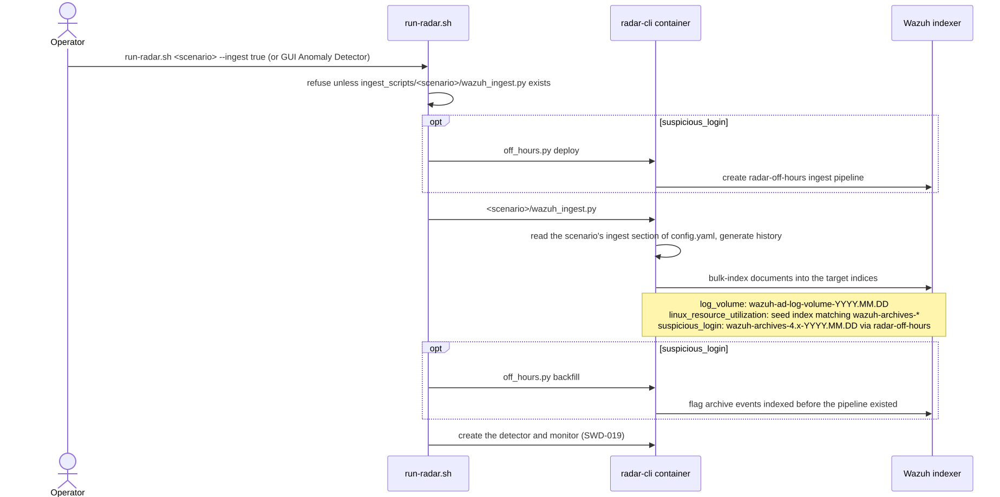
See: docs/manual/radar_docs/radar-run-ad.md.
Parent links: LARC-015 RADAR scenario setup flow, LARC-042 RADAR test workflow
2.2 RADAR test environment setup SWD-019
Sequence of the setup phase
The setup phase brings a RADAR deployment to the state a simulation needs. It is outside the RADAR Automated Test Framework and uses the deployment control plane (SWD-042):
build-radar.sh <scenario>(or the GUI's Scenario Management) brings up the Wazuh core stack and the webhook if needed and applies the scenario's manager-side configuration: active-response files, enrichment, Filebeat pipeline changes, agent-group configuration, decoders, rules, CDB lists andossec.confblocks (LARC-024).- A short-lived token is minted (
radar.sh mint-tokenor the GUI's Agent Management), andradar-agent/bootstrap-agent.shis run on the test endpoint to install, enroll and group the Wazuh agent and install the active-response scripts and metric collectors. - For scenarios that use the OpenSearch AD plugin,
run-radar.sh <scenario>creates and starts the detector (detector.py) and creates the monitor and its webhook notification channel (monitor.py); forsuspicious_login,off_hours.pycreates the off-hours monitors and detector instead. Ingest (SWD-018) runs first when requested. health-radar.sh --scenario <scenario> --agent-name <endpoint>confirms the deployment before simulating (SWD-040).
No Ansible playbook is involved; the earlier design delegated manager and agent setup to Ansible.
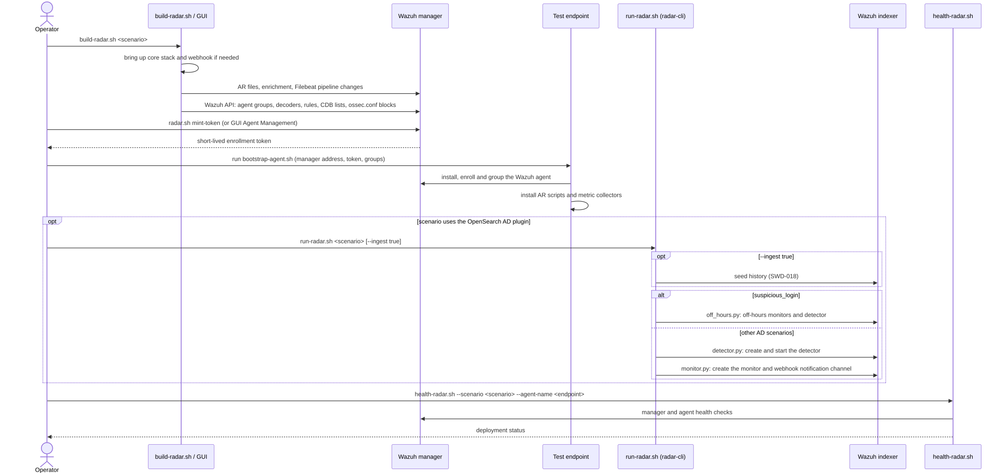
Parent links: LARC-015 RADAR scenario setup flow, LARC-024 RADAR deployment pipeline flow, LARC-042 RADAR test workflow
2.3 RATF: simulation phase SWD-020
Sequence diagram of threat simulation in RATF
The simulation phase is the part of the RADAR Automated Test Framework that is implemented (radar/radar-test-framework/simulate/scenarios/, designed in SWD-039). The operator copies a scenario's script to an enrolled endpoint and runs it there:
- The script writes the scenario's artefact on the endpoint: authentication log lines, web access-log lines, Suricata
eve.jsonrecords, filesystem growth, or real CPU and memory load. - The endpoint's Wazuh agent ships the resulting log lines or collector metrics to the manager, like any other event. The simulator never writes to the indexer.
- Signature scenarios: the manager's decoders, enrichment and rules raise the alert. Anomaly scenarios: the events are indexed, the detector reports an anomaly, the monitor posts it to the webhook, and the webhook's agent sends the
ad_alertline that the manager's AD rules match. - The matching rule triggers
radar_ar.py, which scores the alert, sends the notification and FlowIntel case, and, when the tier andallow_mitigationallow it, triggers containment active responses on the endpoint. - The operator checks the result against the rule IDs the script printed for each case.
For fusion tests of suspicious_login, inject_ad_alert.py runs on the RADAR host instead and posts an anomaly alert directly to the webhook, replacing steps 1 to 3 for the anomaly side.
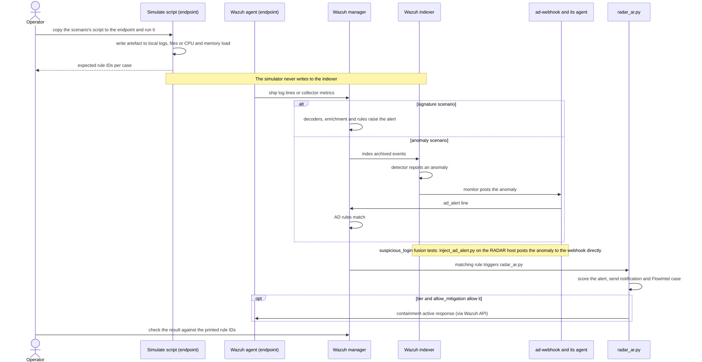
Parent links: LARC-042 RADAR test workflow
2.4 RATF: evaluation phase SWD-021
Status: planned. Not implemented as of v2.2.0. This item specifies intended behaviour; no code implements it yet.
Sequence diagram of metrics evaluation in RATF
The diagram below depicts the intended sequence of the RADAR Automated Test Framework's evaluation phase, which - retrieves the events and detection results of a simulation run from the indices of the scenario, - calculates evaluation metrics by comparing them with the injected ground truth of the dataset and the simulation, - writes the evaluation results to a file.
Until it exists, results are checked by hand against the rule IDs each simulation script prints (SWD-020), and, for off-hours detection, by the live checks in radar/radar-test-framework/checks/.
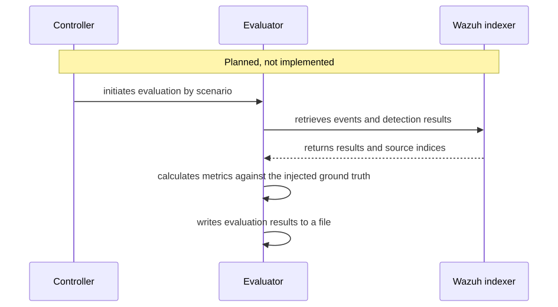
Parent links: LARC-042 RADAR test workflow
2.5 RADAR risk engine implementation design SWD-026
This document specifies the implementation design for RADAR's risk-aware decision engine, which combines anomaly detection, signature-based detection, and cyber threat intelligence into a unified risk score that drives tiered automated responses.
Mathematical specification
Risk formula
The normalized risk score R ∈ [0,1] is computed as:
$$R = w_A \cdot A + w_S \cdot S + w_T \cdot T$$
A scenario's weights are expected to sum to 1. This is a configuration convention, not enforced: the result is clamped to [0, 1].
Component calculations
Anomaly intensity (A): $$A = G \times C$$
Where:
- G: anomaly grade carried by the alert (
data.anomaly_grade) $\in [0,1]$ - C: confidence carried by the alert (
data.anomaly_confidence) $\in [0,1]$
They come from the OpenSearch AD alerts relayed by the RADAR webhook: an alert matched by ad.rule_ids is scored only if the webhook agent read it from the anomaly alert log (SWD-027), so other sources of these fields (such as SONAR alerts, raised by the manager) are not scored as anomalies today.
Signature risk (S): $$S = L \times I$$
Where:
- L: likelihood of the alert's rule, from the scenario's
signature_likelihood(a number, or a list matched by rule ID or rule group) $\in [0,1]$ - I: the scenario's
signature_impact$\in [0,1]$
S is computed for an alert that matched a signature rule (detection signature or hybrid). An alert that matched only an anomaly rule has $S = 0$ of its own, and an alert that matched only a signature rule has $A = 0$ of its own; temporal fusion (below) may supply the missing component.
CTI score (T):
$$T = \text{clamp}(cti_score_T,\ 0,\ 1)$$
radar_ar.py does not aggregate CTI indicators locally. T is the single normalized score returned by the DECIPHER analyze endpoint for the scenario's payload (SWD-038), clamped to [0,1] as a defensive bound. If DECIPHER is unreachable, or the scenario has no DECIPHER analyze endpoint mapped, T = 0.0 and w_cti should be set to 0 (or redistributed into w_ad/w_sig) in that scenario's ar.yaml entry.
Weights
There are no built-in default weights: a weight missing from a scenario's block is 0. The shipped weights per scenario are listed in LARC-021. As a guide, signature-only scenarios put most weight on $w_S$, anomaly-only scenarios on $w_A$, and $w_T$ is set to 0 (or moved into the other weights) when the scenario has no DECIPHER analysis endpoint.
Temporal fusion
Each alert carries one detection component of its own. For a scenario that enables fusion (fusion.enabled in ar.yaml, with both ad.rule_ids and signature rules, and $w_A > 0$, $w_S > 0$), the other component is taken from the strongest alert of the other detection type on the same entity, discounted by the time gap.
Definitions (alert $x$ being decided, entity $e$ named by the configured key fields, window $W$ minutes, lead $L \ge 0$ minutes):
- An anomaly alert $j$ has a data window $[d_s^j, d_e^j]$ (from
data_start/data_end; else the monitor period; else its timestamp). Its extended window is $[d_s^j - L,\ d_e^j]$. - The gap $\Delta$ between a signature alert at time $t$ and an anomaly alert is the distance from $t$ to the extended window: 0 inside it.
- The weight is $w(\Delta) = \max(0,\ 1 - \Delta / W)$.
Fused components:
$$A^ = \max\Big(A_x,\ \max_{j} A_j \cdot w(\Delta_j)\Big) \qquad S^ = \max\Big(S_x,\ \max_{i} S_i \cdot w(\Delta_i)\Big)$$
where $j$ ranges over trusted anomaly alerts for $e$ (for a signature alert $x$) and $i$ over the scenario's signature alerts for $e$ (for an anomaly alert $x$), with $A_j = G_j \times C_j$ and $S_i = L(\text{rule}_i) \times I$. Then $R = \text{clamp}(w_A A^ + w_S S^ + w_T T,\ 0,\ 1)$, the same linear formula and weights as without fusion.
Properties (normative):
- Monotone: $R_{\text{fused}} \ge R_{\text{single}}$. With no counterpart, $R_{\text{fused}} = R_{\text{single}}$ exactly, so a scenario's calibration for single alerts is unchanged.
- No waiting: the counterpart is looked up once, backwards, when $x$ is decided. Whichever alert arrives second gets the combined score.
- Strongest, not sum: a burst of counterpart alerts counts once.
- Trusted evidence only: an anomaly counterpart counts only if it came from the anomaly-detection webhook agent and log (as for an anomaly alert being decided).
- Score only: the counterpart never supplies a mitigation target. A lookup failure is logged and the alert is decided on its own.
Configuration (per scenario):
| Key | Default | Meaning |
|---|---|---|
fusion.enabled |
false |
Opt-in |
fusion.window_minutes |
30 | $W$ |
fusion.ad_lead_minutes |
0 | $L$; set to $(\text{shingle_size} - 1) \times \text{detector_interval}$ |
fusion.key.ad |
data.entity_keyword |
Entity field of an anomaly alert |
fusion.key.signature |
agent.name |
Field(s) of a signature alert that must equal it |
Rationale: anomaly alerts lag their data by the detector interval, its delay and the monitor interval, and either kind of alert may never come; waiting would delay containment for evidence that may not exist. A silent detector is treated as no evidence rather than evidence against, so an attacker who evades the detector cannot also lower the signature-driven score. Keeping the linear formula keeps the existing single-alert calibrations valid; a noisy-OR combination was considered and rejected for that reason (it changes every alert's score).
Algorithm specification
Risk calculation algorithm
Input parameters:
anomaly_grade: AD output grade $\in [0,1]$confidence: AD output confidence $\in [0,1]$likelihood: Scenario likelihood $\in [0,1]$impact: Scenario impact $\in [0,1]$cti_score_T: DECIPHER's score $\in [0,1]$, or 0.0 when unavailable or unmappedfusion: the matched counterpart (its kind and discounted score), or noneweights: Dict with keys $\omega_{ad}, \omega_{sig}, \omega_{cti}$
Algorithm:
- Calculate component A: $A = \text{anomaly_grade} \times \text{confidence}$
- Calculate component S: $S = \text{likelihood} \times \text{impact}$
- If a fusion counterpart is given, raise the component it supplies: $A = \max(A, \text{value})$ for an anomaly counterpart, $S = \max(S, \text{value})$ for a signature counterpart.
- Calculate component T: $T = \text{clamp}(\text{cti_score_T}, 0, 1)$. CTI indicators are aggregated by DECIPHER, not here.
- Compute weighted risk: $R = w_{\text{ad}} \times A + w_{\text{sig}} \times S + w_{\text{cti}} \times T$
- Clamp to bounds: $R = \max(0, \min(1, R))$
Returns: Risk score R ∈ [0,1]
Tier determination algorithm
Inputs:
risk_score: Calculated risk $R \in [0,1]$tiers: Dict with keystier1_min(default: 0.0),tier1_max(default: 0.33),tier2_max(default: 0.66), read from the scenario'sar.yamlentry
Mapping logic (four tiers; see SRS-061 for the normative response semantics of each):
- If $R < \text{tier1_min}$: Tier = 0
- Else if $R < \text{tier1_max}$: Tier = 1
- Else if $R < \text{tier2_max}$: Tier = 2
- Else: Tier = 3
Returns: Tier integer (0, 1, 2, or 3)
Configuration schema (ar.yaml)
Each scenario block in radar/scenarios/active_responses/ar.yaml carries its own values; nothing is inherited from another block. Abbreviated example:
scenarios:
suspicious_login:
ad: {rule_ids: ["210040", "210041"]}
signature: {rule_ids: ["210013", "210020", "210021", "210022", "210030", "210031"]}
w_ad: 0.3
w_sig: 0.4
w_cti: 0.3
signature_impact: 0.7
signature_likelihood:
- {rule_id: [210013, 210022, 210030, 210031], weight: 0.6}
- {rule_id: [210020, 210021], weight: 0.4}
fusion: {enabled: true, window_minutes: 30, ad_lead_minutes: 10}
tiers: {tier1_min: 0.15, tier1_max: 0.33, tier2_max: 0.55}
signature_likelihood is either one number or a list of entries matched in order by rule_id (one or several) or rule_group; an entry with neither matches any alert, and an alert matching no entry has $L = 0$.
Implementation interfaces
Implemented in radar/scenarios/active_responses/radar_ar.py:
class RiskEngine:
def compute(self, scenario: dict, cti_score_T: float,
ad_grade: float | None, ad_conf: float | None,
fusion: dict | None = None) -> dict:
"""Returns {"risk_score", "tier", "components"}. components holds A, S, T,
their weighted contributions, the inputs (grade, confidence, likelihood,
impact) and, when a counterpart raised a component, "fusion"."""
class FusionCorrelator:
def correlate(self, scenario: dict) -> dict | None:
"""The strongest discounted counterpart for the alert being decided, or None.
Keys: counterpart ("ad" | "signature"), value, raw_score, weight,
gap_minutes, alert_id, rule_id, timestamp, candidates."""
Weights are not validated against summing to 1; the result is clamped to [0, 1].
Testing requirements
Unit test coverage
Test cases must cover:
- Boundary conditions: R = 0, R = 1, tier thresholds
- Clamping: weights summing above 1.0 give $R \le 1$
- CTI clamping:
cti_score_Tof 0.0 (unavailable/unmapped), a mid-range value, and an out-of-bounds value (e.g. > 1.0) to confirm clamping - Tier mapping: Each tier range, threshold boundaries
- Component isolation: Each of A, S, T independently; an anomaly alert's own S is 0
- Fusion: no counterpart gives the single-alert score exactly; a counterpart raises only the missing component and never lowers one; linear decay, lead and window edge; strongest counterpart, not the sum; untrusted anomaly alerts and other entities ignored; fusion off unless fully configured
Example test case specification
Test: Medium tier risk calculation
Given:
- Weights: $\omega_{ad}=0.4, \omega_{sig}=0.4, \omega_{cti}=0.2$
- Tier thresholds: tier1_min=0.0, tier1_max=0.33, tier2_max=0.66
- Inputs: anomaly_grade=0.62, confidence=0.74, likelihood=0.4, impact=0.9
- CTI score: cti_score_T = 0.76 (as returned by DECIPHER's analyze endpoint)
Expected:
- Component A = 0.4588
- Component S = 0.36
- Component T = 0.76
- Risk score R = 0.4795 (within [0.47, 0.48])
- Tier = 2
Integration points
- Input: Alert data from Wazuh (via stdin JSON)
- Configuration: ar.yaml loaded at active response initialization
- Output: Risk score and tier logged to active-responses.log
- Action planning: Tier drives action selection in radar_ar.py
Performance requirements
- Algorithmic complexity: O(1) for the calculation; O(n) for the fusion lookup, n = counterpart alerts returned (at most 200)
- No external API calls during calculation (CTI and the fusion counterpart are looked up earlier in the pipeline; the fusion lookup is one indexer search, only for scenarios that enable fusion)
- Target execution time: < 10ms (suitable for synchronous active response)
Implementation references
Primary implementation: radar/scenarios/active_responses/radar_ar.py
Configuration files:
- radar/scenarios/active_responses/ar.yaml
- Scenario artifacts: radar/scenarios/
Related documentation:
- Practitioner-facing tuning guide (weights, tiers, mitigations): docs/manual/radar_docs/radar-tuning.md
- Architecture context: HARC-012 (RADAR risk engine architecture)
- Active response pipeline that invokes this engine: SWD-027
Parent links: LARC-021 RADAR risk engine calculation flow, LARC-026 RADAR active response decision pipeline, LARC-035 RADAR suspicious login flow: signature, off-hours and fusion, LARC-036 RADAR scanning detection flow, LARC-037 RADAR Linux resource utilization flow
2.6 RADAR active response script design SWD-027
This document specifies the software design for radar_ar.py, the Wazuh active response script that orchestrates risk-aware automated response for every RADAR scenario. It supersedes the previous version of this document in three respects: the class list did not match the implementation, the decision ID formula and risk formula it restated diverged from SRS-061 and SWD-026, and it described an idempotency cache that does not exist. The risk formula itself is not restated here; it is normatively defined in SWD-026 and HARC-012, and this document only describes how radar_ar.py invokes it.
Architecture overview
The script is a single-process pipeline invoked once per matching Wazuh alert, reading the alert as JSON on stdin and exiting with a status code. It combines three design patterns:
- Strategy pattern: per-scenario behaviour (context time window, effective agent, target IP resolution, DECIPHER payload shape) is implemented as a
BaseScenariosubclass per scenario —GeoipDetection,SuspiciousLogin,LogVolume,LinuxResourceUtilization,ScanningDetection— selected by aRegistrykeyed on scenario name. Scenarios that need no scenario-specific behaviour do not override any method. - Registry pattern:
ScenarioIdentifiermaps an alert's rule ID or rule groups to a scenario, per the matching rules in SRS-061 §3. - Pipeline pattern:
RadarActiveResponse.run()sequences the stages below, with each external dependency (OpenSearch, DECIPHER, the Wazuh API) isolated behind its own client class so a failure in one does not prevent the others from running.
Pipeline stages
- Read and parse the alert from stdin. An empty or unparseable payload ends the pipeline (exit 1); no further stage runs.
- Identify the scenario via
ScenarioIdentifier, per SRS-061 §3. No match ends the pipeline (exit 0, not an error) after a WARNING log; no further stage runs. - For an
adorhybridalert, check its origin (AdAlertOrigin): it must come from the webhook agent (WEBHOOK_AGENT_NAME, defaultad-webhook) and the anomaly alert log (AD_ALERTS_LOCATION, default/var/log/ad_alerts.log). Otherwise the pipeline ends (exit 0) after a WARNING log, without scoring or action. - Collect context: resolve the scenario's time window and effective agent (SRS-061-adjacent, see below), query OpenSearch for correlated events within that window, extract IOCs from the alert and the correlated events.
- Check DECIPHER health (cached for the remainder of this process; not retried, per SRS-061 §4(i)). If healthy, request CTI analysis via the scenario's
build_analyze_payload(); if unhealthy, or if the scenario has no DECIPHER analyze endpoint mapped, proceed with a null CTI result (cti_score_T = 0.0). - Resolve anomaly grade and confidence from the alert, if the scenario's detection type is
adorhybrid. - If the scenario enables temporal fusion, look up the strongest counterpart alert of the other detection type for the same entity (
FusionCorrelator, SWD-026). A lookup failure is logged and the alert is decided on its own. - Compute the risk score and tier via the risk engine (SWD-026), passing the counterpart if any. A matched counterpart is also added to the decision's display extras, so it appears in the email and the incident.
- Build the decision ID (below) and resolve the target IP.
- If DECIPHER is healthy and the tier is 1 or above, create a Flowintel incident per SRS-061 §5.
- Plan actions for the tier (below).
- Execute planned actions: check the allowlist once per decision, then dispatch each planned mitigation through the Wazuh API. For a scenario with an
allowlist_file, an audit entry is written for every outcome — including a declined or empty plan (see Audit log format). - Send the email notification if the tier is 1 or above, per SRS-061 §5(iii).
- Log pipeline completion and return 0.
An unhandled exception at any stage is caught at the top level, logged at CRITICAL with a full traceback, and the script exits 2.
Per-scenario overrides
GeoipDetection inherits BaseScenario unmodified. The other scenarios override it:
SuspiciousLoginhandles its two kinds of alert differently. For an anomaly alert (rule 210040 from the off-hours model-mode detector, or 210041 from the rule-mode monitor), the entity is a username, so the context is that user's events on any agent rather than the webhook agent's logs, the effective agent is the agent that appears most often in them, and DECIPHER is asked about that user. For any alert, DECIPHER'susernameis the user named in the alert itself, then the anomalous user, and only then the first user in the context events.LogVolumeresolves its time window fromperiod_start/period_endon the alert'sdata, when both are present (capped atdelta_ad_minutesand at the alert time), rather than the delta-based window every other scenario uses; the delta-based fallback still applies if either is absent. It resolves its effective agent fromdata.entity_keywordwhen present, falling back to the alert's own agent name otherwise. Both fields are populated by the OpenSearch anomaly detector's alert payload, not by an external subsystem.LinuxResourceUtilizationinherits this behaviour.ScanningDetectionuses the base context query (all events on the agent in the window). Its source IP is the Suricatasrc_ip; only when that peer is listed in the scenario'strusted_proxiesdoes it take the right-mosthttp.xff(X-Forwarded-For) hop that is a valid IP and not itself a trusted proxy, so a client cannot choose the blocked address by forging the header. Its DECIPHER payload and display extras are built from aggregated HTTP fields (source IPs, URIs, methods, User-Agents) across the context events, plus an ordered chain of the rule IDs and descriptions that fired.
Context collection
BaseScenario.collect_context() queries the indices in OS_INDEXES (default wazuh-alerts-*,wazuh-archives-*) for events within the scenario's time window (delta_ad_minutes for ad-detection scenarios, delta_signature_minutes otherwise — defaults 10 and 1 respectively), filtered to the effective agent for signature and hybrid scenarios, and for pure ad scenarios as overridden above (LogVolume: the entity agent; SuspiciousLogin: the entity user); otherwise unfiltered. The context feeds IOC extraction, the DECIPHER payload, the email and the incident; it does not enter the risk score. A query returning no events is retried up to AR_CONTEXT_QUERY_ATTEMPTS times (default 4) at AR_CONTEXT_QUERY_RETRY_SECONDS intervals (default 1.5s), to absorb indexing lag between the alert firing and its correlated events becoming searchable. Exhausting all attempts is logged as a WARNING and context collection proceeds with zero events rather than failing the pipeline.
Decision ID
Computed by DecisionId.build() as specified in SRS-061 §6(i): the SHA-256 hex digest of the JSON serialisation (sorted keys) of {alert_id, timestamp, rule_id, agent_id, scenario, detection, window, effective_agent}. The decision ID is used for audit correlation and for the DECIPHER incident reference. It is not used for deduplication: radar_ar.py does not maintain a decision cache, and re-delivery of the same alert is not itself suppressed by this script.
CTI scoping
DECIPHER analyze endpoints are mapped per scenario, not universally. Only scenarios with a mapped endpoint receive a non-zero CTI score when DECIPHER is healthy; a scenario with no mapped endpoint always receives cti_score_T = 0.0 regardless of DECIPHER's availability, logged once per invocation as a WARNING. A scenario's w_cti weight in ar.yaml should be set to 0, or redistributed into w_ad/w_sig, if that scenario has no mapped analyze endpoint.
Action planning
ActionPlanner.plan() implements the tier-to-action mapping from SRS-061 §1: email and incident creation from Tier 1 up; mitigations_tier2 at Tier 2 and mitigations_tier3 at Tier 3, gated on the scenario's allow_mitigation flag. When no mitigation is planned, the plan records a withheld_reason — mitigation_disabled if allow_mitigation is false, tier_out_of_mitigation_range if the tier has no configured mitigations — so the audit entry states why nothing executed rather than leaving it implicit.
Mitigation actions are dispatched by the exact identifier strings firewall-drop, lock_user_linux.sh and terminate_service.sh, per SRS-061 §1(v); any other identifier is refused (reason unsupported_mitigation). Their arguments:
firewall-drop: the decision's target IP, refused when it is not an IP address (invalid_target) or is protected byNeverBlock(never_block:global.never_blockinar.yaml, loopback, link-local, multicast and the manager's own addresses), or when the alert has none (no_alert_source_ip).lock_user_linux.sh: the user fields of the alert being decided only (dstuser,srcuser,user,username), never users found in the context events, neverrootor an account in the scenario'sprotected_users, and only well-formed user names; an alert with none locks nobody (reasonno_alert_user).terminate_service.sh: a service found in the context IOCs and listed in the scenario'sterminable_services; otherwise the alert's own remote IPv4 source (the agent script then ends that address's connections); otherwise nothing.
The agent-side scripts re-check their own allowlists (SRS-061, docs/manual/radar_docs/radar-tuning.md#mitigations).
Allowlist enforcement
AllowlistGuard implements SRS-066 §7–8, generalised to any scenario that sets allowlist_file in ar.yaml — not only scanning_detection. The allowlist is a Wazuh CDB list; a target present in it declines the mitigation (audit reason allowlist) but does not suppress the underlying alert, detection, or risk scoring. A scenario with no allowlist_file configured allows every target unconditionally. An unreadable allowlist file declines fail-closed (audit reason allowlist_unreadable) rather than fail open, consistent with the rationale in SRS-066 §8: a declined block is recoverable, an executed block against unverified infrastructure is not, within its timeout.
Agent resolution
Mitigations are dispatched against a Wazuh agent ID, resolved in order: by name, via the Wazuh API, using the context's effective agent; falling back to the alert's own agent.id if that lookup fails or returns nothing. A mitigation whose agent cannot be resolved by either path is skipped and audited as declined (unresolved_target), not silently dropped.
Audit log format
All stages log human-readable lines (<time> [LEVEL] <message> {json}) to /var/ossec/logs/active-responses.log (AR_LOG_FILE), including the risk components, the planned and withheld actions, the case and the dispatch results.
In addition, for a scenario that sets allowlist_file in ar.yaml (today scanning_detection), every action outcome — executed, declined for any reason, or a decision with nothing planned — produces one audit entry, written as a single line to the same file in the format native Wazuh active response scripts use, so it decodes through Wazuh's shipped ar_log_json decoder (rule 650) without a RADAR-specific decoder. Each entry carries at minimum decision_id, rule_id, source_ip, action, tier, result (executed or declined), and, where applicable, reason. Scenarios without an allowlist_file write no such entries.
Requirements
-
The script shall exit 1 only when the alert cannot be read or parsed from stdin, exit 0 for every other outcome that completes the pipeline (including no scenario match), and exit 2 for an unhandled exception.
-
A stage failure in DECIPHER health checking, CTI analysis, or incident creation shall not prevent risk scoring, action planning, mitigation execution, or the audit log entry from completing.
-
For a scenario with an
allowlist_file, every planned or declined action shall produce exactly one audit log entry; a decision with no mitigation planned shall still produce one audit entry withaction: noneand itswithheld_reasonas reason. -
The allowlist check shall be performed at most once per decision, before any mitigation in that decision is dispatched, and its outcome shall be recorded even when it results in zero mitigations being audited individually (i.e. the decline is attributed to each planned mitigation).
-
Mitigation dispatch shall use the identifier strings specified in SRS-061 §1(v) exclusively; an identifier configured in
ar.yamlthat does not match one of them shall be refused and logged (unsupported_mitigation), not silently ignored. -
lock_user_linux.shshall never be dispatched with a resolved username ofrootor of an account in the scenario'sprotected_users, and no IP-targeted mitigation shall be dispatched against anever_blockaddress. -
lock_user_linux.shshall only be dispatched against users named in the alert being decided, andfirewall-droponly against that alert's source IP; neither shall take a target from context events or from a fusion counterpart. -
A failure of the fusion lookup shall not prevent risk scoring or any later stage; the alert is then scored on its own.
Acceptance criteria
- Exit codes: an empty stdin payload exits 1; a well-formed alert matching no scenario exits 0; a well-formed alert raising an unhandled exception in any stage exits 2.
- DECIPHER unavailability: with DECIPHER unreachable, a Tier 2 alert still receives email, audit logging, and — if
allow_mitigationis true — mitigation execution. - Unmapped scenario CTI: for a scenario with no DECIPHER analyze endpoint mapped,
cti_score_Tis 0.0 in the logged risk components regardless of DECIPHER's health. - Allowlist decline: for a scenario with an
allowlist_file, a target present in the allowlist produces adeclined/allowlistaudit entry and no active response dispatch, while the underlying alert and risk score are unaffected. - Unresolved agent: for a scenario with an
allowlist_file, a decision whose effective agent cannot be resolved by name or by the alert's own agent ID produces adeclined/unresolved_targetaudit entry, not a dispatch attempt. - No root lock: a
lock_user_linux.shmitigation whose only resolved username isrootproduces no dispatch for that identity. - Audit decodability: an audit log entry parses under Wazuh's
ar_log_jsondecoder (rule 650) without a RADAR-specific decoder. - Lock target: with context events naming other users, a
lock_user_linux.shmitigation targets only the alert's own user; an alert naming no Linux user produces no dispatch. - Fusion target: a decision raised by a fusion counterpart on an anomaly alert dispatches no
firewall-dropand nolock_user_linux.sh. - Fusion failure: with the fusion lookup raising an error, the pipeline still plans, executes and audits the decision on the alert's own score.
- Untrusted anomaly alert: an alert matched by
ad.rule_idsthat did not come from the webhook agent's anomaly alert log exits 0 without scoring, case, email or dispatch.
Parent links: LARC-026 RADAR active response decision pipeline, LARC-035 RADAR suspicious login flow: signature, off-hours and fusion, LARC-036 RADAR scanning detection flow, LARC-037 RADAR Linux resource utilization flow
2.7 RADAR detector module design SWD-028
This document specifies the software design of radar/anomaly_detector/detector.py, which creates and starts the OpenSearch Anomaly Detection (RCF) detector of a RADAR scenario from its config.yaml block. It is used for log_volume and linux_resource_utilization; the suspicious_login model-mode detector is built by radar/anomaly_detector/off_hours.py, which reuses this module's specification builder, detector lookup and session helpers.
Module overview
The module is a script of plain functions (no classes) that:
- finds an existing detector by name (idempotent),
- builds the detector specification from the scenario block,
- waits until the source index has documents, then creates the detector,
- starts the detector (new or existing) and prints its ID.
Function specifications
Signatures as implemented (bodies omitted). sess is a requests.Session with basic auth; base the indexer URL.
def find_detector_id(sess, base: str, name: str, verify: bool, timeout: float) -> str | None:
"""POST /_plugins/_anomaly_detection/detectors/_search, exact name.keyword match.
A 404 (AD system index not created yet) means no detector."""
def detector_spec(scn_name: str, scn: dict) -> dict:
"""AD detector body named f"{scn_name.upper()}_DETECTOR"."""
def wait_for_documents(sess, base: str, index_pattern: str, verify: bool, timeout: float,
attempts: int = 10, delay_seconds: float = 1.0) -> None:
"""Poll <index_pattern>/_count until it is non-zero or attempts run out."""
def create_detector(sess, base: str, spec: dict, verify: bool, timeout: float) -> str:
"""wait_for_documents, then POST /_plugins/_anomaly_detection/detectors; returns _id."""
def start_detector(sess, base: str, det_id: str, verify: bool, timeout: float) -> None:
"""POST /_plugins/_anomaly_detection/detectors/{det_id}/_start."""
Helpers: index_pattern(scn), build_features(scn), build_filter_query(scn), build_category_field(scn), build_rules(scn), pick_scenario(cfg, name), load_env(path), make_session(user, pwd).
Main orchestration
main(), run as python detector.py <scenario> from the directory holding config.yaml and .env:
- Load
.env(values already in the environment win) andconfig.yaml. - Select the scenario block; an unknown scenario exits with an error.
- Find the detector
<SCENARIO>_DETECTOR; if absent, build the specification and create it. - Start the detector.
- Write the detector ID to stdout; progress messages go to stderr.
Environment variables: OS_URL (required), OS_USER, OS_PASS, OS_VERIFY_SSL (default true), OS_TIMEOUT (seconds, default 30).
Exit codes: 0 (success), 1 (any error, message on stderr).
Configuration schema
Scenario keys read by detector_spec():
| Key | Required | Default | Detector field |
|---|---|---|---|
log_index_pattern or index_prefix |
yes | — | indices (log_index_pattern, else <index_prefix>-*) |
time_field |
yes | — | time_field |
result_index |
yes | — | result_index |
features |
yes | — | feature_attributes |
detector_interval |
no | 5 | detection_interval (minutes) |
delay_minutes |
no | 1 | window_delay (minutes) |
shingle_size |
no | 8 | shingle_size |
categorical_field |
no | none | category_field |
filter_query |
no | match all | filter_query (must be a mapping) |
imputation_option |
no | {method: ZERO} |
imputation_option |
rules |
no | none | rules (e.g. IGNORE_ANOMALY conditions) |
result_index_min_age, result_index_min_size, result_index_ttl, flatten_custom_result_index |
no | 10, 51200, 60, false | result index settings |
See radar/config.yaml for the shipped scenarios.
Error handling
- Detector already exists: reused and started again; it is not compared with or updated to the current configuration.
- Empty source index: creation waits up to
attempts × delay_secondsfor documents, then tries anyway; the AD plugin may then refuse to start it. - API errors: a non-201 create or non-200 start response, or any HTTP or other exception, prints the status and body on stderr and exits 1. There is no retry.
Integration
run-radar.sh <scenario> runs the module in the radar-cli container and passes the printed ID to monitor.py (SWD-029).
Implementation
- radar/anomaly_detector/detector.py
- radar/config.yaml
- docs/manual/radar_docs/radar-run-ad.md - operator documentation
Parent links: LARC-017 RADAR integration with OpenSearch modules, LARC-022 RADAR detector creation workflow, LARC-037 RADAR Linux resource utilization flow
2.8 RADAR monitor and webhook module design SWD-029
This document specifies the detailed design of the monitor and webhook Python modules used in RADAR's anomaly detection workflow. They create and maintain the OpenSearch alerting monitor of a detector and the notification channel it posts to. The receiving webhook service is specified in SWD-035.
Module overview
Both modules are scripts of plain functions (no classes):
radar/anomaly_detector/webhook.py: manages the OpenSearch Notifications channel (config_type: webhook) that points at the RADAR webhook service, including its shared-secret header.radar/anomaly_detector/monitor.py: builds, creates and updates the query-level alerting monitor that reads a detector's result index and notifies the channel.
radar/anomaly_detector/off_hours.py reuses both for the suspicious_login off-hours monitors.
webhook.py structure
![UML Diagram]( "UML")
| Function | Purpose | Returns |
|---|---|---|
notif_list() |
GET /_plugins/_notifications/configs |
List of channel configs |
notif_find() / notif_find_id() |
Find a webhook channel by exact name (and URL, if given) |
Channel config / ID, or None |
notif_create() |
POST /_plugins/_notifications/configs with URL and optional header parameters |
Channel ID |
notif_update() |
PUT /_plugins/_notifications/configs/{id} |
— |
webhook_headers() |
{X-RADAR-Webhook-Token: WEBHOOK_SHARED_SECRET}, or None when unset |
Header dict |
ensure_webhook() |
Find by name and URL; update the header when it differs; else create | Channel ID |
monitor.py structure
![UML Diagram]( "UML")
Monitor creation sequence
![UML Diagram]( "UML")
Monitor payload structure
Schedule: every monitor_interval, else detector_interval (default 5), minutes.
Search input on result_index:
- results of this
detector_idwhoseexecution_end_timelies in the last interval before the run'speriod_end, anomaly_grade≥anomaly_grade_thresholdandconfidence≥confidence_threshold,- sorted by grade then confidence, descending, at most
monitor_max_entitieshits (default 5, clamped to 1–50), - aggregation
max(anomaly_grade).
Trigger condition (Painless): there is at least one hit, the maximum grade is at or above anomaly_grade_threshold, and the top hit's confidence is at or above confidence_threshold.
Action message (message_template()): the top hit's keys at top level, for webhooks that read only those, plus one anomalies entry per hit. periodStart/periodEnd are the monitor's run window; dataStart/dataEnd the anomaly's own data window (epoch milliseconds). Rendered shape:
{
"monitor": {"name": "LogVolume-Monitor"},
"trigger": {"name": "LogVolume-Growth-Detected"},
"entity": "edge.vm",
"periodStart": "…", "periodEnd": "…",
"anomaly_grade": "0.85", "anomaly_confidence": "0.92",
"dataStart": "1771236000000", "dataEnd": "1771236060000",
"anomalies": [
{"entity": "edge.vm", "anomaly_grade": "0.85", "anomaly_confidence": "0.92",
"dataStart": "1771236000000", "dataEnd": "1771236060000"},
null
]
}
The trailing null keeps the array valid JSON after the mustache loop's last comma.
Configuration parameters
From the config.yaml scenario section:
| Parameter | Default | Description |
|---|---|---|
monitor_interval |
detector_interval |
Monitor evaluation frequency (minutes) |
detector_interval |
5 | Detector run interval (minutes) |
anomaly_grade_threshold |
0.2 | Minimum anomaly grade to report (0-1) |
confidence_threshold |
0.2 | Minimum confidence to report (0-1) |
monitor_max_entities |
5 | Entities reported per run (1-50) |
result_index |
— (required) | Detector result index |
monitor_name |
{scenario}-monitor |
Monitor name |
trigger_name |
{scenario}-trigger |
Trigger name; Wazuh rules match it (SWD-034) |
From config.yaml (webhook.name, webhook.url) or the environment:
| Variable | Required | Description |
|---|---|---|
OS_URL |
Yes | OpenSearch endpoint URL |
OS_USER, OS_PASS |
No | OpenSearch credentials |
OS_VERIFY_SSL |
No | TLS verification (default true; monitor.py falls back to DASHBOARD_VERIFY_SSL) |
WEBHOOK_NAME |
No | Channel name (default "RADAR Webhook") |
WEBHOOK_URL |
Yes | Webhook endpoint URL (e.g. http://<webhook-host>:8080/notify) |
WEBHOOK_SHARED_SECRET |
No | Sent as X-RADAR-Webhook-Token; the webhook service rejects requests without it (SWD-035) |
Error handling
- Any unexpected HTTP status, or a missing
OS_URL/WEBHOOK_URL, prints the status and response on stderr and exits 1. There is no retry. - Idempotency:
ensure_webhook()andfind_monitor()reuse existing resources; a stale monitor (other detector, or payload fingerprint differs after a configuration or code change) is updated in place.
Integration with RADAR workflow
run-radar.shexecutesdetector.py(SWD-028) and passes the detector ID tomonitor.py.monitor.pyensures the channel and creates or updates the monitor.- The monitor runs every interval and posts to the RADAR webhook service when the trigger condition holds (SWD-035).
Parent links: LARC-017 RADAR integration with OpenSearch modules, LARC-023 RADAR monitor and webhook workflow, LARC-035 RADAR suspicious login flow: signature, off-hours and fusion, LARC-037 RADAR Linux resource utilization flow
2.9 RADAR manager-side enrichment module design SWD-030
This document specifies the design of RADAR's log enrichment layer, which adds geographic, network and behavioural context to authentication and web access events before they are evaluated by the scenario rulesets.
Enrichment executes on the Wazuh manager, as an integratord integration.
It supersedes the previous design, in which a radar-helper.py daemon ran on
each monitored endpoint. That daemon, its virtualenv, its systemd unit and its
per-endpoint GeoIP databases have been removed.
Design rationale
Centralising enrichment on the manager was driven by correctness as much as by deployment cost:
- Per-user state was previously per-endpoint. Geo-velocity and ASN novelty are computed against a user's recent login history. With state held on each endpoint, a user authenticating to two hosts had two disjoint, mutually inconsistent histories, and impossible-travel between those hosts could not be detected at all. State is now single-instance on the manager, so the property holds regardless of which endpoint a user reaches.
- Endpoints carry no RADAR software. A monitored host needs only the Wazuh agent. There is no interpreter, dependency, database file or service to install, patch or monitor on the endpoint.
- GeoIP databases are maintained in one place, under the manager's control, rather than distributed to and refreshed on every endpoint.
Module structure
manager-enrichment/
├── custom-radar-enrich Integration entry point — authentication events
├── custom-radar-web-enrich Integration entry point — web access events
├── enrichment.py Auth parsing, RadarEnricher, tail formatting
├── web_enrichment.py Web access parsing and tail formatting
├── geoip.py MaxMind City/ASN lookup
└── state_store.py UserState, UserStateStore (SQLite)
Deployed layout on the manager:
| Source | Destination |
|---|---|
custom-radar-enrich, custom-radar-web-enrich |
/var/ossec/integrations/ |
enrichment.py, web_enrichment.py, geoip.py, state_store.py |
/var/ossec/integrations/radar_enrichment/ |
| GeoLite2-City / GeoLite2-ASN | /var/ossec/etc/radar/ |
| User state database | /var/ossec/etc/radar/user_state.sqlite3 |
Both entry points run under the Wazuh framework interpreter
(/var/ossec/framework/python/bin/python3) and prepend radar_enrichment/ to
sys.path, so the shared modules are importable without installing a package.
The only third-party dependency is the maxminddb reader, which deployment
installs into that interpreter.
radar/radar_deploy/manager-apply-scenario.sh installs custom-radar-enrich
for suspicious_login, and both entry points for geoip_detection, with the
modules each one needs. It downloads the GeoLite2 databases with
MAXMIND_LICENSE_KEY when they are not already present, and skips the download
with a warning when the key is unset. The integrations and <localfile> entries
come from the manager snippets radar-shared-auth-log-ossec-snippet.xml and
radar-geoip-detection-ossec-snippet.xml in radar/scenarios/ossec/.
Two-pass decoding
Enrichment is invoked by an alert, and its output is re-ingested as a log line. The resulting flow has two decoding passes:
- The
sshddecoders and Wazuh's stock rules classify a rawauth.logline asauthentication_successorauthentication_failed. The scenario ships its own copy of Wazuh's SSH decoder file (0310-ssh.xml), which replaces the stock one through adecoder_exclude. That alert triggers thecustom-radar-enrichintegration, registered on those rule groups. - The integration writes the original line plus a
RADAR …tail to/var/ossec/logs/radar/enriched_auth.log. The manager monitors that file, so the enriched line is decoded a second time — this pass is what the-with-radardecoders in0310-ssh.xmlexist for.
The web path is the same shape, registered on the accesslog group and writing
/var/ossec/logs/radar/enriched_web_access.log; its second pass uses the
geoip_detection copy of the web access-log decoders (0375-web-accesslog.xml).
Requirements
Loop prevention
- Each integration shall terminate without output if the incoming alert's
full_logalready contains its RADAR tail. Without this, the second decoding pass would re-trigger the integration and enrich its own output indefinitely.
Independent parsing
-
The integration shall parse the event timestamp, username, source IP and outcome from the original log text, independently of Wazuh's decoded fields. The scenario's own decoders only populate those fields once a RADAR tail is present, so depending on them would create a circular dependency on the pass the integration is meant to produce.
-
An unparseable line shall cause the integration to exit silently without writing an enriched record, rather than emit a partially populated tail.
Enrichment content
-
For each authentication event the enricher shall resolve, where available: country, region, city, latitude, longitude and ASN of the source address; the geo-velocity implied by the user's previous authentication; whether the country changed; and whether the ASN is novel for that user.
-
Geo-velocity shall be computed as great-circle distance over elapsed time between consecutive events for the same user.
-
ASN novelty shall be evaluated against a bounded, time-windowed history of ASNs previously seen for that user; entries older than the window shall be discarded rather than retained indefinitely.
-
Web access enrichment shall resolve country, region, city, latitude and longitude only. It shall not compute velocity or novelty, which are meaningless for unauthenticated traffic.
-
Web access enrichment shall skip loopback and RFC 1918 IPv4 source addresses, which cannot be geolocated, and lines that are not HTTP access-log lines.
State
-
User state shall be persisted in a single SQLite database on the manager, keyed by username, so that history is consistent across all monitored endpoints.
-
The state database and the enrichment output files shall be group-writable by
wazuh, sinceintegratordand the manager processes run under different accounts.
Failure isolation
-
Enrichment failure shall never suppress the underlying alert. On any exception the integration shall append a diagnostic to
/var/ossec/logs/radar/enrichment_errors.logand exit without output; the first-pass alert remains unaffected. -
Failure to write the error log shall itself be non-fatal.
-
A missing GeoIP database or absent license key shall degrade enrichment to no output for the affected events, not crash the integration or block deployment of the scenario.
Acceptance criteria
- No enrichment loop: an enriched line re-ingested by the manager produces no second enriched record.
- Cross-endpoint velocity: a user authenticating to two different endpoints from distant locations within a short interval produces a geo-velocity value derived from both events.
- Independent parsing: enrichment succeeds on a first-pass alert whose RADAR-specific decoded fields are absent.
- Failure isolation: with the GeoIP databases removed, authentication
alerts continue to be raised, an entry appears in
enrichment_errors.log, and the manager does not stop. - Private-address handling: a web request from an RFC 1918 address produces no enriched record and no error entry.
- State windowing: ASN history entries older than the configured window are absent from the persisted state.
Parent links: LARC-025 RADAR manager-side enrichment pipeline, LARC-035 RADAR suspicious login flow: signature, off-hours and fusion
2.10 RADAR simulation framework software design SWD-039
This document specifies the design of the RADAR scenario simulation framework (radar/radar-test-framework/simulate/), which generates realistic attack artefacts on a monitored endpoint to validate a deployed scenario end to end (SRS-059). There is no orchestrator, no remote dispatch, and no config.yaml integration: each scenario is a standalone script, copied to and executed directly on the endpoint. An earlier version of this design used an Ansible-orchestrated, remote-dispatch entry point (simulate-radar.sh); it no longer exists.
Purpose
Detection scenarios cannot be validated by injecting synthetic OpenSearch documents alone, because signature scenarios evaluate real log lines and the enrichment pipeline parses real log text. The simulation framework instead produces the artefact each scenario actually detects (an auth.log entry, a web access-log line, a Suricata eve.json record, filesystem growth, CPU or memory load) on the endpoint itself, so the full pipeline (agent → manager → decoder → rule → enrichment → risk engine → active response, plus indexer → detector → monitor → webhook for anomaly scenarios) is exercised.
Module inventory
| Module | Kind | Runs on | Responsibility |
|---|---|---|---|
simulate/scenarios/suspicious_login.py |
Python, case-based | Endpoint | SSH failure bursts, impossible-travel and composite login sequences |
simulate/scenarios/geoip_detection.py |
Python, case-based | Endpoint | SSH logins and web requests from whitelisted, non-whitelisted and private addresses |
simulate/scenarios/scanning_detection.py |
Python, case-based | Endpoint | Suricata eve.json records covering every indicator and correlation case in SRS-066 |
simulate/scenarios/log_volume.py |
Python | Endpoint | Exponential filesystem growth under a target directory |
simulate/scenarios/linux_resource_utilization.sh |
Bash | Endpoint | Real CPU and/or memory load with stress-ng, or injected collector metric lines |
simulate/scenarios/inject_ad_alert.py |
Python | RADAR host | Posts one off-hours anomaly to the webhook, for fusion tests |
There is no shared module and no package __init__.py. Each Python script is self-contained and depends only on the Python 3 standard library. linux_resource_utilization.sh needs Bash and, except in inject mode, stress-ng.
radar/radar-test-framework/checks/ holds a separate kind of tool: live checks that run from the RADAR host against the indexer, currently for off-hours activity detection (pipeline cases through _simulate, rule mode end to end, model mode on the synthetic history, and cluster prerequisites). They report pass or fail and exit non-zero on failure.
Design rationale
- No control-node dependency. A script is copied to the endpoint and run there; there is no SSH fan-out, no inventory, and no vault to unlock. This mirrors the removal of Ansible from the deployment control plane (see SWD-042) and for the same reason: the endpoint estate is not assumed to be centrally reachable at simulation time.
- No environment coupling. Each script's tunable values live at the top of the file (a
CONFIGdictionary in the Python scripts, shell variables in the Bash script). There is no shared schema to keep in sync across independent scripts. - Deterministic, addressable output. The case-based scripts, the Bash script and the injector print the rule IDs their output is expected to trigger, so a run can be checked against the Wazuh dashboard without cross-referencing separate documentation.
Common structure
- A configuration block at the top of the file declares every tunable value: target host identity, log path, source address pool, users, timing, and scenario-specific parameters.
- The Python scripts with cases define a
CASEStable mapping each case name to a generator, and an expectation table listing, per case, the source addresses and the rule IDs expected present and absent. - Arguments: no argument runs every case in order; case names run only those cases, and an unknown name is rejected with exit status 2 before anything is written. By default the script pauses after each case and asks the operator to confirm the dashboard was checked (
[y]es / [n]o / [q]uit);-b(or-batch,-non-interactive) runs the cases unattended, spaced bycase_gap_seconds. A per-case summary is printed at the end. - Log lines are appended with
tee -a, undersudowhensudo_teeis set, for environments where the log file is not writable by the invoking user. The log directory is created when missing. - Top-level exception handling is uniform across the Python endpoint scripts:
- A
RuntimeErrorraised for an operational failure (permission denied, disk full, target unwritable) is printed asERROR: <message>to stderr, and the script exits 1. - Any other exception is printed asERROR: <scenario> simulation failed: <message>with a pointer to setRATF_DEBUG=1for the full traceback, and the script exits 1. IfRATF_DEBUGis set, the exception is re-raised instead. - The Bash script exits 1 withERROR: <message>and traces every command whenRATF_DEBUGis set.
suspicious_login.py
Appends sshd-formatted lines with syslog timestamps to log_path (default /var/log/auth.log), with a configurable host name, PID, ports and key fingerprints, and one user per case.
| Case | Produces |
|---|---|
burst |
Failed logins above fail_threshold within burst_window_seconds, same user — rule 210013 |
failed_travel |
Three failed logins from three countries — rule 210020 |
travel |
Three successful logins from three countries — rule 210021 |
composite |
A baseline login stamped baseline_age_hours earlier, a failed burst, then a geographically impossible success — rule 210022 |
benign |
Two successful logins from the same region an hour apart — nothing |
geoip_detection.py
Appends SSH success lines to auth_log_path (default /var/log/auth.log) and web access-log lines in several virtual-host formats to web_log_path (default /var/log/apache2/access.log). Its log-writing logic is duplicated from suspicious_login.py rather than imported, so that each script stays independently copyable.
| Case | Produces |
|---|---|
ssh_non_whitelisted |
SSH login from a non-whitelisted country — rule 100900 |
ssh_whitelisted, ssh_private |
SSH login from a whitelisted country or a private address — nothing |
web_ip, web_domain, web_domainport, web_ip_ip |
Web request from a non-whitelisted country, in each access-log format — rule 100902 |
web_ip_whitelisted, web_private |
Web request from a whitelisted country or a private address — nothing |
log_volume.py
Appends bytes to a spike file under CONFIG["target_dir"] (default /var/log) in CONFIG["steps"] increments, each increment scaled by CONFIG["growth_factor"] from the previous one, up to the CONFIG["max_total_bytes"] and CONFIG["max_step_bytes"] ceilings. If CONFIG["cleanup_minutes"] is greater than 0, a detached background shell process removes the spike file after that many minutes; a value of 0 leaves the file for manual removal. It takes no arguments and does not print a rule ID.
Target rule: 100309, after the anomaly detector's next interval.
scanning_detection.py
Emits Suricata eve.json-formatted records to log_path (default /var/log/suricata/eve.json), matching the field names the SRS-066 ruleset keys on: src_ip, http.http_user_agent, http.status, http.http_method, http.hostname.
| Case | Produces |
|---|---|
i1_only |
A single scanner User-Agent request — rule 100810 only, no confirmation |
i2_only |
Failed requests at the configured threshold — rule 100825 only |
i2_below |
One request fewer than the threshold — rule 100815 only, 100825 does not fire |
i2_spread |
The threshold count spread across four source IPs — nothing fires |
i3_only |
TRACE and PROPFIND from a browser User-Agent — rules 100820/100821, no confirmation |
i3_excluded |
OPTIONS, PUT, DELETE, PATCH — nothing fires |
webdav_app |
PROPFIND from a virtual host on the WebDAV allowlist — nothing fires |
confirm_1_2 |
Scanner User-Agent plus a failed-request burst — rule 100830 |
confirm_1_3 |
Scanner User-Agent plus TRACE — rule 100830 |
confirm_2_3 |
Failed-request burst plus TRACE — rule 100830 |
confirm_split |
Two indicators from two different source IPs — 100830 does not fire |
legit |
A normal session, CORS preflight, crawler and monitoring traffic — nothing above level 3 |
This script exercises every indicator and confirmation path in SRS-066 by name, and is the intended mechanism for validating that specification's acceptance criteria on a live deployment.
linux_resource_utilization.sh
Selects a mode with --mode (or the MODE variable): cpu, mem or both start stress-ng workers that hold CPU load at CPU_LOAD_PCT and/or resident memory up to MEM_TARGET_PCT (capped by MEM_MAX_BYTES, always leaving MEM_MIN_AVAILABLE_BYTES available) for DURATION_SECONDS, reporting usage every REPORT_INTERVAL_SECONDS; inject appends synthetic resource_usage_metric lines to the collector's log instead. Settings are validated before anything starts. The load is released when the script exits, including on interruption; if the script is killed, stress-ng still stops after the duration.
Target rule: 100321.
inject_ad_alert.py
Runs on the host that publishes the webhook port. Builds one anomaly in the monitor's message format (trigger SuspiciousLogin-OffHour-Detected, an entity, grade, confidence and data window) and POSTs it to the webhook's /notify endpoint with the WEBHOOK_SHARED_SECRET read from the environment or radar/.env. Used with a suspicious_login case for the same user, within the fusion window, to test signature and anomaly fusion without a trained baseline.
Target rule: 210040.
Requirements
-
Each Python simulation script shall depend only on the Python 3 standard library. The Bash script shall depend only on Bash, standard utilities and
stress-ng. -
Each simulation script shall be independently executable: copying a single file to the endpoint (or, for the injector, using it from the repository on the RADAR host) and running it shall be sufficient, with no companion file or package required.
-
Each simulation script shall expose its tunable parameters in a single block at the top of the file, editable in place before the script is copied to the endpoint.
-
The case-based scripts shall report, for each case, the Wazuh rule IDs expected present and absent; the Bash script and the injector shall report the rule they are expected to trigger.
-
Each endpoint script shall distinguish an operational failure (permission denied, unwritable target, insufficient disk space, invalid setting) from an unexpected internal error, and shall report the former as a short, actionable message rather than a traceback. An internal error shall additionally offer
RATF_DEBUG=1to obtain the full traceback or command trace on demand. -
The
log_volumescript's background cleanup process shall be detached from the parent process, so that the simulation script may exit while the scheduled removal still executes. -
The case-based scripts shall support running a single named case in isolation, and shall reject an unknown case name before emitting anything. The
scanning_detectionscript shall provide at least one case per indicator (fired alone) and one case per pairwise indicator combination defined in SRS-066.
Acceptance criteria
- No dependencies: each Python script executes successfully on a minimal Python 3 installation with no third-party packages available.
- Rule ID reporting: for each case-based script, the rule IDs printed for each case match the rules that fire in the Wazuh dashboard for a default configuration.
- Failure message clarity: running a script against an unwritable target path produces a single-line
ERROR:message and a non-zero exit code, with no traceback unlessRATF_DEBUG=1is set. - Cleanup detachment: for
log_volumewithcleanup_minutesset, the spike file is removed at the scheduled time even if the parent script has already exited. - Case selection: running a case-based script with no arguments executes every case, running it with a single case name executes only that case, and an unknown case name exits with status 2 without writing.
- Load release:
linux_resource_utilization.shleaves nostress-ngprocess running after it exits or is interrupted.
Related: HARC-005.
Parent links: LARC-042 RADAR test workflow
2.11 RADAR GUI software design SWD-041
This document specifies the software design of the RADAR GUI (radar/gui/), a Flask-based web application providing a browser interface for the RADAR operational lifecycle (SRS-063, SRS-064, SRS-070). It covers the backend-to-frontend architecture, key design decisions, and the access-control and credential model. Frontend component internals (HTML structure, JavaScript event wiring, CSS) are out of scope.
Purpose and scope
The RADAR GUI replaces direct file editing and shell invocation for routine RADAR operations. It wraps build-radar.sh's stages, run-radar.sh, the health-check stages and the radar_deploy/ scripts with a browser interface, manages ar.yaml through structured forms, stores connector credentials in .env, registers infrastructure components in infra.yaml, and holds the host sudo password in a session-scoped, in-memory credential store.
The interface presents four pages — RADAR Scenarios, Connectors, Infrastructure and Deployment — and a Log out control. It does not manage an Ansible inventory: RADAR deploys against the local manager containers and their REST API, so there is no host inventory, no host_vars/, and no vault to unlock.
Module structure
gui/
├── app.py Flask application: access control, all routes, startup and shutdown
├── requirements.txt Runtime dependencies (installed into radar/.venv by radar.sh gui)
├── templates/, static/ Server-rendered pages and their scripts and styles
└── orchestrator/ Backend modules — no Flask dependency
├── ar_config.py Read/write ar.yaml; read the active-response catalog
├── connectors.py Read/write .env, live connector tests, manager env sync
├── deploy.py Action specs, subprocess streaming, wazuh_api calls
├── health.py Health output parsing (not used by any route)
└── vault.py Session-scoped sudo password store
The orchestrator modules are kept free of Flask imports, so the file-management and subprocess logic can be tested independently (radar/tests/py/test_gui_ar_config.py). app.py and the orchestrator also import wazuh_api (config, infra, and the scenario deploy and undo operations).
![UML Diagram]( "UML")
Flask application: app.py
Startup, login and shutdown
./radar.sh gui creates or updates radar/.venv from requirements.txt and starts app.py. The server binds to RADAR_GUI_HOST (default 127.0.0.1) and RADAR_GUI_PORT (default 5000) with a threaded WSGI server, so long-running streaming responses do not block other requests. It warns when bound to a non-loopback address or when RADAR_GUI_DEBUG=1 enables the Werkzeug debugger.
At start it generates a login token (or takes RADAR_GUI_TOKEN), prints the login URL http://127.0.0.1:<port>/?token=<token>, and writes the URL and its PID to an owner-only state file ($XDG_STATE_HOME/radar-gui/gui-<port>.env), from which ./radar.sh gui-url prints it again. RADAR_ROOT (default: the parent of gui/) selects the RADAR installation the GUI manages.
Log out stops every running job, clears all stored sudo passwords, deletes the cookies and shuts the server down. Stopping the server any other way performs the same cleanup.
Access control
Three before_request hooks run on every request:
- Host check: the
Hostheader must be one of the loopback names on the GUI port, the configured bind address, or a name listed inRADAR_GUI_ALLOWED_HOSTS(protects against DNS rebinding). - Login token: unless
RADAR_GUI_AUTH=off, a request must carry the token, either once in thetokenquery parameter of aGET(which sets an HttpOnly, SameSite=Strict cookieradar_gui_authand redirects) or in that cookie. Comparisons are constant-time. - CSRF:
POST,PUT,PATCHandDELETEmust useContent-Type: application/json, must not be marked cross-site or same-site bySec-Fetch-Site, and must carry noOriginother than an allowed host.
Refusals are JSON for /api/ paths and plain text otherwise.
Route organisation
Page routes (/, /active-responses, /connectors, /infrastructure, /deploy) render templates with the data needed for the initial render; all later interactions go through the API routes via JavaScript.
API routes (/api/scenarios, /api/connectors, /api/infra, /api/sudo, /api/logout, /api/deploy) are the contract between the frontend and the backend (SRS-063). Deployment actions return text/plain streams; the others return JSON.
Orchestrator modules
AR configuration management: ar_config.py
Reads and writes scenarios/active_responses/ar.yaml. get_scenario() starts from a deep copy of the scenarios.default block and deep-merges the scenario-specific block on top. update_scenario() deep-merges a partial patch into the scenario's stored block, so the GUI sends only the changed fields. bind_scenario()/unbind_scenario() add or remove a scenario block; mark_deployed() sets the block's active flag, which the GUI shows as deployment state.
Mitigation names are validated against firewall-drop plus the names in radar/radar-agent/ar-scripts.yaml; legacy names without the .sh suffix are mapped to the catalog names, and unknown names are rejected. A missing or invalid catalog is reported on the RADAR Scenarios page.
All writes happen under a module-level threading.Lock and use atomic temp-file replacement (ar.yaml.tmp -> ar.yaml).
External service credentials: connectors.py
Manages credentials and URLs in .env at the RADAR root. FIELD_MAP maps GUI field IDs to environment variable names; PASSWORD_KEYS lists the five secret fields (OS_PASS, WAZUH_AUTH_PASS, DASHBOARD_PASS, SMTP_PASS, MAXMIND_LICENSE_KEY). The connector list returns only public keys plus which secrets are set. The reveal endpoint accepts only an environment variable name from PASSWORD_KEYS and needs an unlocked sudo password.
Changing an endpoint that receives a stored secret (OS_URL, WAZUH_API_URL, the SMTP host, port or STARTTLS setting, WEBHOOK_URL) without supplying the secret in the same save requires an unlocked sudo password, so that a browser session cannot redirect a stored secret to another server.
SSL verification fields are handled separately: false disables verification; a CA certificate supplied in the same request is written to .certs/<name>-ca.pem and its path stored as the variable's value; otherwise verification is enabled. .env is written through wazuh_api.envfile, which validates and quotes values, keeps comments and order, and replaces the file atomically with mode 0600. After a save, the filtered environment is copied into the manager as active_responses.env; a failure is returned as a warning.
Subprocess streaming: deploy.py
Builds each action from its validated JSON specification and streams the output. Scenario names are validated against config.yaml before anything is spawned; an invalid input is yielded as an [ERROR] ... line because the text/plain stream is already open.
- Build runs the stages of
build-radar.shitself (LARC-024): certificate and credential generation, the core compose project and the webhook (each undersudo -A), enrollment hardening,manager-apply-scenario-all.sh, thendeploy_scenario_configanddeploy_manager_configthroughwazuh_api, and finally marks the scenario deployed inar.yaml. - Undo scenario calls
undo_scenario_configandundo_manager_configthroughwazuh_apiand marks the scenario not deployed. - Run runs
run-radar.sh <scenario> --ingest true|false; Health runs the three health-check stages (SWD-040); the group, deregistration, token and enrollment-window actions run the matchingradar_deploy/scripts. - Teardown requires explicit confirmation, runs
docker compose downfor the core and webhook projects, and with data removal also deletes the manager's host-side bind-mount directories listed involumes.yml. - Preview returns the commands an action would run without running them.
Termination: every child runs in its own session and is tracked. When the client stops reading (the frontend's Stop control aborts the fetch), the generator is closed and its finally block sends SIGTERM to the child's process group, then SIGKILL if it has not exited within 5 seconds. Log out stops every tracked child the same way.
Sudo injection: actions requiring host privilege run sudo -A with an askpass helper fed from the session store. Actions that do not — the anomaly detector, the health check, group assignment, deregistration and the Wazuh API operations — run without it and authenticate over HTTP with credentials from .env.
Credential session store: vault.py
In-memory session store: the host sudo password is held in a module-level dictionary keyed by a session ID (secrets.token_urlsafe(24)), issued as an HttpOnly, SameSite=Strict cookie (radar_vault_sid). The unlock endpoint first verifies the password with sudo -S -k true and stores it only if sudo accepts it.
Expiry: an entry not used for RADAR_SUDO_IDLE_MINUTES (default 15) is dropped; each use refreshes it. Log out and server shutdown clear all entries.
Hand-off to sudo: for the duration of one privileged action, the password is written to an owner-only temporary file read by an owner-only askpass helper; both are deleted when the action ends. The password is never written to .env, ar.yaml or any session file.
Naming: the module and cookie keep the vault name from the previous Ansible-based design, where they also held an Ansible Vault password and an SSH passphrase. Neither exists any longer.
Prompt-on-demand: the GUI does not ask for the password at login. An API call that needs it and does not have it returns 403 with need_sudo: true; the frontend then prompts, submits to the unlock endpoint, and retries the original action once.
health.py
Parses OK/WARN/FAIL lines into structured results. No route uses it: the Status tab streams the health-check stages through deploy.py.
Session and security model
The sudo session does not survive a server restart. Keeping state only in process memory means no session database to maintain, no session files to protect, and a clean security boundary.
The sudo credential state is polled by the frontend via /api/sudo/status, intended to drive a badge showing whether the password is held for the session.
Known defect (open): the frontend updates this badge by element id
sudo-badge, which no template renders, so the badge never appears. The prompt-on-demand path is unaffected and remains the working route to setting the password.
File I/O consistency
Mutations of ar.yaml acquire a module-level threading.Lock, read the file, apply the change in memory, write a .tmp sibling and atomically rename it over the target. .env is updated the same way by wazuh_api.envfile under the connectors module's lock. A concurrent request or an unexpected termination therefore never leaves a half-written configuration file.
Parent links: LARC-040 RADAR GUI request and action flow
2.12 RADAR deployment control plane SWD-042
This document specifies the design of the RADAR deployment control plane: the entry-point scripts, the manager-side shell backbone, and the Wazuh API integration layer that together apply, verify, and reverse a scenario deployment. It supersedes SWD-031, which specified an Ansible role architecture no longer present in the codebase.
Scope excludes the risk engine (SWD-026), the active response script (SWD-027), and the web interface (SWD-041), all of which are consumers of this layer.
Design rationale
The control plane replaced an Ansible-based implementation. Three properties drove the change:
- No control-node dependency. Deployment targets the manager's own REST API rather than SSH into hosts, so no inventory, no vault, and no controller-side credential store is required.
- Single privileged host. The manager containers run on the same host as
the entry-point scripts, either brought up by
build-radar.shor pre-existing and registered ininfra.yaml(one or more manager nodes).sudois needed only to bring up the containers, for the bind-mounted directories under/srv/wazuh/and for the host firewall rule governing enrollment. - Endpoints are self-onboarding. An endpoint is enrolled by running one script on it with a short-lived token, rather than by being pushed to from a central controller.
Module structure
radar.sh Single entry point; dispatches to the scripts below and starts the GUI
├── build-radar.sh Bring up the core stack and webhook, apply one scenario
├── run-radar.sh Ingest, create detector, create monitor (radar-cli container)
├── health-radar.sh Deployment verification (SWD-040)
├── stop-radar.sh Stop the stack, optionally purging named volumes
└── radar_deploy/ Manager-side shell backbone
├── _lib.sh Shared helpers: env loading, dexec, hostpath, manager containers
├── manager-apply-scenario.sh Filesystem-level scenario application on one manager node
├── manager-apply-scenario-all.sh The above on every manager node registered in infra.yaml
├── manager-undo-scenario.sh Reverse of the scenario configuration (API-side)
├── manager-harden-enrollment.sh authd hardening and cluster key
├── manager-mint-token.sh Short-lived enrollment token, revocation timer, window opening
├── manager-revoke-token.sh Replace the enrollment password (on expiry or on demand)
├── manager-enrollment-window.sh Port 1515 firewall window
├── manager-ensure-certs.sh Certificate generation
├── manager-rotate-credentials.sh Rotate the generated indexer/API passwords
├── manager-repair-permissions.sh Restore ownership and modes on the bind mounts
├── manager-health.sh Manager filesystem, container and reachability checks
├── manager-assign-agent-group.sh / manager-unassign-agent-group.sh
└── manager-deregister-agent.sh
radar-agent/ Copied whole to each endpoint
├── bootstrap-agent.sh Install, enroll, join groups, install AR scripts and collectors
├── uninstall-agent.sh Remove collectors, AR scripts and the agent package
├── ar-scripts.yaml Catalog: active-response name -> versioned script
├── active_responses/ Versioned active-response scripts (lock_user_linux_v1.sh, ...)
├── collectors/<group>/ Metric collectors (systemd service and timer) per scenario group
├── helpers/ ar-mapping.sh, ar-dispatch.sh, collectors.sh
└── packaging/wazuh.repo Wazuh yum repository definition
wazuh_api/ Wazuh REST API integration layer
├── client.py Authenticated session, retry, error mapping
├── cli.py Subcommand surface invoked by the shell scripts
├── config.py config.yaml and volumes.yml accessors
├── infra.py infra.yaml registry and runtime address resolution
├── credentials.py Per-deployment password generation and rotation
├── envfile.py Safe .env parsing and atomic updates
├── ar_env.py Filtered environment for active_responses.env
├── filebeat_pipeline.py Archives pipeline patching
├── ruleset.py Upload/delete decoder, rule, and CDB list files
├── manager_config.py ossec.conf read/modify/write, marked-block edits
├── scenario_ops.py Scenario deploy/undo orchestration
├── groups.py Agent group and agent lifecycle
├── fleet.py Fleet state tracking
└── health.py API-side health checks
The division of responsibility is deliberate. Operations expressible through the
Wazuh REST API are implemented in wazuh_api/; operations that require direct
filesystem or container access — placing integration scripts, GeoIP databases,
Filebeat configuration — are implemented in radar_deploy/. build-radar.sh
sequences the two (LARC-024); the GUI's Deploy action runs the same sequence
(SWD-041). Everything installed on endpoints lives in radar-agent/, which has
no dependency on the rest of the repository.
Requirements
Path resolution
-
The control plane shall resolve manager filesystem paths from
volumes.ymlrather than assuming a fixed layout, so that an existing Wazuh installation with different bind mounts can be targeted without code changes. -
The following container paths shall be resolvable; deployment shall abort with a diagnostic naming the missing mount if any is absent:
| Container path | Purpose |
|---|---|
/var/ossec/etc |
ossec.conf, decoders, rules, CDB lists |
/var/ossec/logs |
Alert, audit, and enrichment output |
/var/ossec/integrations |
Enrichment integration scripts |
/var/ossec/active-response/bin |
radar_ar.py and mitigation scripts |
/etc/filebeat |
Filebeat configuration |
/usr/share/filebeat/module/wazuh/archives/ingest/pipeline.json |
Archive ingest pipeline |
Scenario application
-
Applying a scenario shall be idempotent: re-running
build-radar.shfor an already-deployed scenario shall converge to the same state without duplicating configuration blocks or restarting services unnecessarily. -
ossec.confshall be modified only through delimited blocks of the form<!-- RADAR: <name> BEGIN -->…<!-- RADAR: <name> END -->. A block whose marker already exists shall be replaced in place; a block whose marker is absent shall be inserted at a named anchor. Configuration outside RADAR markers shall never be modified, with the exception of the<logall>,<logall_json>, and indexer<host>values, which are set by tag. -
Each scenario deployment shall apply, in order: manager-side filesystem artifacts (on every registered manager node, the primary first), agent group configuration, ruleset files,
ossec.confblocks. The API stage shall restart the manager at most once, and only if something changed; the filesystem stage shall restart the manager container only when it changed the Filebeat configuration or archives pipeline. -
Ruleset deployment shall install the
defaultruleset alongside the scenario's own ruleset, since every scenario inherits the baseline rules. -
Deployment shall verify before uploading that every CDB list referenced by a scenario's rules is present in the repository, and abort naming the missing list rather than installing a ruleset that cannot load.
Reversal
-
Undeploying a scenario shall reverse only that scenario's own contributions: its
ossec.confblock, its group'sagent.conf, its agents' membership of that group, and any decoder, rule, or CDB list file it ships that no other currently-deployed scenario still requires. -
Undeploy shall leave in place artifacts that are shared irrespective of any single scenario's state: the
defaultand shared enrichmentossec.confblocks, the enrichment and active-response scripts, and the agent groups themselves. Theradar_sharedgroup's configuration shall be cleared only when no other shared scenario still requires it. -
Undeploy shall be idempotent and shall treat a scenario that was never deployed as already reversed, not as an error.
Agent enrollment
-
Enrollment shall require a credential. The manager shall be configured with
use_password=yes, and unauthenticatedagent-authattempts shall be refused. -
Duplicate enrollment shall be refused, not silently accepted. The manager shall be configured with
purge=noso that an enrollment presenting an already-registered agent name fails rather than overwriting the existing registration. -
The enrollment port (1515) shall be closed by default via a host firewall rule, and shall be opened only for a bounded interval. The interval shall close automatically on expiry without operator action.
-
Minting an enrollment token shall open the enrollment window for the token's own lifetime, so that the common case requires no separate action.
-
An enrollment token shall be single-purpose and time-bounded. It shall be revoked automatically on expiry by replacing it with an undisclosed value. Minting a new token shall immediately invalidate the previous one.
-
Endpoint onboarding shall be achievable by a single command executed on the endpoint from the copied
radar-agentfolder, taking the manager address, a token, and one or more groups. It shall install every active-response script in the catalog and the collectors of the target groups, and shall be safe to re-run on an already-enrolled endpoint. -
The webhook container shall enroll as an agent with a token minted for it on its first start, and shall reuse its stored agent key afterwards without a new token.
Failure behaviour
-
Every script shall fail fast: a non-zero exit from any step shall abort the sequence rather than continue against a partially configured manager.
-
Deployment shall wait for the Wazuh API and for OpenSearch to become reachable before attempting operations against them, with a bounded timeout and a diagnostic on expiry.
-
Where a required credential is absent — for example a MaxMind license key for a scenario that needs GeoIP enrichment — deployment shall emit a warning naming the affected capability and continue, rather than failing the whole deployment for an optional enrichment path.
Acceptance criteria
- Idempotency: applying the same scenario twice produces no second
ossec.confblock, no duplicated ruleset entry, and no restart on the second run. - Path resolution: with a
volumes.ymlmissing a required mount, deployment aborts naming that mount and makes no partial modification. - Marker discipline: a hand-added configuration block outside RADAR markers survives a deploy/undeploy cycle unmodified.
- Selective reversal: with two shared scenarios deployed, undeploying one leaves the shared group configuration intact; undeploying the second clears it.
- Enrollment refusal: an
agent-authattempt with no token, an expired token, and a duplicate agent name are each refused, with distinguishable diagnostics. - Window auto-close: an enrollment window opened for n minutes is closed at expiry with no operator action.
- Re-run safety:
bootstrap-agent.shre-run against an enrolled endpoint exits successfully without re-enrolling or duplicating the registration. - Multi-node: with two manager nodes registered, the manager-side files of a scenario are applied to both, and a failure on the second node is reported without stopping the deployment.
Parent links: LARC-024 RADAR deployment pipeline flow, LARC-039 RADAR endpoint onboarding and agent lifecycle flow
2.13 RADAR agent package SWD-048
This item specifies the design of radar/radar-agent/, the folder that holds everything RADAR installs on a monitored Linux endpoint: the installer and the removal script, the versioned active-response scripts and their catalog, the dispatcher that runs them, the scenario metric collectors, and the package repository definition. The folder is copied whole to the endpoint and its scripts are run from inside it; it has no dependency on the rest of the repository. Its place in the endpoint lifecycle is LARC-039; the manager-side enrollment controls are SWD-049.
Folder content
| Path | Role |
|---|---|
bootstrap-agent.sh |
Installer: package, enrollment, collectors, active responses |
uninstall-agent.sh |
Removal script |
ar-scripts.yaml |
Catalog: active-response name to versioned script |
active_responses/ |
Versioned active-response scripts (lock_user_linux_v1.sh, terminate_service_v1.sh) |
helpers/ar-mapping.sh |
Catalog parser, validation, trusted resolution (sourced at install time and at run time) |
helpers/ar-dispatch.sh |
Dispatcher installed under each active-response name |
helpers/collectors.sh |
Collector validation, installation and removal |
collectors/<group>/ |
Metric collector of the scenario group of the same name (log_volume, linux_resource_utilization) |
packaging/wazuh.repo |
Wazuh yum/dnf repository definition |
Installer interface
sudo ./bootstrap-agent.sh --manager <address> --token <secret> --group <g>[,<g>...] [--group <g>]
[--agent-name <name>] [--version <pkg-version>] [--allow-service <svc>[,<svc>...]]
| Option | Default | Meaning |
|---|---|---|
--manager |
required | Manager address written into the agent's ossec.conf and used for enrollment |
--token |
required | Enrollment password minted on the RADAR host |
--group |
none | Groups requested at enrollment; repeatable and comma-separated |
--agent-name |
host name | Name the agent registers with |
--version |
WAZUH_AGENT_VERSION, else 4.14.1-1 |
Agent package version installed on a host without an agent |
--allow-service |
none | Services terminate_service.sh may stop on this endpoint |
It must run as root. A usage error exits with status 2. Any later failure prints FAILED: <what> and Next step: <what to do> and exits with status 1. Success ends with === SUCCESS === once the agent service is active.
Installer sequence
- Pre-flight, before any change: the helpers exist; the catalog parses and every script it lists is in the folder; the collector of every requested group that has one is valid;
packaging/wazuh.repoexists. A package left registered by a failed uninstall, without its binaries, is detected and reported with the recovery command. - Package: when no agent is installed, the official Wazuh repository is added (apt with the Wazuh GPG key, or yum/dnf with
packaging/wazuh.repo) and the requested version is installed. An installed agent is never upgraded or downgraded. The package is then held (apt-mark hold, orversionlockfor yum/dnf); a failure to hold is a warning. - Manager address: the
<address>of the agent's<server>block is set, or inserted into an empty<server>block. - Enrollment: a kept key from an earlier uninstall is restored when it belongs to the same agent name and manager. Then
agent-authis called once with the manager, the token, the name and all groups. "Duplicate agent name" is success when the endpoint has a key (restored or existing), and a failure with a deregistration hint otherwise; an invalid password or unreachable manager fails with a token and port 1515 hint. The kept key is deleted once enrollment succeeded. - Collectors of the requested groups are installed and their timers started.
- Agent service is enabled and restarted.
- Active responses:
jqis installed if missing (the scripts refuse to act without it); the services allowlist is written; the catalog, the library, the dispatcher and every file underactive_responses/are copied to/var/ossec/radar-agent, replacing the previous copy; a dispatcher is installed under each catalog name and checked to resolve to a trusted script; dispatchers whose name left the catalog are removed.
Re-running the installer converges to the folder's current content: it refreshes the scripts, catalog and collectors, and keeps the existing enrollment.
Files on the endpoint
| Path | Owner, mode | Content |
|---|---|---|
/var/ossec/radar-agent/ |
root:wazuh, directories 0750, scripts 0750, catalog and helpers 0640 |
Live catalog, helpers, every shipped script version |
/var/ossec/active-response/bin/<name> |
root:wazuh 0750 |
Dispatcher copy, one per catalog name, marked by the line # RADAR active response dispatcher. |
/var/ossec/etc/radar-terminable-services |
root:wazuh 0640 |
Services terminate_service.sh may stop; written from --allow-service, otherwise created empty or left unchanged |
/var/ossec/etc/radar-protected-users |
operator-maintained, optional | Accounts lock_user_linux.sh must never lock; RADAR does not create it |
/usr/local/bin/radar-*.sh, /etc/systemd/system/radar-*.{service,timer}, /etc/logrotate.d/radar-* |
root:root, 0750 for scripts, 0644 otherwise |
Installed collectors |
/var/log/radar/ |
0755 | Collector output read by the agent |
/var/lib/radar-agent/ |
root:root 0700, files 0600 |
Agent key and manager address kept by an uninstall without --purge-data |
Active-response catalog
ar-scripts.yaml maps each name the manager can trigger to a script in the folder:
# radar/radar-agent/ar-scripts.yaml
scripts:
lock_user_linux.sh: active_responses/lock_user_linux_v1.sh
terminate_service.sh: active_responses/terminate_service_v1.sh
- Format: a strict YAML subset parsed by
helpers/ar-mapping.shwithout a YAML library, because endpoints are not assumed to have Python: one top-levelscripts:key, one level ofname: pathentries with consistent space indentation, comments and quoted scalars allowed; tabs, lists, nesting, anchors and duplicate names rejected. An empty catalog (scripts: {}) is valid. Names are letters, digits,.,_and-; paths are relative, underactive_responses/, without.or..segments. One invalid entry invalidates the whole catalog. - Scope: the catalog says which script implements a name, not which scenario uses it;
scenarios/active_responses/ar.yamldecides that (SWD-032). Every catalog script is installed on every endpoint, so a mitigation bound to any scenario later works on any enrolled endpoint. - Consumers: the installer, the dispatcher (through the live copy) and the GUI, which offers and accepts
firewall-dropplus the catalog names (SWD-041). A new name also needs an argument builder inradar_ar.pybefore the manager can trigger it. - Versioning: switching a name to another version shipped in the folder needs only an edit of the live catalog on the endpoint, or a re-run of the installer from an updated folder; no manager or GUI change.
Dispatcher
When Wazuh runs an active response, it executes /var/ossec/active-response/bin/<name>, which is a copy of helpers/ar-dispatch.sh. The dispatcher:
- Checks that
/var/ossec/radar-agent, itshelpers/directory andhelpers/ar-mapping.share not symbolic links, are owned by root and are not writable by group or others, before sourcing the library. - Resolves its own file name through the live catalog: the catalog and the target script must be owned by root and not group- or world-writable, the target must be an executable regular file that stays inside
/var/ossec/radar-agentafter resolving symbolic links, and so must every directory between. - Replaces itself with the target script, passing the same arguments and standard input, so the target's exit status is the active response's.
Every refusal is logged to /var/ossec/logs/active-responses.log and nothing is run. The trust checks keep a local user who can write into the agent tree from turning an alert into code execution as root.
Active-response scripts
Both scripts read the Wazuh active-response message from standard input, validate the target themselves (it comes from alert data), and log each decision to the active-response log.
lock_user_linux_v1.sh:addlocks anddeleteunlocks a local account. It refuses names that are not valid user names, accounts that do not exist, accounts below UID 1000 ornobody, and accounts listed inradar-protected-users.terminate_service_v1.sh:addstops a service or, for an IPv4 address, kills the processes holding TCP connections to it;deletedoes nothing, because the action is one-shot. A service is stopped only if it is listed inradar-terminable-servicesand is not one of a fixed set of system services (Wazuh, SSH, systemd, logging, firewall and network services). Addresses in0.0.0.0/8and127.0.0.0/8, the broadcast address and Wazuh processes are never targeted.
Collectors
A collector is the folder collectors/<group>/, named after the scenario group that needs it. Every file in it must be named radar-<name> with the extension .sh, .service, .timer or .logrotate, which fixes its destination; subfolders, symbolic links and other files are refused, and at least one .timer is required. Installation copies the files with fixed ownership and modes, reloads systemd and enables and starts every timer; it is idempotent. Removal stops the timers and deletes exactly the files the folder names, leaving the collected logs in /var/log/radar. The shipped collectors write one metric line every 30 seconds in the format the scenario's decoder expects (for example log_volume_metric: /var/log <bytes>).
Adding a collector for a new scenario group needs only a new folder; neither script names a collector.
Removal script
sudo ./uninstall-agent.sh [--purge-data], run from the same folder: checks that its helper is present before removing anything, stops and disables the agent service, removes the folder's collectors, the RADAR dispatchers (only files carrying the dispatcher marker), /var/ossec/radar-agent and the services allowlist, keeps a copy of the agent key with the manager address in /var/lib/radar-agent (unless --purge-data), and removes the package and the Wazuh repository. --purge-data also removes /var/ossec and /var/log/radar.
Design rationale
- Folder, not embedded payloads. Earlier installers carried the scripts inside themselves; separate files can be reviewed, tested and versioned individually, and a collector or script version can be added without touching the installer.
- Check before change. Every input is validated before the endpoint is modified, so an incomplete copy fails cleanly instead of leaving a half-configured agent.
- Indirection through the catalog. The dispatcher makes the script version an endpoint-local decision that takes effect on the next alert.
- Pinned agent. Holding the package prevents an unrelated system update from changing the agent version under a running deployment.
See: docs/manual/radar_docs/radar-operations.md#agent-enrollment.
Parent links: LARC-037 RADAR Linux resource utilization flow, LARC-039 RADAR endpoint onboarding and agent lifecycle flow
2.14 RADAR enrollment hardening and token lifecycle SWD-049
This item specifies how RADAR restricts Wazuh agent enrollment (SRS-067 requirements 1 to 6): the manager's authd settings, the short-lived enrollment token, its revocation, and the firewall window on the enrollment port. The flow in which these controls are used is LARC-039.
| Script | Role |
|---|---|
radar/radar_deploy/manager-harden-enrollment.sh |
Set the authd and cluster settings, close the window |
radar/radar_deploy/manager-mint-token.sh |
Activate a new token, schedule its revocation, open the window |
radar/radar_deploy/manager-revoke-token.sh |
Replace the token, unconditionally or only once expired |
radar/radar_deploy/manager-enrollment-window.sh |
Open, close or report the firewall window on port 1515 |
radar/radar.sh mint-token and radar/radar.sh enrollment call the second and fourth script; the GUI runs them through sudo (LARC-040).
Threat model
RADAR trains anomaly detectors on the events agents send. An unauthenticated host that enrolls can feed the detectors events that make an attack look normal, or take over the name of a legitimate agent. The controls therefore aim at three things: no enrollment without a credential, no silent replacement of an existing agent, and no reachable enrollment port outside an operator-opened window. A shared password with short lifetime is a deliberate interim choice over certificate-based enrollment (SRS-067 rationale).
Manager settings
manager-harden-enrollment.sh edits the primary manager node's ossec.conf on the host side of its bind mount (path from radar/volumes.yml):
| Setting | Value | Effect |
|---|---|---|
<auth><use_password> |
yes |
authd requires the password in /var/ossec/etc/authd.pass |
<auth><purge> |
no |
An enrollment with a name that is already registered fails with "Duplicate agent name" instead of replacing the agent |
<cluster><key> |
WAZUH_CLUSTER_KEY |
Cluster key from radar/.env; when unset, 32 random hexadecimal characters are generated and appended to .env so the key survives restarts |
Only existing tag values are replaced. The script does not restart the manager: the settings take effect at the manager's next restart, which every token mint and revocation performs. Before activating a token, manager-mint-token.sh also sets use_password to yes through the Wazuh API (wazuh_api.cli ensure-password-auth); if that call fails it continues with a warning to check the <auth> block by hand. As its last step the script closes the enrollment window when run as root; without root it skips the firewall step and says so.
build-radar.sh and the GUI's Build run the hardening on every run, once the Wazuh API is reachable, so a manager deployed or re-created by RADAR is hardened again.
Enrollment token
- Value: up to 32 random letters and digits (24 random bytes, Base64-encoded, symbols removed), generated on the RADAR host and passed to the manager through
docker execstandard input. It is written to/var/ossec/etc/authd.pass(root:wazuh, 0640), and the manager is restarted so thatauthdreads it. - Lifetime: 1 to 1440 minutes (default 60). Any other value is refused with exit status 2 before the manager is touched.
- One at a time: the manager holds a single password, so minting a token invalidates the previous one at once.
- Scope: the token authorises any number of enrollments while valid. It is not bound to an endpoint, an agent name or groups; the
<group>argument only shapes the printed bootstrap command. The window and the short lifetime bound its use. - Output: the script prints the bootstrap command, followed by the machine-readable lines
TOKEN_VALUE=<token>andMANAGER_ADDRESS_VALUE=<address>, whichbuild-radar.shuses to enroll the webhook container. The manager address is the optional third argument, by default the source address of the RADAR host's default route.
Revocation
Revoking writes a random value of 48 characters, which is never displayed, to authd.pass, restarts the manager and deletes the expiry record.
| Trigger | Mechanism | Survives a host reboot |
|---|---|---|
| Expiry, root and systemd available | Transient systemd timer unit radar-token-revoke, scheduled by the mint, replacing any earlier one; runs manager-revoke-token.sh --if-expired |
No |
| Expiry, otherwise | Detached background process that sleeps for the lifetime, then runs the same command; its PID replaces any earlier one | No |
| Next health check | manager-health.sh runs manager-revoke-token.sh --if-expired first (also from the GUI's Status tab) |
— |
| Next build against a running manager | build-radar.sh runs manager-revoke-token.sh --if-expired |
— |
| Operator | radar_deploy/manager-revoke-token.sh without arguments revokes immediately |
— |
With --if-expired, the script does nothing when there is no expiry record or the recorded expiry is in the future, and revokes when it has passed or the record is unreadable. The container named in the record is used when it is a valid container name; otherwise the primary manager node from infra.yaml.
Enrollment window
The window is a single iptables rule in Docker's DOCKER-USER chain that drops TCP traffic to port 1515, identified by the comment radar-enrollment-window. The window is closed while the rule is present and open while it is absent; the manager's other ports are not affected.
| Command | Root | Behaviour |
|---|---|---|
open [--minutes N] |
Required | Cancels a pending close, removes every copy of the rule, and starts a detached timer that re-inserts it after N minutes (default 30) |
close |
Required | Cancels a pending close and inserts the rule if it is absent |
status |
Needed for a correct answer | CLOSED if the rule is present, otherwise OPEN and the PID of a running close timer; without root the rule cannot be read and the answer is always OPEN |
All three are idempotent. Minting a token opens the window for the token's lifetime; closing the window early does not revoke the token, and revoking the token does not close the window, which closes on its own timer.
State on the RADAR host
| Path | Written by | Content |
|---|---|---|
radar/.radar-state/ |
Mint (created 0700, with a .gitignore of *) |
Directory for the files below; owned by the RADAR checkout's owner when created as root |
radar/.radar-state/enrollment-token.expires |
Mint; deleted by revocation | <expiry epoch seconds> <manager container>, 0600 |
radar/.radar-state/revoke-timer.pid, revoke-timer.log |
Mint, without systemd or root | PID and output of the background revocation process |
/run/radar/enrollment-window.pid |
enrollment-window.sh open |
PID of the pending close timer |
radar/.env (WAZUH_CLUSTER_KEY) |
Hardening, once | Generated cluster key |
No token value is stored on the host. It exists only in the manager's authd.pass and in the output shown to the operator.
Known limitations
- Reboot: the firewall rule, the window timer and both revocation timers are runtime state. After a host reboot port 1515 is reachable until the next
build-radar.shrun as root orradar.sh enrollment close, and an unexpired token stays valid until the next health check or build after its expiry. - Manager restarts: every mint and revocation restarts the manager, briefly disconnecting all agents, because
authdreads its password file only at start. - Root: without root on the RADAR host, the window is never opened or closed automatically; the scripts print the manual command instead.
See: docs/manual/radar_docs/radar-operations.md#agent-enrollment.
Parent links: LARC-039 RADAR endpoint onboarding and agent lifecycle flow
3.0 RADAR configuration and integrations
Software design specifications for RADAR's configuration management (SWD-032), data ingestion (SWD-033), custom rules and decoders (SWD-034), the webhook service (SWD-035), model security (SWD-036), and the integrations with SONAR (SWD-037) and DECIPHER/FlowIntel (SWD-038). The deployment control plane that applies them is specified in SWD-042; the former Ansible role architecture (SWD-031) is inactive.
3.1 RADAR configuration management design SWD-032
This document specifies the design and structure of RADAR's configuration, which coordinates anomaly detection scenarios, active response policies, credentials, infrastructure addresses and deployment paths across several files in radar/. RADAR keeps no host inventory: the earlier Ansible inventory and vault files no longer exist.
Configuration architecture
![UML Diagram]( "UML")
config.yaml structure
Primary configuration file for scenarios. Top-level keys:
| Key | Description |
|---|---|
default_scenario |
Scenario used by detector.py/monitor.py when none is given |
shared_scenarios |
Scenarios whose agents also join the radar_shared group (currently suspicious_login, geoip_detection) |
whitelist_scenarios |
Scenarios that need the whitelist_countries CDB list deployed |
scenarios |
One block per scenario; the set of keys defines which scenarios exist |
webhook (optional) |
name and url of the monitor's notification channel; WEBHOOK_NAME/WEBHOOK_URL in .env are used when absent |
Scenario schema
scenarios:
<scenario_name>:
# Presentation (GUI)
display_name: <text>
description: <text>
gui_visible: <boolean>
# Anomaly detection scenarios only
index_prefix: <index_prefix> # or log_index_pattern: <pattern>
result_index: <result_index_name>
time_field: <timestamp_field>
categorical_field: <field_name> # per-entity detector
detector_interval: <minutes>
delay_minutes: <minutes>
shingle_size: <integer>
filter_query: <OpenSearch query> # optional
imputation_option: <object> # optional
rules: [<AD suppression rules>] # optional
features:
- feature_name: <name>
feature_enabled: <boolean>
aggregation_query: {<name>: {<aggregation>: {field: <field>}}}
monitor_name: <name>
trigger_name: <name>
anomaly_grade_threshold: <float 0-1>
confidence_threshold: <float 0-1>
monitor_interval: <minutes> # optional, defaults to detector_interval
monitor_max_entities: <integer> # optional, default 5
# Optional
ingest: <parameters of scenarios/ingest_scripts/<scenario>/wazuh_ingest.py>
Signature-only scenarios (geoip_detection, scanning_detection) carry only the presentation keys. suspicious_login carries an off_hours block (schedule groups, modes, users) read by off_hours.py instead of the detector keys. See: radar/config.yaml.
Feature definition
Each feature defines an OpenSearch aggregation for the RCF detector. Aggregation types are those of OpenSearch (for example avg, max, sum, value_count, cardinality), on a field or on a Painless script.
ar.yaml structure
Active response configuration, read by radar_ar.py on the manager and edited by the GUI.
Schema
global:
never_block: [<IP or CIDR>] # never a mitigation target
scenarios:
<scenario_name>: # "default" holds the baseline rule set
active: <boolean> # written by the GUI: deployment state
ad: {rule_ids: [<id>], rule_groups: [<group>]}
signature: {rule_ids: [<id>], rule_groups: [<group>]}
w_ad: <float>
w_sig: <float>
w_cti: <float>
delta_ad_minutes: <int>
delta_signature_minutes: <int>
signature_impact: <float 0-1>
signature_likelihood: <float 0-1> | [{rule_id|rule_group: ..., weight: <float>}]
fusion: {enabled: <bool>, window_minutes: <int>, ad_lead_minutes: <int>, key: {...}} # optional
tiers: {tier1_min: <float>, tier1_max: <float>, tier2_max: <float>}
mitigations_tier2: [<action>]
mitigations_tier3: [<action>]
allow_mitigation: <boolean>
The risk formula, tier determination, scenario resolution order and fusion semantics are specified in SWD-026 and SWD-027. Mitigation action names are firewall-drop and the names listed in radar/radar-agent/ar-scripts.yaml; the GUI rejects any other name. See: radar/scenarios/active_responses/ar.yaml.
.env file structure
Environment variables for credentials and endpoints, created from radar/env.example and never committed. The GUI's Connectors page edits it. build-radar.sh generates per-deployment passwords for a stack it deploys itself (wazuh_api.credentials), and generates WEBHOOK_SHARED_SECRET and WAZUH_CLUSTER_KEY when absent.
| Group | Variables |
|---|---|
| Indexer and dashboard | OS_URL, OS_USER, OS_PASS, OS_VERIFY_SSL, DASHBOARD_URL, DASHBOARD_USER, DASHBOARD_PASS, DASHBOARD_VERIFY_SSL |
| Wazuh | WAZUH_API_URL, WAZUH_AUTH_USER, WAZUH_AUTH_PASS, WAZUH_MANAGER_ADDRESS, WAZUH_AGENT_VERSION, WAZUH_CLUSTER_KEY |
| Webhook | WEBHOOK_NAME, WEBHOOK_URL, WEBHOOK_SHARED_SECRET, WEBHOOK_INTERNAL_PORT, WEBHOOK_CONTAINER_NAME, WEBHOOK_AGENT_NAME, WEBHOOK_BIND_ADDRESS |
| Active response | AR_LOG_FILE, AR_RISK_CONFIG, SMTP_HOST, SMTP_PORT, SMTP_USER, SMTP_PASS, EMAIL_TO, SMTP_STARTTLS, DECIPHER_BASE_URL, DECIPHER_VERIFY_SSL, DECIPHER_TIMEOUT_SEC |
| Enrichment | MAXMIND_LICENSE_KEY |
manager-apply-scenario.sh copies a filtered .env into the manager as active-response/bin/active_responses.env, which is how radar_ar.py gets its SMTP, DECIPHER and OpenSearch settings. See: radar/env.example.
Deployment target resolution
RADAR does not maintain a host inventory. The manager containers run on the same host as the entry-point scripts, and every manager-side operation is addressed either through the Wazuh REST API or through the containers' bind mounts. Endpoints are not deployment targets: they self-enroll by running radar-agent/bootstrap-agent.sh, and are thereafter addressed by agent ID through the API.
infra.yamlregisters the dashboard and the manager and indexer nodes (container name, host, port, scheme; the first node of a role is the primary).wazuh_api/infra.pyresolves a component by trying its declared host first and falling back to its container name, as seen from a given container or from the host. The file iscomponents: {}in the repository and filled in at run time bybuild-radar.shand the GUI's Infrastructure page.volumes.ymllists, per manager service, the bind mountshost path:container path.build-radar.shpasses it to Docker Compose as an overlay, andradar_deploy/_lib.shresolves host-side paths from it, so that manager files are written on the host withoutdocker exec.
radar-agent/ar-scripts.yaml
Catalog of the active-response scripts installed on every endpoint, mapping each name the manager triggers to a versioned script under radar-agent/active_responses/. bootstrap-agent.sh installs the catalog and every listed script; the dispatcher installed under each name resolves the script through the endpoint's copy of the catalog at run time. The catalog does not decide which scenario uses which action; ar.yaml does.
Configuration validation
build-radar.sh: the scenario exists inconfig.yaml;.envexists;WAZUH_API_URL,WAZUH_AUTH_USERandWAZUH_AUTH_PASSare set;volumes.ymlmaps the Filebeat archives pipeline when the stack is brought up.detector.py,monitor.py: the scenario exists;featuresare present;OS_URLis set; a webhook URL is configured.- GUI: risk weights sum to 1.0, tier boundaries are non-decreasing within [0, 1], and mitigation names are in the catalog, before
ar.yamlis written. bootstrap-agent.sh: the catalog parses and every listed script exists before anything is installed.
Configuration precedence
- Command-line arguments (for example the scenario name).
- Environment variables, loaded from
.envby the entry-point scripts. config.yamlandar.yaml.- Defaults in the Python modules.
The exception is the monitor's webhook: webhook.url in config.yaml, when present, wins over WEBHOOK_URL.
Best practices
- Version control: keep
config.yaml,ar.yaml,volumes.ymlandar-scripts.yamlin Git;infra.yamlstayscomponents: {}in Git. - Secrets management: never commit
.env; useenv.exampleas the template. - Validation: test configuration changes in a lab environment before production.
- Consistency: keep scenario names identical across
config.yaml,ar.yamland thescenarios/folders.
Parent links: LARC-024 RADAR deployment pipeline flow
3.2 RADAR data ingestion module design SWD-033
This document specifies the design of RADAR's data ingestion modules, the scenario-specific wazuh_ingest.py scripts that seed the Wazuh indexer with synthetic history for the anomaly-based scenarios (LARC-027).
Purpose
An anomaly detector only reports once it has enough history per entity. The ingestion modules write that history so that a scenario can be exercised right after deployment. Each module:
- Writes documents with exactly the fields, types and index names the scenario's detector or off-hours pipeline reads.
- Shapes the history from configuration and, where available, from the entity's real recent data, so that the first real samples continue the seeded pattern rather than look anomalous.
- Reads every parameter from
scenarios.<scenario>.ingestinradar/config.yaml; nothing scenario-specific is hard-coded beyond field and index names.
Ingestion is a demonstration and test aid, run only with run-radar.sh <scenario> --ingest true. A production deployment can skip it and let the detector learn from real data.
Architecture
![UML Diagram]( "UML")
Common contract
| Aspect | Design |
|---|---|
| Entry point | python <scenario>/wazuh_ingest.py, no arguments |
| Configuration | scenarios.<scenario>.ingest in the config.yaml one directory above the script (/app/config.yaml in the image) |
| Connection | OS_URL, OS_USER, OS_PASS, OS_VERIFY_SSL from the environment; log_volume and suspicious_login also read a .env file in the working directory without overriding set variables. suspicious_login falls back to built-in development defaults when they are unset |
| Write path | OpenSearch Bulk API, application/x-ndjson, one index action per document |
| Exit status | 0 on success; 2 when log_volume or linux_resource_utilization lack connection settings; 1 on a bulk failure or, for linux_resource_utilization, on no target agent |
Scenario-specific implementations
Log volume
Index: <index_prefix>-<YYYY.MM.DD> (today), default prefix wazuh-ad-log-volume; the detector reads wazuh-ad-log-volume-*.
Document:
{"@timestamp": "<ISO 8601 UTC>",
"agent": {"name": "<agent_name>", "id": "<agent_id>"},
"data": {"log_path": "<log_path>", "log_bytes": <int>},
"predecoder": {"program_name": "log_volume_metric"}}
Baseline: the two most recent documents of agent_name (by @timestamp) give the latest value and the growth per step. Fallbacks, in order: wait 60 seconds and query again; one document gives the value and fallback_delta; none gives baseline_bytes and fallback_delta, with a warning that the scenario is probably not wired; a non-positive delta becomes fallback_delta.
Series: $N = \lfloor 60 \cdot history_minutes / step_seconds \rfloor$ points at step_seconds intervals ending now, with value $v_i = v_{latest} - \delta (N - 1 - i)$ (floored at 0), plus one point one step after now. One bulk request.
| Parameter | Default in config.yaml |
|---|---|
agent_id, agent_name |
"001", "edge.vm" |
program, log_path, index_prefix |
log_volume_metric, /var/log, wazuh-ad-log-volume |
history_minutes, step_seconds |
240, 20 |
delta_min_docs, fallback_delta, baseline_bytes |
2, 20000, 228654752 |
Linux resource utilization
Index: seed_index (default wazuh-archives-radar-seed), matched by the detector's wazuh-archives-* pattern. The script creates it with an explicit mapping when missing: CPU and memory values are keywords, as in Wazuh's archives template, and the detector's features parse them.
Document:
{"@timestamp": "<ISO 8601 UTC>", "timestamp": "<same>",
"radar_seed": true, "location": "radar-ingest-seed",
"agent": {"id": "<agent id>", "name": "<agent name>"},
"predecoder": {"program_name": "resource_usage_metric"},
"data": {"cpu_usage_pct": "<n.nn>", "mem_usage_pct": "<n.nn>"}}
Targets: agent_names if set, else every agent with real (radar_seed absent) samples within baseline_window. For each target, the seed runs from now − history_minutes to the agent's earliest real sample; an agent already covered is skipped.
Series: one point every step_seconds, CPU and memory drawn from a normal distribution around baseline_cpu_pct and baseline_mem_pct with cpu_jitter and mem_jitter, clamped to 0–100, with a random generator seeded by the agent name so reruns produce the same history. Bulk requests of up to 5000 documents.
After indexing: the script stops LINUX_RESOURCE_UTILIZATION_DETECTOR if it exists, so it re-initialises on the seed at its next start. The radar_seed flag lets other consumers, such as SONAR's radar_linux_resource_utilization scenario, leave the seed out.
Suspicious login
Index: <archives_index_prefix>-<YYYY.MM.DD> per event day, default prefix wazuh-archives-4.x. The prefix must stay under Wazuh's archives template so that agent.name and data.user are mapped as keywords.
Document:
{"@timestamp": "<ISO 8601 UTC>", "timestamp": "<same>",
"agent": {"name": "<agent_name>"},
"predecoder": {"program_name": "<activity>"},
"decoder": {"name": "<sshd | auditd | nginx>"},
"data": {"user": "<user>", "action": "<activity>"},
"full_log": "synthetic off-hour training event: user=<user> activity=<activity>"}
Series: for each user in ingest.users and each workday from history_days back to future_days ahead, between events_per_login_min and events_per_login_max events at random times within the user's shift (start_hour to end_hour, crossing midnight when start > end, ± drift_minutes) in the user's timezone (default UTC). Optional per user: evenings (on average per_week workday evenings with a few events) and one burst of events within one 30-minute interval days_ago days back. Activities are drawn from activity_types.
Pipeline: when off_hours.enabled is true, every bulk request names the radar-off-hours ingest pipeline, which off_hours.py deploy creates beforehand, so the documents carry radar.user, radar.schedule_group and radar.off_hours. Bulk requests of 200 documents with refresh=true.
Error handling requirements
- An HTTP status other than 200/201 on a bulk request ends the run with a non-zero status (
suspicious_loginraises). - A bulk response with
errors: trueis reported with the first failed items;log_volumeandlinux_resource_utilizationthen exit with status 1,suspicious_logincontinues with the next chunk. log_volumeandlinux_resource_utilizationreport missing connection settings on stderr before any request.- Ingestion never deletes or overwrites existing documents; documents are indexed with generated IDs, so a rerun adds a second copy, except for
linux_resource_utilization, which seeds only the part of the window before an agent's first real sample.
Integration with the detector workflow
Sequence in run-radar.sh <scenario> --ingest true:
- For
suspicious_login:off_hours.py deploy(pipeline and template). wazuh_ingest.pyin theradar-clicontainer.- For
suspicious_login:off_hours.py backfillandoff_hours.py monitors. For the other two:detector.py, which waits briefly for documents, creates or finds the detector and starts it, thenmonitor.py.
Implementation references
radar/scenarios/ingest_scripts/log_volume/wazuh_ingest.pyradar/scenarios/ingest_scripts/linux_resource_utilization/wazuh_ingest.pyradar/scenarios/ingest_scripts/suspicious_login/wazuh_ingest.pyradar/run-radar.sh,radar/Dockerfile.radar-cli- Tests:
radar/tests/py/test_suspicious_login_ingest.py
See docs/manual/radar_docs/radar-run-ad.md for running the workflow.
Parent links: LARC-027 RADAR data ingestion pipeline, LARC-035 RADAR suspicious login flow: signature, off-hours and fusion, LARC-037 RADAR Linux resource utilization flow
3.3 RADAR custom rule and decoder patterns SWD-034
This document specifies the design patterns of RADAR's custom Wazuh decoders and rules (radar/scenarios/decoders/<scenario>/, radar/scenarios/rules/<scenario>/, radar/scenarios/lists/<scenario>/) for the anomaly-alert path, the enriched authentication and web logs, the metric collectors, and the signature scenarios.
Architecture overview
![UML Diagram]( "UML")
The metric decoders feed the indexer (anomaly detectors read the indexed events); they raise no RADAR rule themselves.
Decoder patterns
Program-name parent with a field-extracting child
Used for the metric collectors. File radar/scenarios/decoders/linux_resource_utilization/0001-linux-resource-utilization.xml:
<decoder name="resource_usage_metric">
<program_name>resource_usage_metric</program_name>
</decoder>
<decoder name="resource_usage_metric_fields">
<parent>resource_usage_metric</parent>
<regex>cpu=(\S+) mem=(\S+)</regex>
<order>cpu_usage_pct, mem_usage_pct</order>
</decoder>
log_volume_metric (0001-log-volume.xml) follows the same pattern and extracts log_path, log_bytes.
AD alert decoder with same-name siblings for optional fields
0001-ad-common.xml is shipped identically under decoders/log_volume, decoders/linux_resource_utilization and decoders/suspicious_login. The parent opensearch_ad matches program_name ^ad_alert$ and the prematch OpenSearchAD. Several children share the name opensearch_ad_detector:
- the first extracts
detector_name, entity_keyword, period_start, period_end, anomaly_grade, anomaly_confidencefrom the line the webhook writes (SWD-035); - one sibling extracts the optional
data_start, data_end; - one sibling extracts the optional
off_hours_count, schedule_group(off-hours rule mode).
A line without the optional fields still decodes; those fields are then absent. Every value is matched with \S+, so an empty value or a value with a space makes the child fail: the webhook's validation guarantees neither occurs. Changing the webhook line format requires changing this decoder.
Enrichment-tail decoders replacing stock files
The manager integrations append a RADAR ... tail to the original line (SRS-068). RADAR-aware copies of the stock files decode the tail:
0310-ssh.xml(suspicious_login,geoip_detection):sshd-success-with-radar,ssh-failed-with-radar,ssh-invfailed-with-radarextract the user, source IP andradar_outcome,radar_asn,radar_asn_placeholder_flag,radar_country,radar_region,radar_city,radar_geo_velocity_kmh,radar_country_change_i,radar_asn_novelty_i.0375-web-accesslog.xml(geoip_detection):web-accesslog-domainport-radar,web-accesslog-ip-ip-radar,web-accesslog-domain-radar,web-accesslog-ip-radarextractradar_country,radar_region,radar_city, allowing empty region and city.
The stock 0310-ssh_decoders.xml and 0375-web-accesslog_decoders.xml are excluded in ossec.conf (<decoder_exclude>), because a custom file with the same decoder names would otherwise clash with them.
Rule patterns
AD catch-all and trigger rules attached by group
Each AD scenario ships a catch-all on the shared decoder, restricted to the webhook's log file, and trigger rules that attach to the group the catch-all sets. File radar/scenarios/rules/log_volume/a1-log-volume.xml:
<rule id="100300" level="5">
<decoded_as>opensearch_ad</decoded_as>
<location>/var/log/ad_alerts.log$</location>
<description>OpenSearch AD alert received</description>
<group>radar_ad_received,</group>
</rule>
<rule id="100309" level="12">
<if_group>radar_ad_received</if_group>
<match>LogVolume-Growth-Detected</match>
<description>OpenSearch AD: Log Volume Growth Detected</description>
</rule>
Wazuh stops at the first top-level rule that matches, so with several AD scenarios deployed only the first-loaded catch-all (100300, 210039 or 100320) fires. Trigger rules therefore use if_group radar_ad_received, never if_sid of their own catch-all. <match> is a substring match on the trigger name: trigger names must not contain one another (SuspiciousLogin-OffHour-Detected for 210040, SuspiciousLogin-OffHours-Rule-Detected for 210041).
Frequency and correlation rules
- Same-entity bursts:
frequency/timeframewithif_matched_sidandsame_user(210013) orsame_field(210031 onoffice365.UserId, 100825 onsrc_ip). - Sequence correlation:
if_sidof the later event plusif_matched_sidof the earlier one (210022: impossible-travel success after failures). - Multi-indicator confirmation (scanning): an anchor rule per ordered pair of indicator groups (
if_groupof the current indicator,if_matched_grouporif_matched_sidof another,same_fieldsrc_ip,timeframe300), and one confirmation rule (100830) that is the child of all anchors.
List lookups
CDB lists hold values that change without a rule change. File radar/scenarios/rules/geoip_detection/a2-geoip-detection.xml:
<rule id="100900" level="10">
<if_group>authentication_success</if_group>
<field name="radar_country" type="pcre2">.+</field>
<list field="radar_country" lookup="not_match_key">etc/lists/whitelist_countries</list>
<description>Connection from non-whitelist country</description>
</rule>
The .+ check keeps an unenriched event (empty field) from matching not_match_key. 100821 uses the same pattern with radar_webdav_apps.
Rules on RADAR's own audit entries
radar_ar.py writes audit entries in the native active-response log format, decoded by Wazuh's rule 650; rule 100840 (level 0) selects those with a decision_id, and 100835 (level 12) raises an operational alert when the reason is allowlist_unreadable.
Variables
Long alternations live in <var> definitions at the top of the rule file (RADAR_SCANNER_UA, LEGIT_ACTIVITIES) and are referenced as $NAME.
Rule ID ranges
| Range | Scenario | File |
|---|---|---|
| 100300, 100309 | log_volume |
rules/log_volume/a1-log-volume.xml |
| 100320, 100321 | linux_resource_utilization |
rules/linux_resource_utilization/a5-linux-resource-utilization.xml |
| 100400–100405 | default |
rules/default/radar_rules.xml |
| 100810–100840 | scanning_detection |
rules/scanning_detection/a4-scanning-detection.xml |
| 100900–100903 | geoip_detection |
rules/geoip_detection/a2-geoip-detection.xml |
| 210013–210041 | suspicious_login |
rules/suspicious_login/a3-suspicious-login.xml |
Rule hierarchy
opensearch_ad decoder (from /var/log/ad_alerts.log)
├── 100300 / 210039 / 100320 AD catch-all, level 5, group radar_ad_received (first loaded wins)
├── 100309 LogVolume-Growth-Detected, level 12
├── 210040 SuspiciousLogin-OffHour-Detected, level 10 (model mode)
├── 210041 SuspiciousLogin-OffHours-Rule-Detected, level 10 (rule mode)
└── 100321 LinuxResourceUtilization-Anomaly-Detected, level 12
5760 (stock sshd failure)
├── 210013 ≥ frequency 5 in 60 s, same user, level 8
└── 210022 (with 210021) frequency 4 in 300 s, same user, level 12
authentication_success / authentication_failed
├── 210021 / 210020 geo-velocity > 900 km/h, level 10
└── 100900 / 100901 non-whitelisted country, level 10
91545 (stock Office 365)
└── 210030 UserLoginFailed, level 5
└── 210031 3 in 300 s, same UserId, level 10
accesslog
└── 100902 non-whitelisted country, level 10
└── 100903 300 in 300 s, level 12
ids (Suricata http)
├── 100810 / 100815→100825 / 100820, 100821 indicators
└── 100826–100829, 100831, 100832 anchors → 100830 confirmed, level 12
Deployment
Rules, decoders and lists are deployed per scenario through the Wazuh server API (radar/wazuh_api/scenario_ops.py, radar/wazuh_api/ruleset.py): each file is uploaded with PUT /rules/files/{name}, /decoders/files/{name} or /lists/files/{name} (overwrite=true) only when its content differs. The default rules are deployed with every scenario. The manager's ossec.conf receives the scenario's snippet (radar/scenarios/ossec/) between <!-- RADAR: <scenario> BEGIN --> / END markers, plus the shared decoder_exclude and list declarations. Undoing a scenario removes its files unless another deployed scenario still uses them.
Best practices
- Unique rule IDs: keep each scenario in its own range (table above).
- Trigger rules by group: AD trigger rules attach with
if_group radar_ad_received(checked bytest_ad_child_rules_reachable_from_every_ad_catch_allinradar/tests/py/test_radar_ar.py). - One contract, three places: the webhook line,
0001-ad-common.xmland the trigger names inconfig.yaml/off_hours.pychange together; all copies of0001-ad-common.xmlstay identical. - Descriptive messages: include extracted values in descriptions with
$(field). - Response binding by rule ID: only the rules listed in the scenario's
<active-response>and inar.yamlreachradar_ar.py; indicator and base rules stay unbound. - Guard list lookups with a non-empty field check before
not_match_key.
Parent links: LARC-016 RADAR active response flow, LARC-018 RADAR logical flow, LARC-028 RADAR GeoIP detection scenario flow, LARC-029 RADAR log volume detection scenario flow, LARC-035 RADAR suspicious login flow: signature, off-hours and fusion, LARC-036 RADAR scanning detection flow, LARC-037 RADAR Linux resource utilization flow
3.4 RADAR webhook service design SWD-035
This document specifies the design of RADAR's webhook service (radar/webhook/ad_alerts_webhook.py), which receives OpenSearch alerting monitor notifications and writes them as syslog-style lines to a log file that a Wazuh agent ships to the manager.
Purpose
The webhook service bridges OpenSearch anomaly monitors (SWD-029, and the off-hours monitors of off_hours.py) and Wazuh's rule engine by:
- receiving authenticated HTTP POST notifications from the monitors,
- validating every field it will write,
- writing one line per anomalous entity to
/var/log/ad_alerts.log, - letting the Wazuh agent in the same container ship those lines, so that the RADAR decoders and rules (SWD-034) can invoke
radar_ar.py.
Architecture
![UML Diagram]( "UML")
Route handler specification
Endpoint: POST /notify (port WEBHOOK_INTERNAL_PORT, default 8080)
Authentication: the header X-RADAR-Webhook-Token must equal WEBHOOK_SHARED_SECRET (constant-time comparison). Without a configured secret every request is refused.
Behavior:
- Refuse bodies over 16 KiB (413).
- Parse the body; anything but a JSON object is a 400.
- Answer
{"ping": true}with{"status": "pong"}(connectivity check). - Build the lines (below) and append them under a lock to the log file (
AD_ALERTS_LOG, default/var/log/ad_alerts.log). - Return
{"status": "written", "lines": n}.
Validation (an invalid field rejects the entry; values are only written after validation, which prevents log injection):
| Field | Rule |
|---|---|
trigger.name, entity |
[A-Za-z0-9._:-], 1–128 characters |
periodStart, periodEnd |
ISO 8601 timestamp |
anomaly_grade, anomaly_confidence |
number in [0, 1] |
dataStart, dataEnd (optional) |
epoch milliseconds or ISO 8601; rewritten as ISO UTC; written only when both are usable and ordered |
off_hours_count, schedule_group (optional, off-hours rule mode) |
non-negative integer and a name as above; written only together |
Multiple entities: when the body has an anomalies list (SWD-029), each entry inherits trigger, periodStart and periodEnd from the top level; at most 50 entries are read, invalid entries are skipped, and only the first (highest-graded) entry per entity is written. The request is rejected only when no entry is usable. A body without anomalies (older monitors) gives one line from its top-level keys.
Log output format
Template
{Mon DD HH:MM:SS} {hostname} ad_alert: OpenSearchAD {trigger}: entity="{entity}", start="{periodStart}", end="{periodEnd}", anomaly_grade="{grade}", anomaly_confidence="{confidence}" [data_start="{iso}", data_end="{iso}" ][off_hours_count="{n}", schedule_group="{group}" ]
Example output
Feb 16 10:30:15 3f2a9c1d ad_alert: OpenSearchAD LogVolume-Growth-Detected: entity="edge.vm", start="2026-02-16T10:25:00Z", end="2026-02-16T10:30:00Z", anomaly_grade="0.85", anomaly_confidence="0.92" data_start="2026-02-16T10:18:00.000Z", data_end="2026-02-16T10:19:00.000Z"
Field mapping
| Payload field | Log field | Decoded as |
|---|---|---|
trigger.name |
text after OpenSearchAD |
detector_name |
entity |
entity |
entity_keyword |
periodStart / periodEnd |
start / end |
period_start / period_end |
anomaly_grade / anomaly_confidence |
same | same |
dataStart / dataEnd |
data_start / data_end |
same |
off_hours_count / schedule_group |
same | same |
monitor.name is read but not written. The decoder (0001-ad-common.xml, SWD-034) must change with this format.
Deployment
The service runs in its own container (radar/webhook/Dockerfile, radar/docker-compose.webhook.yml), built and started by build-radar.sh:
- Ubuntu 24.04 with Python 3, Flask, Gunicorn and a Wazuh agent.
- On first start the entrypoint enrolls the agent with a short-lived token as
WEBHOOK_AGENT_NAME(defaultad-webhook);radar_ar.pytrusts anomaly alerts only from this agent and file. The image appendsradar/webhook/ad-ossec.conf(asysloglocalfilefor/var/log/ad_alerts.log) to the agent configuration. - Gunicorn (1 worker, 4 threads, 30-second timeout) runs the app as an unprivileged user on
0.0.0.0:WEBHOOK_INTERNAL_PORT; the host port is bound toWEBHOOK_BIND_ADDRESS. WEBHOOK_SHARED_SECRETis mandatory in the compose file.
Error handling
| Case | Response |
|---|---|
| Missing or wrong token | 401 {"status": "unauthorized"} |
| Body over 16 KiB | 413 {"status": "payload too large"} |
| Not a JSON object | 400 {"status": "invalid JSON"} |
| No valid entry | 400 {"status": "rejected", "error": "<first error>"} |
| File write failure | unhandled, 500 from the server |
Testing
curl -X POST http://localhost:8080/notify \
-H "Content-Type: application/json" \
-H "X-RADAR-Webhook-Token: $WEBHOOK_SHARED_SECRET" \
-d '{"trigger": {"name": "Test-Trigger"}, "entity": "test-entity",
"periodStart": "2026-02-16T10:00:00Z", "periodEnd": "2026-02-16T10:05:00Z",
"anomaly_grade": "0.95", "anomaly_confidence": "0.98"}'
Expected response: {"lines": 1, "status": "written"}, and one new line in /var/log/ad_alerts.log. Unit tests: radar/tests/py/test_ad_alerts_webhook.py (TST-074). radar/radar-test-framework/simulate/scenarios/inject_ad_alert.py posts a realistic body.
Configuration summary
| Setting | Value | Description |
|---|---|---|
| Port | WEBHOOK_INTERNAL_PORT (8080) |
HTTP port |
| Endpoint | POST /notify |
Notification receiver |
| Secret | WEBHOOK_SHARED_SECRET |
Required X-RADAR-Webhook-Token value |
| Log file | AD_ALERTS_LOG (/var/log/ad_alerts.log) |
Output file shipped by the agent |
| Agent name | WEBHOOK_AGENT_NAME (ad-webhook) |
Identity radar_ar.py trusts |
Security considerations
- Authentication: shared-secret header; requests without it are refused.
- Input validation: strict per-field validation and a 16 KiB body limit prevent log injection and oversized payloads.
- Least privilege: the app runs as an unprivileged user; only the agent runs as root.
- Network exposure: bind the port to the network the indexer uses (
WEBHOOK_BIND_ADDRESS). The service speaks plain HTTP; TLS needs a reverse proxy in front. - Rate limiting: not implemented.
Implementation
See radar/webhook/ad_alerts_webhook.py.
Parent links: LARC-023 RADAR monitor and webhook workflow, LARC-029 RADAR log volume detection scenario flow, LARC-035 RADAR suspicious login flow: signature, off-hours and fusion, LARC-037 RADAR Linux resource utilization flow
3.5 RADAR model security and adversarial defense implementation SWD-036
Status: planned. Not implemented as of v2.2.0. This item specifies intended behaviour; no code implements it yet.
This document specifies the intended design of RADAR's defensive mechanisms against adversarial machine learning attacks targeting anomaly detection (HARC-015, LARC-031). The configuration keys, workflows and interfaces below are proposals; none of them exists in the codebase.
Defense architecture
RADAR is to implement a defense-in-depth strategy with five protective layers:
![UML Diagram]( "UML")
Layer 1: Baseline protection
Clean data initialization
Proposed configuration:
baseline_init:
use_gold_standard: true
clean_period_start: "2026-01-01T00:00:00Z"
clean_period_end: "2026-01-15T00:00:00Z"
excluded_hosts: ["suspected-compromised-01"]
verification_method: "manual_review"
Process:
- Identify clean period: Select time range with no known security incidents
- Honeypot analysis: Ensure no attacker presence during period
- Manual verification: SOC analysts review and approve baseline data
- Gold-standard snapshot: Export verified baseline for future reference
Detector initialization logic:
- Check if
use_gold_standardis enabled in config - If enabled:
- Load gold-standard dataset for configured clean period
- Exclude any compromised hosts from baseline
- Train detector on verified clean data
- Log detector ID and initialization status
Digital clean room exercises
Purpose: Establish pristine baselines by temporarily isolating systems
Procedure:
- Schedule maintenance window
- Isolate network segment from potential attackers
- Run systems in clean state (fresh OS, verified binaries)
- Collect baseline data (1-2 weeks)
- Export and preserve as gold-standard
- Return to normal operations
Layer 2: Concept drift detection
Baseline shift monitoring
Drift detection algorithm:
Inputs:
current_stats: Recent window statistics (mean, variance)historical_stats: Historical baseline statisticsthreshold: Maximum allowed shift ratio (default: 0.2 or 20%)
Algorithm:
- Calculate mean shift: $\text{mean_shift} = \frac{|\mu_{\text{current}} - \mu_{\text{historical}}|}{\mu_{\text{historical}}}$
- Calculate variance shift: $\text{var_shift} = \frac{|\sigma^2_{\text{current}} - \sigma^2_{\text{historical}}|}{\sigma^2_{\text{historical}}}$
- If mean_shift > threshold OR var_shift > threshold: - Log warning with shift values - Return True (drift detected)
- Else: Return False (no drift)
Monitoring metrics:
- Mean shift: Change in average feature values
- Variance shift: Change in data distribution spread
- Distribution shape: Kolmogorov-Smirnov test for distribution changes
- Correlation changes: Feature relationship alterations
Manual approval gates
Workflow:
![UML Diagram]( "UML")
Manual approval workflow:
-
If drift detected:
- Freeze automatic baseline updates (set mode to "manual")
- Generate drift report with current vs. historical statistics
- Create case in SOAR platform with title "Concept Drift Detected"
- Notify SOC analysts for review
-
Analyst reviews drift:
- If legitimate (e.g., infrastructure change): Approve new baseline, resume updates
-
If suspicious: Investigate potential attack, rollback to previous baseline
severity="medium", required_action="baseline_approval"
Layer 3: Multi-layer validation
Hybrid detection approach
The validation layer is to combine three detection methods for resilience:
| Layer | Technology | Attack Resilience | False Positive Rate |
|---|---|---|---|
| Signature-based | Wazuh rules, Suricata | High (known attacks) | Low |
| Multivariate AD | SONAR MVAD, ADBox MTAD-GAT | Medium (temporal correlations) | Medium |
| Streaming AD | OpenSearch RRCF | Medium (statistical outliers) | High |
Fusion algorithm:
Inputs:
signature_alerts: Alerts from Wazuh/Suricatamvad_alerts: Alerts from SONAR MVAD or ADBoxrrcf_alerts: Alerts from OpenSearch RCF
Algorithm:
-
For each signature alert:
- Find correlated AD alerts within time window (default: 5 minutes)
- If matching AD alerts found:
- Set confidence: "high"
- Attach corroboration details
- Tag with layers: ["signature", "anomaly_detection"]
- Else:
- Set confidence: "medium"
- Tag with layers: ["signature"]
- Append to fused alerts list
-
Return fused alerts
Result: Multi-layer correlation increases confidence and reduces false positives
Cross-layer correlation
Scenario: Detect data poisoning attempts
- RRCF detects anomaly: Unusual pattern in training data
- Signature-based detects nothing: Attack uses novel technique
- MVAD confirms: Temporal correlations show subtle baseline shift
- Fusion decision: Flag for human review due to multi-layer agreement
Layer 4: Human-in-the-loop
Transparent model reasoning
SHAP value explanation algorithm:
- Extract SHAP feature contributions from anomaly event
- Rank features by absolute contribution value (descending)
- Select top 5 contributing features
-
For each feature:
- Retrieve normal range from baseline
- Compare actual value to normal range
- Calculate deviation percentage
-
Generate explanation document with:
- Timestamp and entity
- Anomaly score
- List of top contributing features with normal vs. actual values
Dashboard display format:
Anomaly Explanation - <entity> (<timestamp>)
Anomaly Score: <score> (<severity>)
Top Contributing Factors:
1. <feature_name>: <contribution>
Normal: <range>, Actual: <value> (<deviation>%)
2. ...
Analyst feedback loops
Feedback collection structure:
anomaly_id: Unique anomaly identifieranalyst_id: Analyst who provided feedbacktimestamp: Feedback submission timeclassification: True positive / False positiveattack_type: If true positive, attack categoryfalse_positive_reason: If false positive, explanationsuggested_threshold: Optional threshold adjustment
Feedback processing logic:
- Store feedback record in database
- If classified as true positive AND retraining recommended: - Trigger model update with anomaly labeled as "attack"
- If false positive with threshold suggestion: - Queue threshold adjustment for analyst approval
Layer 5: System hardening
Cryptographic log integrity
SHA-256 hashing chain algorithm:
Initialization:
- Genesis hash:
"0" * 64(64 zero characters) - Previous hash: Genesis hash
Append operation:
- Get current timestamp (ISO format)
- Concatenate:
entry_data = timestamp | log_entry | prev_hash - Compute SHA-256 hash:
entry_hash = SHA256(entry_data) - Write to log:
timestamp | log_entry | prev_hash | entry_hash - Update prev_hash:
prev_hash = entry_hash
Verification operation:
- Initialize prev_hash to genesis hash
- For each line in log:
- Parse: timestamp, entry, stored_prev_hash, stored_entry_hash
- Recompute:
expected_hash = SHA256(timestamp | entry | stored_prev_hash)- Verify:expected_hash == stored_entry_hashANDstored_prev_hash == prev_hash- If mismatch: Return False (integrity compromised) - Update:prev_hash = stored_entry_hash - Return True (integrity verified)
Model file access controls
File system permissions: model files, wherever a detector keeps them, are readable by the detection service account and writable only by a separate training account; the training directory is closed to other users.
Process isolation: detection runs as a dedicated, unprivileged account with the model directory mounted read-only, a private temporary directory and no access to home directories.
RADAR's RCF detectors keep their models inside the OpenSearch Anomaly Detection plugin, so for them these controls translate into indexer roles that restrict who can create, update or start detectors.
Training pipeline authentication
API authentication workflow:
- Extract API key from request header:
X-API-Key -
Validate API key:
- Check key exists and is valid
- Verify required role:
model_trainer - If invalid: Return 401 Unauthorized
-
Retrieve requester identity from API key
-
Create audit log entry:
- Trainer ID
- Source IP address
- Timestamp
- Training parameters
-
Execute training with signed inputs
- Return model ID on success (200 OK)
Adversarial attack scenarios and defenses
| Attack Type | Defense Mechanism | Detection Method |
|---|---|---|
| Data poisoning | Gold-standard baselines, concept drift detection | Baseline shift monitor |
| Evasion attacks | Multi-layer validation, signature-based fallback | Alert fusion engine |
| Model extraction | API rate limiting, query obfuscation | Audit logs, query pattern analysis |
| Backdoor injection | Model file integrity checks, signed models | Cryptographic verification |
| Training data manipulation | Clean room initialization, manual approval | Human review of drift |
Configuration schema
adversarial_defense:
baseline_protection:
use_gold_standard: <boolean>
clean_period_days: <integer>
verification_required: <boolean>
concept_drift:
enable_monitoring: <boolean>
mean_threshold: <0.0-1.0>
variance_threshold: <0.0-1.0>
require_manual_approval: <boolean>
multi_layer_validation:
enable_correlation: <boolean>
correlation_window_minutes: <integer>
min_corroborating_layers: <integer>
human_in_loop:
enable_explanations: <boolean>
require_feedback: <boolean>
feedback_threshold_alerts: <integer>
system_hardening:
log_integrity_hashing: <boolean>
model_file_signing: <boolean>
api_authentication: <boolean>
Relation to the current implementation
No layer exists as specified: there is no gold-standard baseline, drift monitor, approval gate, explanation service, feedback store, hash-chained log or training API. Related mechanisms that do exist:
- Hybrid scoring and temporal fusion of a signature alert with an anomaly alert for the same entity (
FusionCorrelatorinradar/scenarios/active_responses/radar_ar.py, enabled forsuspicious_login); it raises the risk score but does not tag confidence or route alerts to review. - Anomaly alerts accepted only from the webhook agent's log (
AdAlertOrigininradar_ar.py) and webhook notifications authenticated by a shared secret (radar/webhook/ad_alerts_webhook.py). - An audit entry per mitigation decision in
active-responses.logfor scenarios with an allowlist (AuditLoginradar_ar.py), without hashing.
Related: HARC-015.
Parent links: LARC-031 RADAR adversarial defense implementation flow
3.6 RADAR-SONAR integration design SWD-037
SONAR reports anomalies to the Wazuh manager as events. The manager decodes them, matches SONAR's rules and raises ordinary Wazuh alerts, which reach the indexer, dashboards, integrations and active responses. There is no direct link between SONAR and RADAR: RADAR is to act on SONAR alerts the way it acts on any other anomaly alert, which needs the RADAR changes listed under "Planned extensions".
Before this design, SONAR indexed anomaly documents straight into OpenSearch, bypassing the manager: no rule, active response or integration could fire on them, and RADAR could not see them.
Deployment topologies
SONAR runs on the Wazuh manager host or on a dedicated machine, never on monitored endpoints, whose resources may be limited. No Wazuh agent is needed on the SONAR host. The topology selects the transport of the wazuh sink:
| Topology | Transport | Path to the manager's analysis engine |
|---|---|---|
| SONAR on the manager host, or in a container sharing a volume with the manager container | file |
One JSON line per anomaly appended to a file, read by the manager's own <localfile> with log_format json |
| SONAR on a dedicated machine | api |
Wazuh server API POST /events (Wazuh 4.6 and later; the project targets 4.14.1), JWT authentication, by a user whose role allows only event:ingest |
![UML Diagram]( "UML")
Event format
One single-line JSON object per anomalous time bucket:
{"integration": "sonar", "anomaly_grade": 0.82, "anomaly_confidence": 0.5,
"sonar": {"anomaly_id": "…", "scenario": "brute_force", "model": "brute_force",
"bucket_start": "2026-11-19T10:05:00Z", "bucket_minutes": 5,
"severity": 0.82, "severity_band": "high", "score": 1.41,
"top_contributors": [{"variable": "alert_count", "contribution": 0.61, "value": 212.0}]}}
- Wazuh's JSON decoder places the fields under
data.*in the alert. anomaly_gradeis MVAD's severity (0–1).anomaly_confidence(0–1) is a per-scenario setting, the scenario's measured precision; until it is measured, 0.5 is sent and SONAR warns at start-up. Together they are exactly the fields RADAR reads for anomaly-detection scenarios (data.anomaly_grade,data.anomaly_confidence).severity_band(low,medium,high, with configurable boundaries, by default 0.5 and 0.8) exists because Wazuh rules match strings and cannot compare numbers.anomaly_ididentifies the scenario and bucket; it is the same in the optional data stream document.
Rules
SONAR's rules ship as sonar/wazuh/rules/sonar_rules.xml and are installed through the server API (sonar wazuh install-rules) or copied by hand. SONAR owns the rule ID range 100500–100519:
| ID | Level | Matches |
|---|---|---|
| 100500 | 3 | Any SONAR event: decoded as JSON, integration is sonar |
| 100501 | 3 | Band low |
| 100502 | 7 | Band medium |
| 100503 | 10 | Band high |
| 100510–100519 | Free for per-scenario rules (child rules matching sonar.scenario) |
The range is free in the repository: RADAR's default rules use 100400–100405 and SRS-057 reserves 100600–100629. The rules carry the group sonar.
Feedback-loop guard
SONAR alerts are written to wazuh-alerts-*, the indices SONAR reads. Every alert search therefore excludes the rule groups in wazuh.exclude_rule_groups (by default sonar), so SONAR never trains on, or detects from, its own alerts. The exclusion can be disabled explicitly.
RADAR consumption
The SONAR event carries the two fields radar_ar.py reads for an anomaly-detection alert, data.anomaly_grade and data.anomaly_confidence (resolve_ad_scores in radar/scenarios/active_responses/radar_ar.py), so RADAR's risk engine can score a SONAR alert like an OpenSearch AD alert ($A = G \times C$).
Constraint on mitigations. A SONAR alert is raised by the manager itself, so its agent is the manager, whichever transport delivered the event. RADAR scenarios take the mitigation target from the alert's agent, so a mitigation would act on the manager. SONAR anomalies are aggregates over a scenario's alerts and carry no affected entity; a per-host model (--agent) names its host only in sonar.scenario and sonar.model. Until SONAR events name the entity in a field RADAR reads, RADAR scenarios for SONAR alerts must be limited to notifications and cases (allow_mitigation: false).
Planned extensions
Status: planned. Not implemented as of v2.2.0. This item specifies intended behaviour; no code implements it yet.
RADAR does not act on SONAR alerts yet. No shipped ar.yaml scenario maps a SONAR rule, and a mapping alone would not be enough: radar_ar.py accepts an anomaly alert only when it comes from the webhook agent's log (AdAlertOrigin: agent WEBHOOK_AGENT_NAME, default ad-webhook, location /var/log/ad_alerts.log), so a SONAR alert listed under ad.rule_ids is dropped as untrusted before scoring. The RADAR side of this design is to:
- Accept SONAR alerts as a trusted anomaly origin, without weakening the check for OpenSearch AD alerts (for example by their manager agent and SONAR rule group).
- Ship a scenario that maps SONAR's rules as anomaly-detection rules, with mitigations off:
scenarios:
sonar_anomaly:
ad:
rule_ids: ["100503"]
w_ad: 1.0
w_sig: 0.0
w_cti: 0.0
allow_mitigation: false
- Keep the constraint on mitigations above until SONAR events name the affected entity.
Delivery guarantees
Each anomaly is delivered at most once per sink, also across restarts: see SWD-024 for the per-sink watermarks and document identities. The Wazuh manager cannot recognise a duplicate event, so the watermark is the only protection on this path; a batch that the server API rejects part-way may be delivered again from its first unconfirmed event.
Verification
The lab verification of both topologies on Wazuh 4.14.1 is specified in TST-068: an anomaly reaches wazuh-alerts-* as rule 100503 with data.anomaly_grade and data.sonar.scenario populated, through each transport; a test ar.yaml entry triggers the active response; SONAR does not read its own alerts. How the manager decodes events received through the server API (their location and JSON decoding) is confirmed by that test.
Related documentation
- Setup per topology:
docs/manual/sonar_docs/setup-guide.md - Sinks and event format:
docs/manual/sonar_docs/data-shipping-guide.md - Delivery design: SWD-024
Parent links: LARC-020 SONAR detection pipeline sequence, LARC-026 RADAR active response decision pipeline
3.7 RADAR-DECIPHER CTI and Flowintel integration design SWD-038
This document specifies how RADAR's active response (radar/scenarios/active_responses/radar_ar.py) uses the SATRAP-DL DECIPHER subsystem: to obtain a CTI score for the risk engine, and to create Flowintel incident cases. RADAR talks only to DECIPHER's REST API; DECIPHER creates the Flowintel cases. The integration is optional: without DECIPHER, RADAR scores with $T = 0$ and creates no case.
Integration architecture
![UML Diagram]( "UML")
DecipherClient interface
DecipherClient in radar_ar.py:
class DecipherClient:
def __init__(self, logger: Logger): ... # reads DECIPHER_* from the environment
def health_check(self) -> bool: ... # GET /health, result cached per instance
def analyze(self, scenario_name: str, payload: dict) -> dict: ...
def create_incident(self, decision: dict) -> dict: ...
analyze returns {ok, cti_score_T, labels, misp_events, identified_scanners, case_id, case_url, raw}; create_incident returns {ok, case_id, case_url, raw}. On any failure both return the same keys with ok: false, cti_score_T: 0.0 and empty values; neither raises.
CTI analysis
| Scenario | Endpoint | Payload built by the scenario strategy |
|---|---|---|
suspicious_login |
POST /api/v1/analyze/suspicious_login |
title, username (the alert's user, else the anomaly's user, else the first user in the context), target_host, src_ips, timestamp |
scanning_detection |
POST /api/v1/analyze/suspicious_nt_scanning |
src_ip, uri, user_agents, http_method, target_host, timestamp, detection_chain |
| any other scenario | none | analysis skipped, $T = 0$ |
Response fields used: severity becomes $T$ (clamped to [0, 1] by the risk engine); report.log_summary the CTI labels (listed in the email); report.misp_events_found is passed into the incident, and report["identified-scanners"] into the incident and the email; created_case.id and created_case.link, when DECIPHER creates a case during analysis, are logged.
The weight of $T$ is the scenario's w_cti in ar.yaml. geoip_detection has no analyze endpoint, so its shipped w_cti is 0.
Incident creation
Incident creation runs in RadarActiveResponse.run() after risk scoring, gated on two conditions (the DECIPHER incident gate):
DecipherClient.health_check()returnsTrue;- the computed tier is at least 1.
No scenario-level flag controls it: every alert that clears tier 0 gets a case when DECIPHER is reachable. The result is stored in the decision as incident, and the email lists the case ID and URL when both are present.
Request (POST /api/v1/incident, abbreviated):
{"priority_level": "priority-level:low | medium | high",
"title": "RADAR: suspicious login attempts",
"description": {
"source": "RADAR", "decision_id": "<sha256>", "timestamp": "<alert timestamp>",
"scenario": {"name": "<scenario>", "detection_type": "signature | ad | hybrid"},
"agent": {"id": "...", "name": "..."},
"alert": {"id": "...", "rule_id": "...", "rule_level": 0, "rule_description": "...", "rule_groups": []},
"risk": {"score": 0.0, "tier": 1, "components": {"anomaly_intensity_A": 0.0, "signature_risk_S": 0.0, "cti_score_T": 0.0, "...": 0.0}},
"misp_events": [], "identified_scanners": null,
"iocs": {"ip": [], "user": [], "domain": [], "hash": [], "service": [], "asn": [], "country": [], "agent": []},
"extras": {}}}
The priority follows the tier (1 low, 2 medium, 3 high). The title is fixed per scenario (_incident_title), with RADAR: <scenario> for an unknown one.
Response: {"id": <case id>, "link": "<case URL>"}, returned as case_id and case_url.
Configuration
Environment variables, set in RADAR's .env (or on the GUI's Connectors page) and copied into the manager's active_responses.env by radar/wazuh_api/ar_env.py:
| Variable | Default | Meaning |
|---|---|---|
DECIPHER_BASE_URL |
unset | DECIPHER API base URL; unset disables the integration; http:// is assumed when no scheme is given |
DECIPHER_VERIFY_SSL |
false |
Verify DECIPHER's TLS certificate |
DECIPHER_TIMEOUT_SEC |
30 |
Timeout per request |
health-radar.sh reports whether DECIPHER_BASE_URL/health is reachable from the manager container when the variable is set.
Error handling
| Error | Handling |
|---|---|
DECIPHER_BASE_URL unset |
health_check returns False with a warning; no analysis, no case |
DECIPHER unreachable or /health failing |
health_check returns False with a warning; no analysis, no case |
| No analyze endpoint for the scenario | Warning; $T = 0$ |
| HTTP error, timeout or invalid JSON on analyze | Error logged; $T = 0$, no labels |
| HTTP error, timeout or invalid JSON on incident | Error logged; incident.ok is false; email and mitigations proceed |
requests library missing |
Error logged; every call fails as above |
Design principle: a DECIPHER failure never blocks scoring, email or mitigation.
Verification
Unit tests in radar/tests/py/test_radar_ar.py cover the incident gate through run() (no case at tier 0 or when DECIPHER is down, one case at tiers 1 to 3), the analyze payload's user selection and the incident titles.
Parent links: LARC-026 RADAR active response decision pipeline, LARC-035 RADAR suspicious login flow: signature, off-hours and fusion, LARC-036 RADAR scanning detection flow
3.9 RADAR health check software design SWD-040
This document specifies the design of the RADAR deployment health check tool (SRS-060). It supersedes the previous version of this document, which specified a two-play Ansible design (health-check.yml, tasks/check_manager.yml, tasks/check_agents.yml, timestamped summary files under /tmp/) that is not present in the codebase. The actual tool is a three-stage shell-and-Python script with no orchestrator, no summary files, and no --manager/--agent/--ssh-key arguments.
Purpose
The health check validates that a RADAR deployment is complete and operational. It reads state from the target environment without changing its configuration, and prints its findings as they are produced rather than collecting them into a report file.
Module inventory
| Module | Type | Responsibility |
|---|---|---|
health-radar.sh |
Bash | Entry point; runs the three stages below in order (also radar.sh health) |
radar_deploy/manager-health.sh |
Bash, via docker exec |
Manager container, file and reachability checks, per registered manager node |
wazuh_api.cli manager-health-api |
Python | Wazuh API, ruleset, group, agent, OpenSearch and webhook checks |
wazuh_api.cli agent-health |
Python | Per-named-agent status and group membership |
The GUI's Status tab (gui/orchestrator/deploy.py, stream_health) runs the same three stages directly, not through health-radar.sh, and streams their output.
Entry point (health-radar.sh)
./health-radar.sh [--scenario <name|all>] [--agent-name name1,name2]
| Argument | Required | Values | Default |
|---|---|---|---|
--scenario |
No | a scenario name, or all |
all |
--agent-name |
No | comma-separated agent names | — |
There is no --manager/--agent mode selection and no SSH key argument: the manager containers always run on the RADAR host, addressed through docker exec for the filesystem checks and through the Wazuh REST API for everything else.
Execution flow
health-radar.sh
│
├── [1] radar_deploy/manager-health.sh <scenario> "=== MANAGER (filesystem/container) ==="
│ revoke an expired enrollment token, then for each manager node in infra.yaml:
│ docker exec <node> <checks>, printed directly to stdout
│
├── [2] python3 -m wazuh_api.cli manager-health-api "=== MANAGER (Wazuh API / OpenSearch / webhook) ==="
│ one HTTP round-trip per check, printed directly to stdout
│
└── [3] python3 -m wazuh_api.cli agent-health "=== AGENTS ===" (only if --agent-name given)
one HTTP round-trip per named agent, printed directly to stdout
Each stage prints its own section header and its lines as it completes; there is no intermediate file and no final aggregation step. Every line is prefixed OK, WARN, FAIL or SKIP.
Stage 1: manager filesystem/container checks
Resolves the scenario list from wazuh_api.cli list-scenarios when --scenario all is given, and the manager nodes from infra.yaml (no registered node is a FAIL and ends the stage). Before checking, it runs manager-revoke-token.sh --if-expired, so an enrollment token whose expiry passed while no revocation timer ran is revoked.
| Check | Applies to |
|---|---|
Webhook container (WEBHOOK_CONTAINER_NAME, default ad-webhook) running |
Always |
| Manager node container running | Each registered manager node |
radar_ar.py, ar.yaml, active_responses.env, ossec.conf present, group-owned wazuh |
Each node |
agent.conf of the default group present (WARN, not FAIL, if absent) |
Each node |
Wazuh framework Python present; maxminddb importable |
Each node, suspicious_login or geoip_detection selected |
Filebeat archives pipeline patched with log_volume_metric |
Each node, log_volume selected |
custom-radar-enrich and its modules present; GeoLite2 databases present; user_state.sqlite3 present and writable (WARN if not created yet); enrichment_errors.log empty of recent entries |
Each node, suspicious_login selected |
OpenSearch _cluster/health reachable from inside the manager container |
Each node, when the indexer address resolves |
DECIPHER /health reachable from inside the manager container |
Each node, when DECIPHER_BASE_URL is set |
Webhook URL reachable from inside the indexer container (SKIP if that container is not running) |
log_volume or linux_resource_utilization selected, when WEBHOOK_URL is set |
Known coverage gap: the manager-enrichment file and database checks are gated on suspicious_login only, even though geoip_detection depends on the same manager-side enrichment (its web enrichment integration custom-radar-web-enrich and the same GeoLite2 databases). Running health-radar.sh --scenario geoip_detection without suspicious_login verifies none of this.
Stage 2: Wazuh API checks
Runs over the Wazuh REST API and HTTP, with no host or container access.
| Check | Applies to |
|---|---|
Core Wazuh daemons running (wazuh-analysisd, wazuh-remoted, wazuh-logcollector, wazuh-db), per cluster node when clustering is enabled |
Always |
<!-- RADAR: <scenario> BEGIN --> marker present in ossec.conf, per cluster node when clustering is enabled |
Each selected scenario |
Scenario's agent group has non-empty configuration (or, for a shared scenario, radar_shared does) |
Each selected scenario |
| Scenario's decoder and rule files registered with the manager | Each selected scenario |
whitelist_countries list registered |
geoip_detection selected |
| Agents assigned to all of the scenario's groups, with their status (FAIL if none) | Each selected scenario |
| OpenSearch cluster reachable, with its status | If OS_URL is set |
radar-log-volume index template present |
log_volume selected and OS_URL set |
| Webhook endpoint responds (WARN if not) | If WEBHOOK_URL is set |
Stage 3: agent checks (only with --agent-name)
For each named agent: status via the Wazuh API (never_connected is a FAIL, other non-active states a WARN), and membership in default plus the selected scenario's group (all checks default only). The stage exits non-zero when any agent check fails.
Requirements
- The health check shall not modify manager or agent configuration, restart a service for a check, or remediate a failure. The only state change allowed is the revocation of an expired enrollment token before Stage 1, which restarts the manager.
- Every check result shall be classified
OK,WARN,FAILorSKIP, printed on its own line as the check completes. - Stage 1 and Stage 2 shall run for every invocation; Stage 3 shall run only when
--agent-nameis supplied. - A check specific to a scenario shall run only when that scenario is included in the effective scenario list (the explicit
--scenariovalue, or every scenario inconfig.yamlwhenallis given). - An unreachable dependency (OpenSearch, the webhook, DECIPHER) shall be reported as
FAILorWARNfor that specific check and shall not abort the remaining checks.
Acceptance criteria
- No configuration change: running the health check against a fully deployed scenario, with no expired token pending, produces no change in the manager's
ossec.conf, ruleset, or running containers. - Scenario scoping:
--scenario log_volumereports on the Filebeat pipeline patch and the index template; it does not report on GeoIP databases orwhitelist_countries. - Partial dependency failure: with
WEBHOOK_URLunset, the webhook checks are skipped rather than failing the whole run; withOS_URLset but OpenSearch unreachable, that check reportsFAILand every other check still runs. - Agent stage gating: omitting
--agent-nameproduces no=== AGENTS ===section.
Parent links: LARC-041 RADAR deployment health check flow
3.10 RADAR Wazuh API layer and CLI SWD-047
This item specifies the design of radar/wazuh_api/, the Python package through which RADAR changes and inspects a Wazuh manager. Every operation the Wazuh REST API can perform (agent groups and their agent.conf, decoders, rules, CDB lists, ossec.conf, agents, restarts, status) goes through this package, never through files or SSH. The shell scripts call it as python3 -m wazuh_api.cli <subcommand>; the GUI imports it in-process (LARC-040). The deployment sequence that uses it is LARC-024; the control-plane overview is SWD-042.
The package also holds helpers that do not call the Wazuh API: the infrastructure registry, credentials and .env handling (SWD-050), the active-response environment file, the Filebeat pipeline patch and the config.yaml/volumes.yml accessors.
Modules
| Module | Responsibility |
|---|---|
client.py |
Authenticated HTTP session to the Wazuh API, retries, error mapping |
groups.py |
Groups, group agent.conf, agent lookup, assignment, removal, deletion, listing |
ruleset.py |
Upload and delete decoder, rule and CDB list files |
manager_config.py |
Read and write ossec.conf (manager or cluster node), marked blocks, tag values, restarts, cluster status, readiness waits, list-load verification |
scenario_ops.py |
Scenario deploy and undo, host-to-group assignment, shared-resource rules |
health.py |
Stage 2 and 3 health checks (SWD-040) |
fleet.py |
Record of group assignments in radar/fleet.yaml |
config.py |
config.yaml accessors (scenarios, shared_scenarios, whitelist_scenarios, gui_visible) and volumes.yml accessors |
ar_env.py |
Filtered copy of .env written into the manager as active_responses.env |
filebeat_pipeline.py |
Add a tagged processor to the Filebeat archives pipeline.json |
infra.py, credentials.py, envfile.py |
Infrastructure registry and address resolution, generated credentials, .env parsing and writing (SWD-050) |
cli.py |
Subcommand surface for the shell scripts |
Client contract
- Configuration comes from the environment:
WAZUH_API_URL,WAZUH_AUTH_USER,WAZUH_AUTH_PASS(the CLI exits with status 2, naming the missing variables, if one is unset), andWAZUH_API_VERIFY_SSL(TLS verification is off unless set to a true value). - Authentication obtains a token from
POST /security/user/authenticateand reuses it for 850 seconds, just under Wazuh's default token lifetime of 900 seconds. - Retries: on HTTP 401 the client re-authenticates and retries; on HTTP 429 it waits 2 seconds and retries; at most two retries per request. There is no retry on other errors.
- Errors become
WazuhAPIErrorwith the HTTP status, the Wazuh error code and the message. A call may declare Wazuh error codes it tolerates (for example 1711, group already exists), which are then returned as normal responses. An unreachable API is status 0. - Every request has a timeout (15 seconds by default).
CLI contract
| Subcommand group | Subcommands | Used by |
|---|---|---|
| Readiness | wait-for-api, wait-for-opensearch (with --timeout) |
build-radar.sh, manager-mint-token.sh, manager-rotate-credentials.sh, manager-apply-scenario.sh |
| Scenario | deploy-scenario-config, deploy-manager-config, undo-scenario-config, undo-manager-config, scenario-info, list-scenarios |
build-radar.sh, manager-undo-scenario.sh, manager-health.sh |
| Agents and groups | assign-hosts-to-groups, unassign-hosts-from-groups, deregister-agent, agent-status, ensure-group, upload-group-config, assign-agent-groups |
radar_deploy/manager-*-agent-group.sh, manager-deregister-agent.sh |
| Health | manager-health-api, agent-health |
health-radar.sh |
| Enrollment | ensure-password-auth |
manager-mint-token.sh |
| Paths and containers | manager-container, manager-containers, core-volumes-overlay, manager-volume-path |
radar_deploy/_lib.sh, build-radar.sh |
| Filebeat | filebeat-pipeline-add-step |
manager-apply-scenario.sh |
Operational subcommands print one JSON object on standard output; failures are printed on standard error prefixed [!] and exit with status 1. Health subcommands print OK/WARN/FAIL lines instead. Hosts are passed as name:ip pairs, comma-separated, either part optional.
Scenario groups
A scenario's groups are default, its own group (named after the scenario) and, for scenarios listed under shared_scenarios in radar/config.yaml, radar_shared.
- Deploy ensures the own group exists and uploads
scenarios/agent_configs/<scenario>/radar-<scenario-with-hyphens>-agent-snippet.xmlas itsagent.conf. For a shared scenario it also ensuresradar_sharedand uploadsscenarios/agent_configs/_shared/radar-shared-auth-log-agent-snippet.xml. A snippet that is empty or only whitespace is not uploaded; a comment-only snippet is. - Assign resolves each host by IP address first, then by name, and adds the agent to all of the scenario's groups. Unassign removes it from the own group only. Unresolved hosts are reported, not fatal; assign then exits 1 after processing the others.
- Undo replaces the own group's
agent.confwith an empty<agent_config>, and removes every member of the own group, and ofradar_sharedwhen no other shared scenario is still deployed, from those groups. Thedefaultgroup is never changed. Groups are not deleted.
Ruleset files
- Sources: decoders from
scenarios/decoders/<scenario>/, rules fromscenarios/rules/default/andscenarios/rules/<scenario>/, CDB lists fromscenarios/lists/<scenario>/, plusscenarios/lists/whitelist_countriesfor scenarios listed underwhitelist_scenarios. Thedefaultrules are deployed with every scenario. - Pre-check: before anything is uploaded, every CDB list referenced by the scenario's rules must exist among those sources; otherwise the deployment is refused, naming the missing list, because the manager would silently drop the rule at load time.
- Content-compared upload: each file is fetched raw from the manager and uploaded (overwrite) only if its content differs. The returned change flags decide whether a restart is needed.
- Deletion on undo is idempotent (an absent file is not an error). A file is kept when a file of the same name exists for another scenario that is still deployed, and
whitelist_countriesis kept while another whitelist scenario is deployed.rules/default/is never deleted.
Marked ossec.conf blocks
ossec.conf is read and written whole through /manager/configuration, or /cluster/<node>/configuration for each node of a cluster, and is written only if the content changed. RADAR's changes are confined to blocks delimited by markers (manager_config.py):
<!-- RADAR: <name> BEGIN -->
...block content...
<!-- RADAR: <name> END -->
An existing block is replaced in place; a missing one is inserted before or after a named anchor. A missing anchor is an error.
| Block name | Content source | Anchor | Removed on undo |
|---|---|---|---|
default |
scenarios/ossec/radar-default-ossec-snippet.xml |
before </ossec_config> |
No |
<scenario> |
scenarios/ossec/radar-<scenario-with-hyphens>-ossec-snippet.xml |
before </ossec_config> |
Yes |
shared auth_log_enrichment |
scenarios/ossec/radar-shared-auth-log-ossec-snippet.xml (shared scenarios) |
before </ossec_config> |
No |
ssh decoder_exclude, web-accesslog decoder_exclude |
Generated when the scenario ships 0310-ssh.xml or 0375-web-accesslog.xml |
before </ruleset> |
No |
whitelist_countries list, <file> list |
Generated per deployed CDB list | after <ruleset> |
No |
Outside the markers, only three tag values are set: <logall> and <logall_json> to yes, and the indexer <host> to the address resolved from infra.yaml. The presence of a scenario's BEGIN marker is also what RADAR uses to decide whether that scenario is deployed, when undoing shared resources and in the health check. When an undo checks whether another scenario is still deployed, a scenario that has no ossec.conf snippet always counts as deployed, so a resource shared with it is never removed.
Restart rules
- Deploy: the manager is restarted at most once, after all API writes, and only if
ossec.confor a ruleset file changed. In a cluster the whole cluster is restarted, after a 15-second wait for ruleset synchronisation when ruleset files changed. The CLI then waits for the API (90 seconds by default) and checks the manager log for CDB lists that failed to load. A restart whose API does not come back is reported with exit status 1. - Undo: restarts only if the scenario's block was removed or a ruleset file was deleted, then confirms on every node that the block is gone.
- Per-node writes are retried (5 attempts, 3 seconds apart) and a failure on one node is recorded without stopping the others.
Agent operations
- Lookup by exact name (
GET /agents?name=), case- and whitespace-sensitive, or by IP. Listing is paginated, 500 agents per page. - Deregistration deletes the agent with
DELETE /agents(any status, no age limit), purging it by default so its name can be reused. A name that matches no agent is reported with the list of known names and exit status 1. - Fleet record: each assignment is merged into
radar/fleet.yaml(agent ID, how it was resolved, groups, last scenario and action, time). A failure to write the record is reported but does not fail the assignment.
Other helpers
active_responses.env(ar_env.py): only the variables the active response reads (OpenSearch, Wazuh API, DECIPHER, SMTP, active-response paths, webhook agent name, manager address) are copied, with the resolved OpenSearch URL and manager address overriding.env. The callers set ownershiproot:wazuhand mode 0440.- Filebeat pipeline (
filebeat_pipeline.py): a scenario's processor is identified by itstag; it is added, replaced or left unchanged. The file is rewritten in place, because it is a single-file bind mount and a replaced inode would not be seen by the running container.
Design rationale
- API first. The API is the only interface that works the same for a stack RADAR deployed itself, a pre-existing installation and a cluster, and it validates
ossec.confbefore accepting it (error 1125 for invalid XML). - Compare before write. Writing only what differs makes deployment idempotent and avoids restarts, which disconnect every agent.
- Markers over parsing. Replacing a delimited text block keeps every byte outside it intact, including comments and formatting that an XML round trip would lose, so operator changes survive deploy and undo.
- Conservative undo. A resource used by another deployed scenario is kept; when in doubt (no snippet to check), the scenario counts as deployed.
Parent links: LARC-024 RADAR deployment pipeline flow
3.11 RADAR infrastructure registry, address resolution and credentials SWD-050
This item specifies how the RADAR control plane knows where the Wazuh components are and how to reach them (radar/infra.yaml, radar/wazuh_api/infra.py), how it handles radar/.env (radar/wazuh_api/envfile.py), and how it creates, rotates and protects the credentials and files of a stack it deploys itself (radar/wazuh_api/credentials.py, radar/radar_deploy/manager-rotate-credentials.sh, radar/radar_deploy/manager-repair-permissions.sh). The deployment flow that relies on them is LARC-024; the configuration files as a whole are described in SWD-032.
Infrastructure registry: infra.yaml
The registry lists the dashboard and the manager and indexer nodes. It is components: {} in the repository and filled in at run time.
# radar/infra.yaml (example after registration)
components:
dashboard: {container_name: wazuh.dashboard, host: 192.0.2.10, port: 5601, scheme: https}
manager_nodes:
- {id: manager-1, container_name: wazuh.manager, host: 192.0.2.10, port: 55000, scheme: https, primary: true}
- {id: manager-2, container_name: wazuh.worker, host: 192.0.2.11, port: 55000, scheme: https, primary: false}
indexer_nodes:
- {id: indexer-1, container_name: wazuh.indexer, host: 192.0.2.10, port: 9200, scheme: https, primary: true}
| Field | Rule | Default |
|---|---|---|
container_name |
Letters, digits, ., _, -, starting with a letter or digit |
wazuh.dashboard, wazuh.manager, wazuh.indexer |
host |
Same character set, may be empty | Empty |
port |
1 to 65535 | 5601, 55000, 9200 |
scheme |
http or https |
https |
primary (nodes only) |
Exactly one node per role; the first node if none is marked | First node |
- Writers:
build-radar.shrunspython3 -m wazuh_api.infra register-radar-componentsafter the stack is up, which adds a first manager and indexer node when none is registered, and completes the dashboard entry with defaults; an empty host is set to the RADAR host's detected address. Registered nodes are not changed. The GUI's Infrastructure page adds, edits, deletes and sets primary nodes and edits the dashboard (LARC-040). The only node of a role cannot be deleted. - Readers: every manager-side script finds the manager container through it (
wazuh_api.cli manager-container, andmanager-containersfor all nodes, primary first); scenario files are applied to every registered manager node (LARC-024); the health check iterates the nodes (LARC-041); the deployed indexer<host>inossec.confis the primary indexer's declared address. - Several manager nodes of one cluster can be registered, so that file-level changes reach every node's bind mounts. API-level changes go to the cluster through the Wazuh API (SWD-047).
Address resolution
RADAR runs both against a stack it deployed itself, whose containers are known by their compose names only inside the compose network, and against a pre-existing installation reached by declared host names. Addresses are therefore resolved when used, not fixed in configuration:
Function (wazuh_api/infra.py) |
CLI (python3 -m wazuh_api.infra ...) |
Result |
|---|---|---|
address |
address <component> [path] |
Declared scheme://host:port of the component's primary node; an error if it has no host |
container_for |
container <component> |
Container name of the component's primary node |
resolve_url |
resolve <from> <to> [path] |
First reachable of: declared host and port, then container name and port, probed over HTTP from <from> |
resolve_webhook_url |
resolve-webhook <from> <url> |
First reachable of: WEBHOOK_URL, then WEBHOOK_CONTAINER_NAME:WEBHOOK_INTERNAL_PORT |
resolve_manager_host |
resolve-manager-host <from> <host> |
First of: the given host, then the manager container name, that accepts a TCP connection on port 1515 |
test_reachable |
— (GUI link test) | HTTP status of the target's declared address, requested from inside the source component's container |
<from>ishost(the RADAR host) or a component name, in which case the probe runs inside that component's container withdocker exec. An HTTP probe succeeds on any HTTP status; TLS certificates are not verified for the probe.- When no candidate answers, the last candidate (the container name, when there is one) is returned, so a later step fails with a clear connection error rather than an empty address.
- Users of resolution:
run-radar.sh(the indexer URL from the host, and the webhook URL as seen from the indexer, which the monitor calls),manager-apply-scenario.shandmanager-rotate-credentials.sh(the OpenSearch URL as seen from the manager, written intoactive_responses.env),build-radar.sh(the manager address the webhook enrolls against).manager-health.shuses the declared indexer address.
.env handling
.env holds credentials and endpoints (SWD-032 lists the variables). It is parsed, never executed:
- Syntax:
KEY=valuelines, optionalexport, bare, single-quoted or double-quoted values, full-line and trailing comments. The shell loaderradar_load_env(radar/radar_deploy/_lib.sh) and the Python parser (wazuh_api/envfile.py) accept the same syntax; a malformed line is skipped with a warning naming its line number. - Writing (
envfile.update): keys and values are validated (no line breaks or NUL), values are quoted only when needed, comments and line order are kept, and the file is replaced atomically with mode 0600, keeping its owner when written as root.python3 -m wazuh_api.envfile set KEYreads the value from standard input, so it never appears in a process list;ensure-secret KEYgenerates a random value only if the key is unset (used forWEBHOOK_SHARED_SECRET).
Generated credentials
python3 -m wazuh_api.credentials ensure runs before the core stack is first brought up (build-radar.sh, GUI Build):
- Fresh or existing. A deployment is fresh when the compose project's indexer data volume (
<project>_wazuh-indexer-data) does not exist. If Docker cannot be queried, the deployment is treated as existing. - Passwords. On a fresh deployment,
OS_PASS,WAZUH_AUTH_PASSandINDEXER_DASHBOARD_PASSWORDare generated (30 characters, mixed case, digits and symbols) when empty or equal to a stock Wazuh demo value;DASHBOARD_PASSfollowsOS_PASSwhen the dashboard user is the indexer admin. On an existing deployment, passwords are never changed: a missing one is set to the stock value the running stack uses, with a warning. Any stock value still in use produces a warning to runrotate-credentials. - Generated files in
radar/.radar-generated/(directory 0700, with its own.gitignoreof*):internal_users.yml, the indexer'sadminandkibanaserverusers with bcrypt hashes, regenerated only when those two passwords change (a fingerprint of them is stored in the file); andwazuh.yml, the dashboard's connection to the Wazuh API.radar/docker-compose.core.ymlmounts both files and passes the passwords from.envto the containers.
The compose file refuses to start when OS_PASS, WAZUH_AUTH_PASS or INDEXER_DASHBOARD_PASSWORD is unset, so the stack never starts with an implicit default.
Credential rotation
sudo ./radar.sh rotate-credentials runs manager-rotate-credentials.sh, for a stack RADAR deployed itself:
- Refuse unless run as root,
OS_USERisadmin, and the indexer and manager containers are running. - Generate new
OS_PASS,WAZUH_AUTH_PASSandINDEXER_DASHBOARD_PASSWORD(andDASHBOARD_PASSwhen the dashboard user isadmin). - Apply a staged
internal_users.ymlto the running indexer with itssecurityadmin.sh, which also removes the demo users. If this fails, nothing is changed. - Save the previous
.envasradar/.radar-state/env.before-rotation(0600), write the new values to.env, and install the newinternal_users.ymlandwazuh.yml. - Recreate the core stack so that every container starts with the new values, wait up to 180 seconds each for the Wazuh API and OpenSearch to accept the new passwords, and refresh the manager's
active_responses.env(root:wazuh, 0440) if it exists.
A running GUI keeps the old values until it is restarted.
Bind-mount permissions
manager-repair-permissions.sh (also radar.sh repair-permissions) runs as root before every scenario application (manager-apply-scenario.sh); without root it does nothing. Inside the manager container, it looks for world-writable files and directories under the configuration, log, queue, integration, active-response and Filebeat directories, and restores each one's owner and mode from the image's reference copy under /var/ossec/data_tmp/permanent, or removes the permissions for other users when there is no reference. On the host, it closes the common parent directory of the manager's bind mounts to other local users, if that directory is owned by root and is not a system directory such as /srv or /var. This repairs world-writable modes left by older RADAR builds, which let any local user change the manager's configuration.
Files that must not be committed
| Path | Created by | Protection |
|---|---|---|
radar/.env |
Operator, from radar/env.example; updated by RADAR |
Repository .gitignore; mode 0600 when written by RADAR |
radar/.radar-generated/ |
credentials.py |
Own .gitignore; directory 0700 |
radar/.radar-state/ |
Token mint (SWD-049), rotation | Own .gitignore when created by the mint; directory 0700 |
radar/infra.yaml content |
Build, GUI | Kept as components: {} in the repository by convention |
Design rationale
- Runtime resolution lets one set of scripts serve both deployment shapes without per-site configuration of internal names, and survives the move of a component without editing scripts.
- No stock passwords on a stack RADAR creates; an existing stack's passwords are never changed implicitly, because the running indexer would no longer accept them.
- Parse, never source
.env, so a value cannot execute code in the scripts that load it.
See: docs/manual/radar_docs/radar-operations.md#credentials and docs/manual/radar_docs/radar-getting-started.md#working-with-an-existing-wazuh-installation.
Parent links: LARC-024 RADAR deployment pipeline flow, LARC-034 C&C server deployment architecture
4.0 ADBox v1 Software Design (Maintenance)
Software design specifications for ADBox v1 (MTAD-GAT legacy system) - maintenance mode only.
4.1 ADBox training pipeline SWD-001
The diagram depicts the sequence of operations of the training pipeline, orchestrated by the ADBox Engine.
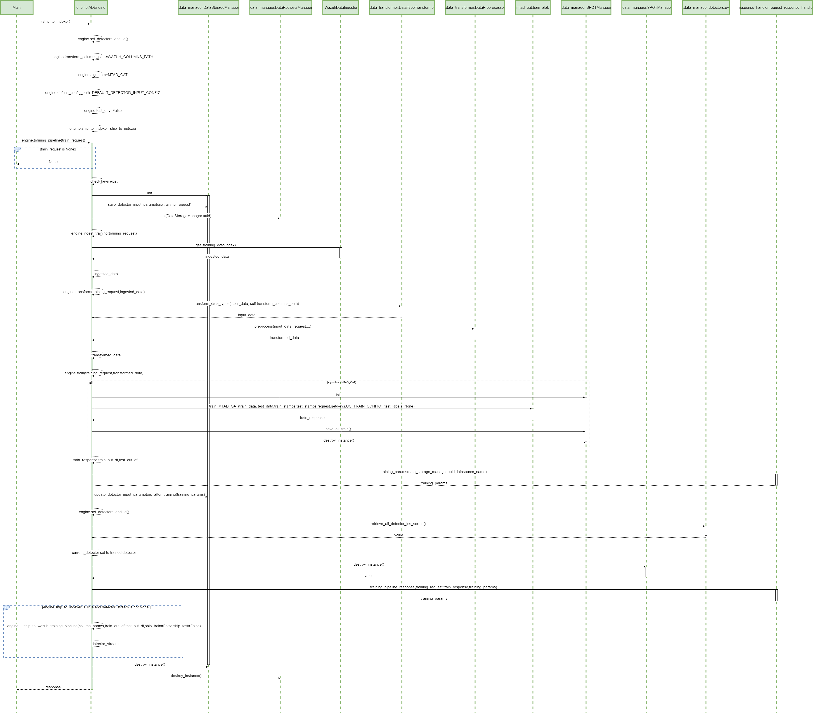
Parent links: LARC-001 ADBox training pipeline flow
4.2 ADBox prediction pipeline SWD-002
The diagram depicts the sequence of operations in the prediction pipeline, orchestrated by the ADBox Engine.
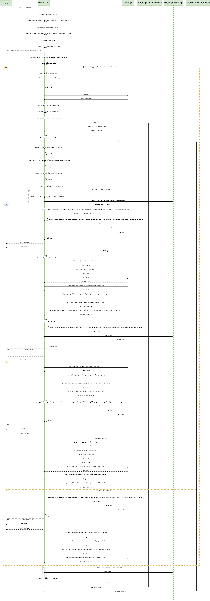
Parent links: LARC-002 ADBox historical data prediction pipeline flow, LARC-008 ADBox batch and real-time prediction flow
4.3 MTAD-GAT training SWD-003
The diagram depicts the sequence of operations run by the function train_MTAD_GAT of the MTAD_GAT ML-subpackage of ADBox.
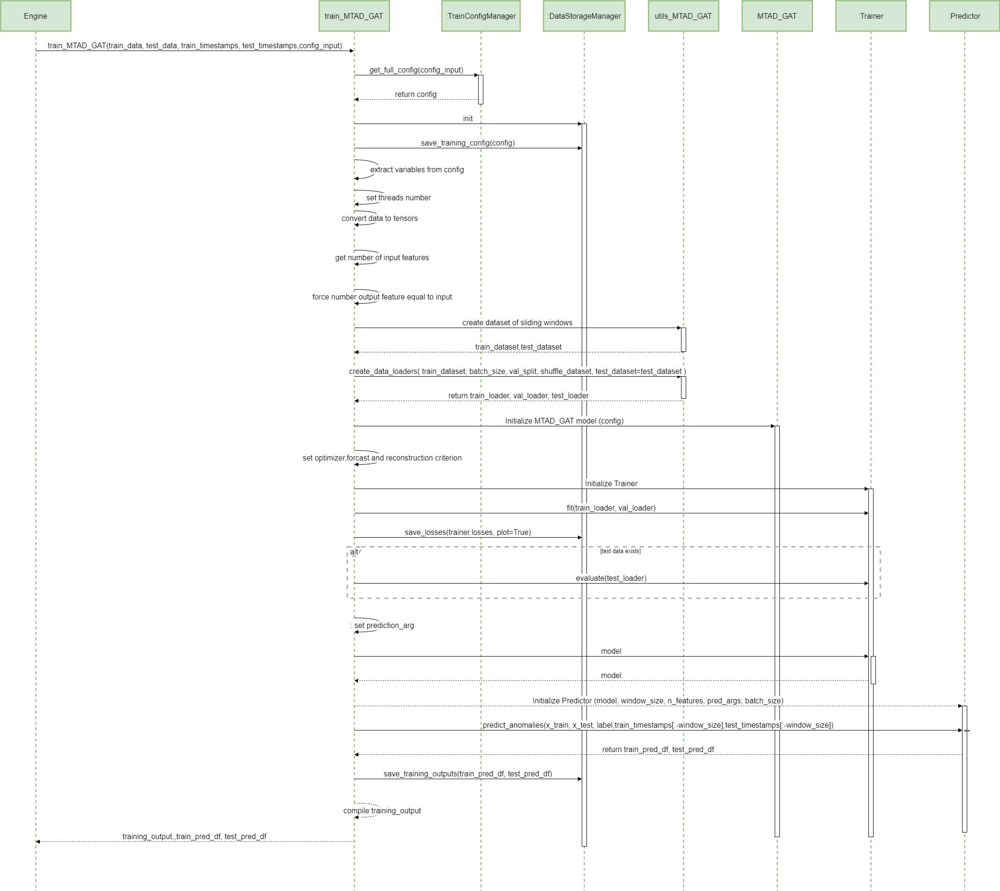
Parent links: LARC-009 ADBox machine learning package
4.4 MTAD-GAT prediction SWD-004
MTAD GAT prediction sequence diagram
The diagram depicts the sequence of operations run by the function predict_MTAD_GAT of the MTAD_GAT ML-subpackage of ADBOX.
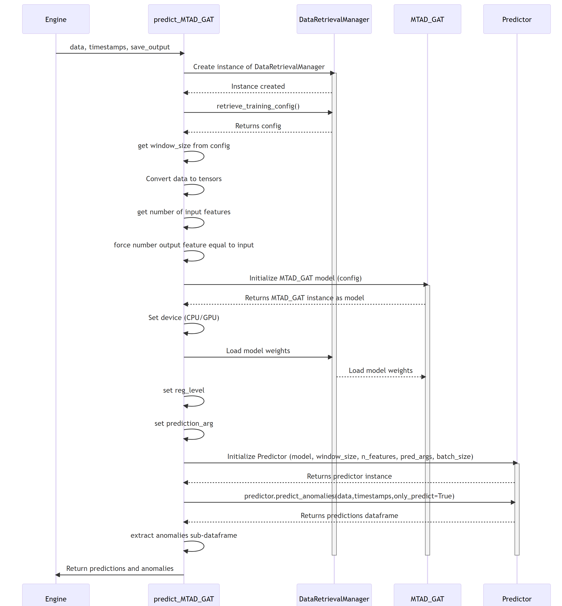
Parent links: LARC-009 ADBox machine learning package
4.5 Peak-over-threshold (POT) SWD-005
POT evaluation sequence diagram
The diagram depicts the sequence of operations run by the function pot_eval of the MTAD_GAT subpackage of ADBox.
This function runs the dynamic POT (i.e., peak-over-threshold) evaluation.
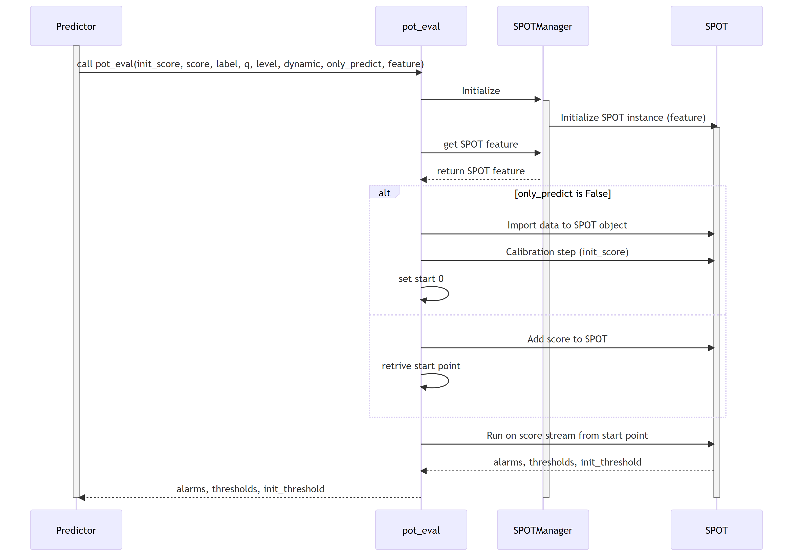
Parent links: LARC-009 ADBox machine learning package
4.6 ADBox Predictor score computation SWD-006
Predictor score computation sequence diagram
The diagram depicts the sequence of operations run by the function get_score method of the Predictor class in the MTAD GAT PyTorch subpackage of ADBox.
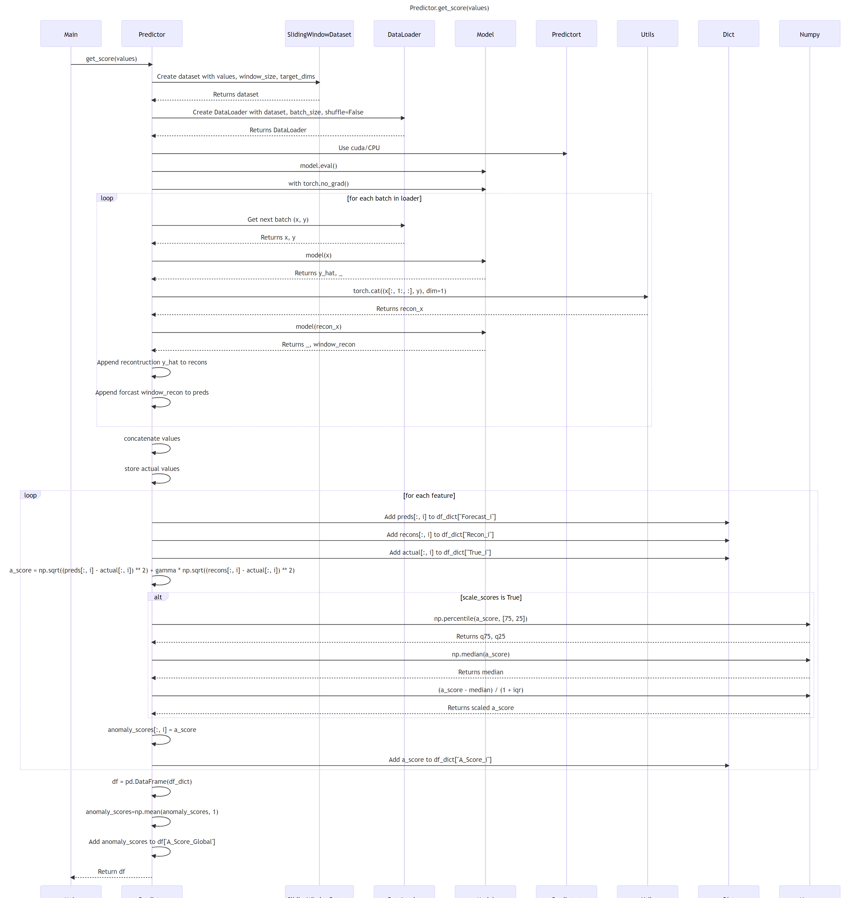
Parent links: LARC-009 ADBox machine learning package
4.7 ADBox MTAD-GAT anomaly prediction SWD-007
ADBox MTAD GAT anomaly prediction sequence diagram
The diagram depicts the sequence of operations run by the function predict_anomalies method of the Predictor class in the MTAD GAT PyTorch subpackage of ADBox.
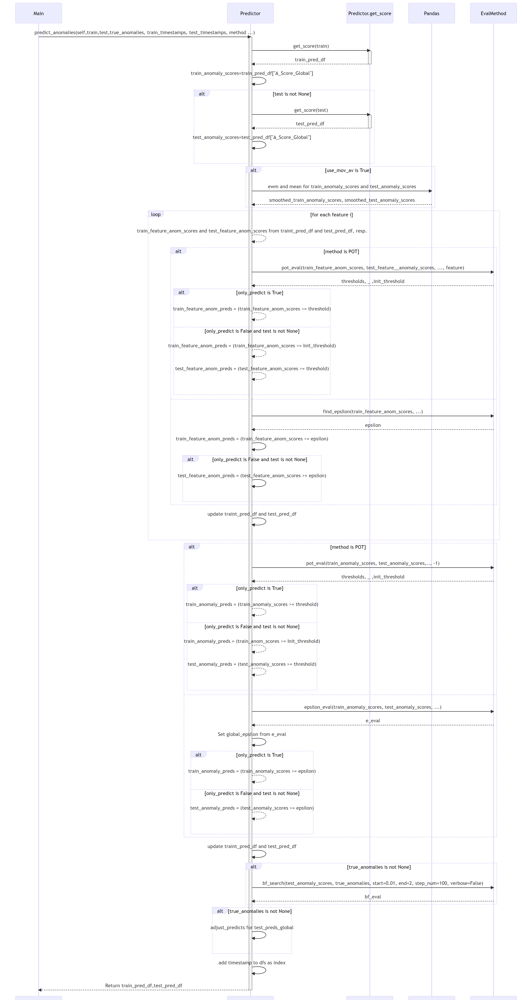
Parent links: LARC-009 ADBox machine learning package
4.8 ADBox MTAD-GAT Predictor SWD-008
ADBox MTAD GAT Predictor class diagram
The diagram below depicts the Predictor class of the MTAD GAT PyTorch subpackage of ADBox.
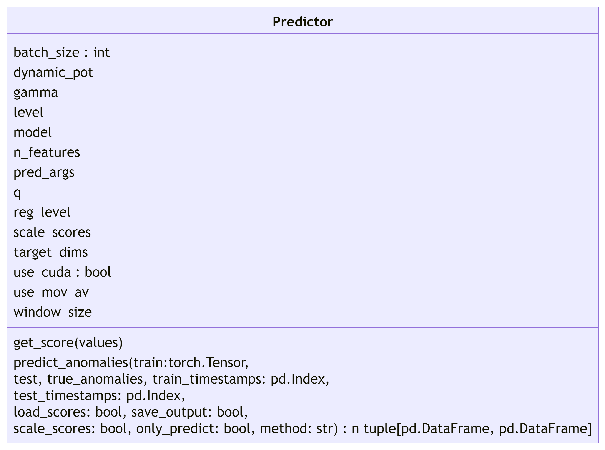
Parent links: LARC-009 ADBox machine learning package
4.9 ADBox data managers SWD-009
ADBox data manager class diagrams
The diagram below depicts the Data manager classes of ADBox, all designed and implemented as Singleton classes.
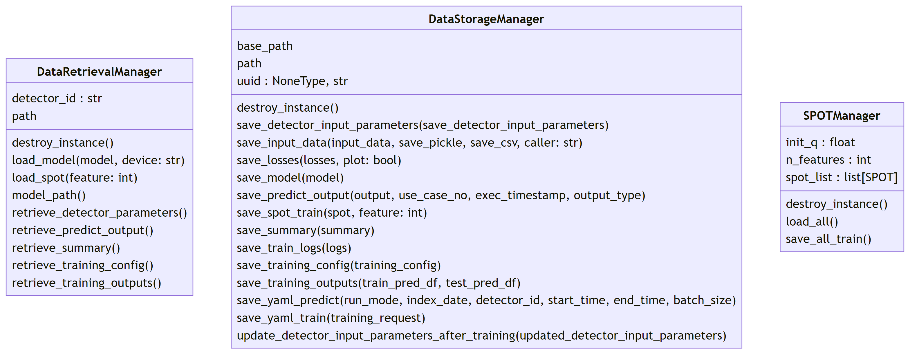
Parent links: LARC-010 ADBox data manager
4.10 ADBox data transformer SWD-010
ADBox data transformer class diagram
The diagram below depicts the Data Transformer class of ADBox.
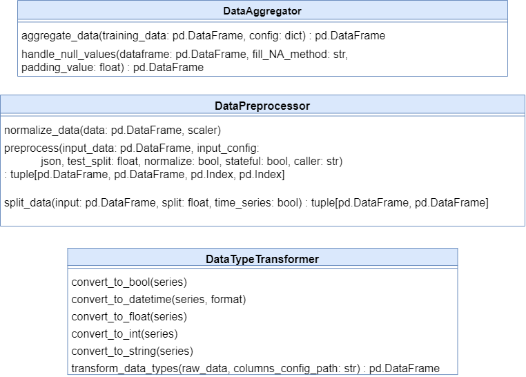
Parent links: LARC-003 ADBox preprocessing flow
4.11 ADBox preprocessing SWD-011
ADBox preprocessing sequence diagram
The diagram summarizes the sequence of actions of the method Preprocessor.preprocessing in the ADBox DataTransformer.
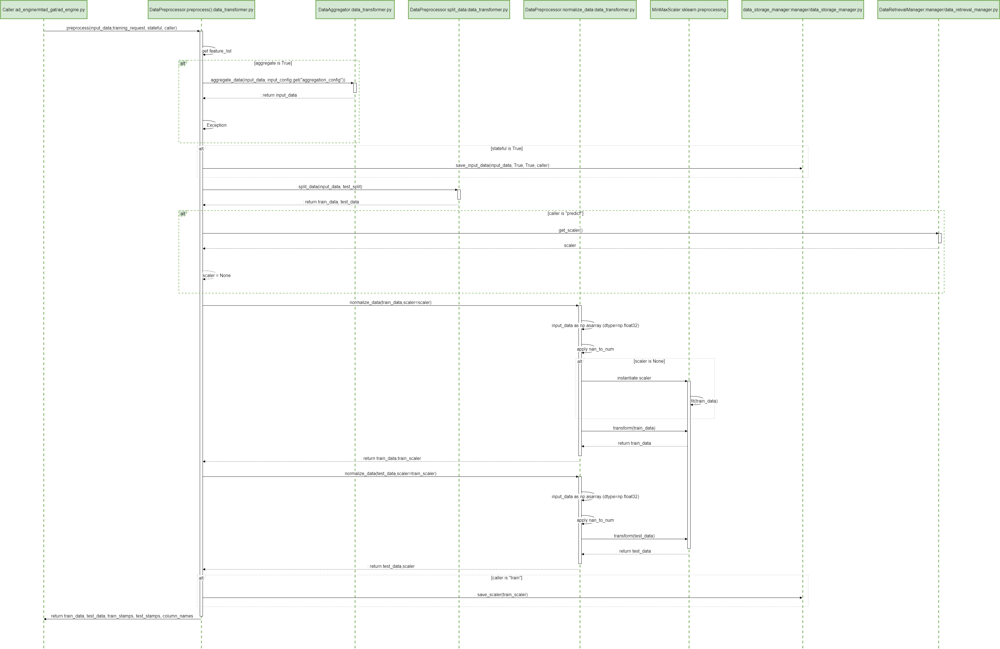
Parent links: LARC-003 ADBox preprocessing flow
4.12 ADBox TimeManager SWD-012
ADBox time manager class diagrams
The diagram below depicts the Time manager classes of ADBox.
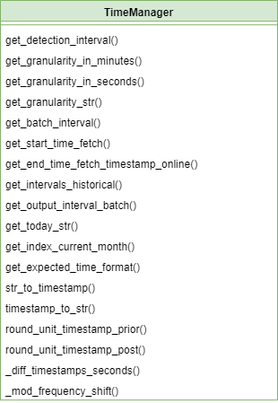
Parent links: LARC-011 ADBox TimeManager
4.13 ADBox Prediction pipeline's inner body SWD-013
Prediction pipeline sequence diagram
The diagram depicts the sequence of operations in the prediction pipeline body (private method), called by the prediction pipeline.
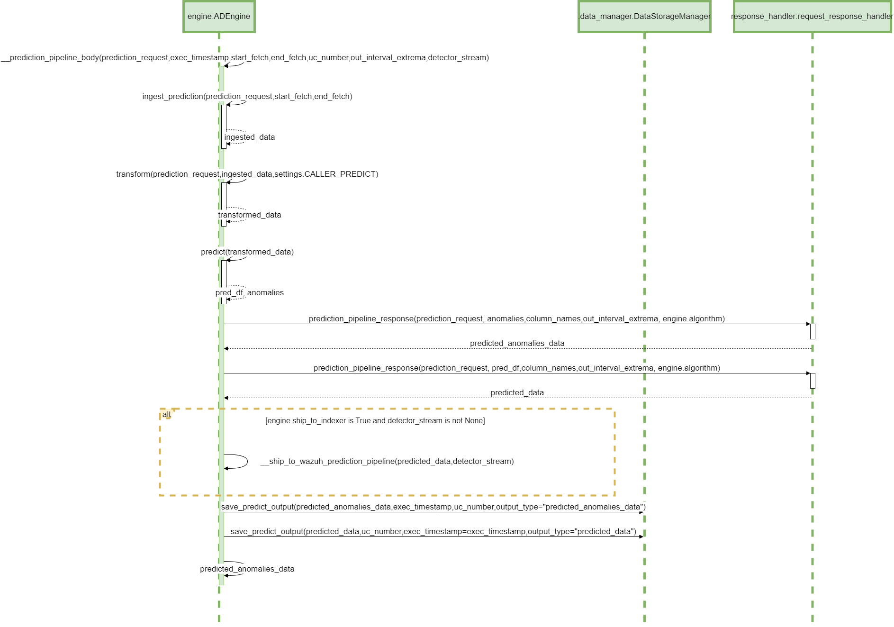
Parent links: LARC-002 ADBox historical data prediction pipeline flow, LARC-008 ADBox batch and real-time prediction flow
4.14 ADBox config managers SWD-014
ADBox config manager class diagrams
The diagram below depicts the Config manager classes of ADBox.
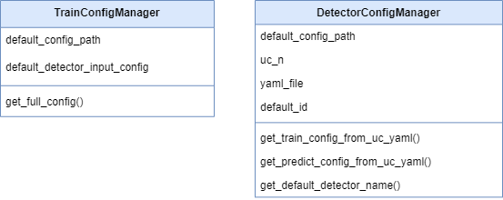
Parent links: LARC-012 ADBox ConfigManager
4.15 ADBox Shipper and Template Handler SWD-015
ADBox Shipper and Template Handler class diagrams
The diagram below depicts the DataShipper,WazuhDataShipper and TamplateHandler classes of ADBox.
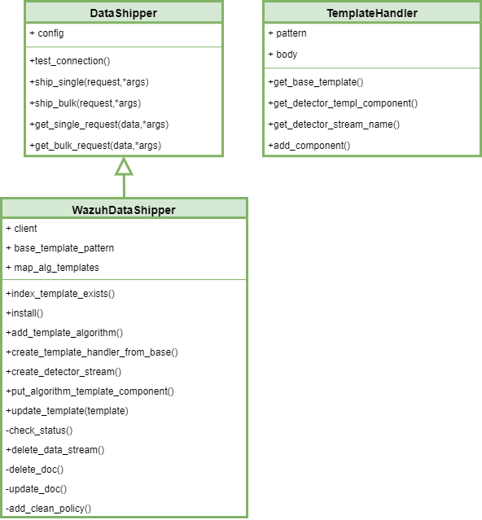
Parent links: LARC-014 ADBox Shipper
4.16 ADBox shipping of prediction data SWD-016
Sequence diagram of ADBox shipping of prediction data
The diagram below depicts the sequence of actions orchestrated by the ADBox Engine when shipping is enabled within the prediction pipeline.
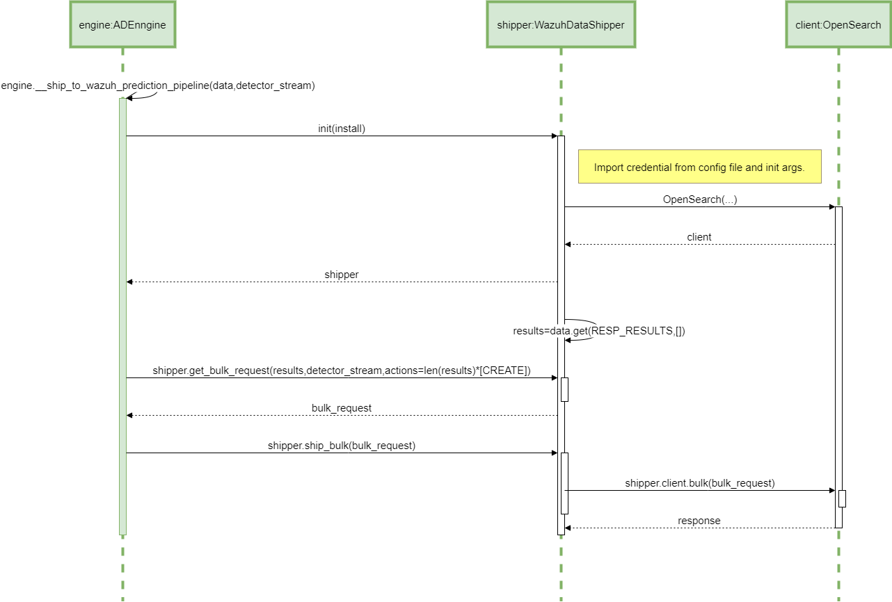
Parent links: LARC-014 ADBox Shipper
4.17 ADBox creation of a detector stream SWD-017
Sequence diagram of ADBox creation of a detector stream
The diagram below depicts the sequence of actions orchestrated by the ADBox Engine when shipping is enabled within the training pipeline.
Specifically, the __ship_to_wazuh_training_pipeline method which
- creates a detector data stream amd the correspondig templates.
- and can ship the test and training data predictions.
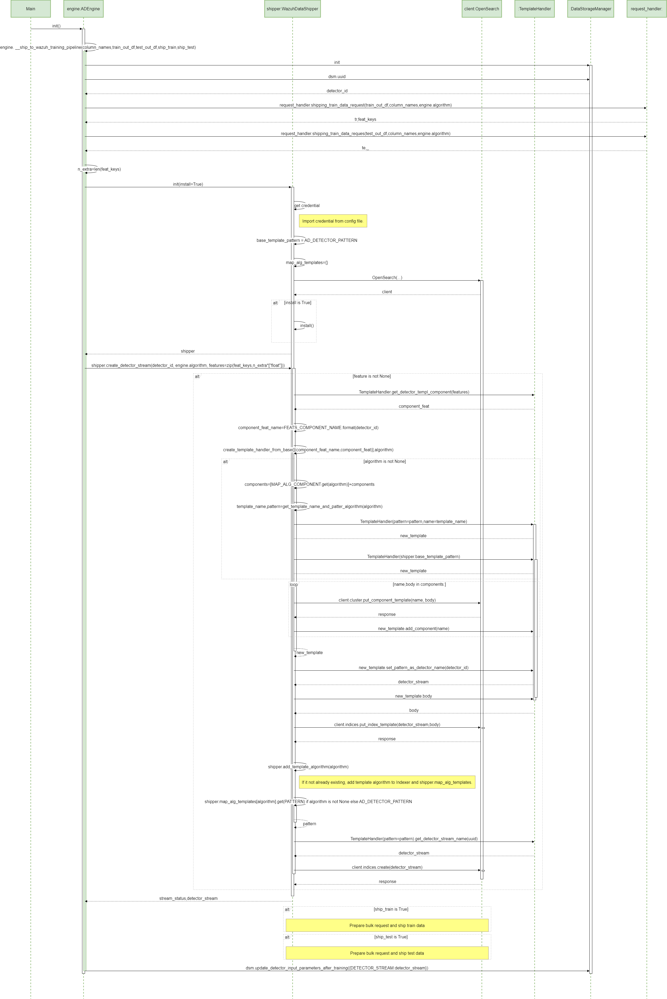
Parent links: LARC-014 ADBox Shipper